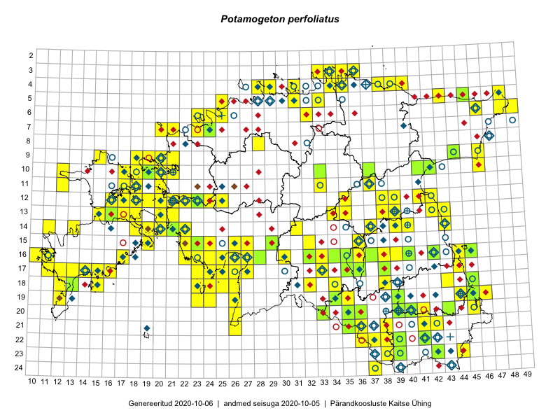

Potamogeton perfoliatus — kaelus-penikeel
Potamogetonaceae :: Potamogeton perfoliatus L. (1907); Potamogeton perfoliatus f. cordato-lanceolatus Mert. & W.D.J.Koch (2)

Kaart põhineb 1919 kirjel:
vaatlusi 1626
herbaareksemplare 283
PKÜ kirjeid1 7
LVA kirjeid2 3
Taime kaasaegsed ja ajaloolised leiukohad asuvad 250 ruudus.
Tingmärgid ja leidudega ruutude arvud periooditi uues (u) ja 2005 andmestikus (v)
| █ | vahemik | u3 | v4 |
|---|---|---|---|
| █ | 2006–2020 | 192 | – |
| ◆/◇ | 1971–2005 | 117 | 216 |
| ○ | 1921–1970 | 97 | 25 |
| + | kuni 1920 | 12 | 0 |
| × | hävinud | – | 0 |
| ? | kaheldav | – | 0 |
| Ruut | Leidja(d) | Leiuaeg | Kirje |
|---|---|---|---|
| 16-35 | Peedu Saar | 2020-08-10 | ruut/ala: Potamogeton perfoliatus L. |
| 11-41 | Helle Mäemets, Kadi Palmik-Das | 2020-08-03 | punkt: Potamogeton perfoliatus L. |
| 10-42 | Helle Mäemets, Kadi Palmik-Das | 2020-08-03 | punkt: Potamogeton perfoliatus L. |
| 15-43 | Helle Mäemets, Kadi Palmik-Das | 2020-07-28 | punkt: Potamogeton perfoliatus L. |
| 14-43 | Helle Mäemets, Kadi Palmik-Das | 2020-07-28 | punkt: Potamogeton perfoliatus L. |
| 13-42 | Helle Mäemets, Kadi Palmik-Das | 2020-07-28 | punkt: Potamogeton perfoliatus L. |
| 20-45 | Helle Mäemets, Kadi Palmik-Das | 2020-07-27 | punkt: Potamogeton perfoliatus L. |
| 18-45 | Helle Mäemets, Kadi Palmik-Das | 2020-07-27 | punkt: Potamogeton perfoliatus L. |
| 17-44 | Helle Mäemets, Kadi Palmik-Das | 2020-07-27 | punkt: Potamogeton perfoliatus L. |
| 16-44 | Helle Mäemets, Kadi Palmik-Das | 2020-07-27 | punkt: Potamogeton perfoliatus L. |
| 16-42 | Peedu Saar, Maidu Saar, Anti Saar | 2020-06-21 | punkt: Potamogeton perfoliatus L. |
| 12-38 | Ulvi Selgis, Enn Selgis | 2020-06-05 | punkt: Potamogeton perfoliatus L. |
| 11-17 | Toomas Kukk, Rein Kalamees | 2019-10-05 | ruut/ala: Potamogeton perfoliatus L. |
| 20-45 | Peedu Saar, Ott Luuk | 2019-09-24 | ruut/ala: Potamogeton perfoliatus L. |
| 09-18 | Ott Luuk | 2019-09-17 | ruut/ala: Potamogeton perfoliatus L. |
| 09-46 | Peedu Saar, Timo Luhamäe | 2019-09-11 | ruut/ala: Potamogeton perfoliatus L. |
| 20-45 | Ott Luuk | 2019-09-01 | ruut/ala: Potamogeton perfoliatus L. |
| 12-23 | Toomas Kukk, Peedu Saar | 2019-08-30 | TAA0148571: Potamogeton perfoliatus L. |
| 16-32 | Thea Kull, Mari Reitalu | 2019-08-29 | TAA0148075: Potamogeton perfoliatus L. |
| 16-30 | Peedu Saar, Martin Tikk, Toomas Kukk | 2019-08-28 | ruut/ala: Potamogeton perfoliatus L. |
| 14-31 | Ott Luuk, Eerik Leibak | 2019-08-28 | ruut/ala: Potamogeton perfoliatus L. |
| 17-33 | Peedu Saar, Martin Tikk, Toomas Kukk | 2019-08-27 | punkt: Potamogeton perfoliatus L. |
| 16-35 | Meeli Mesipuu, Timo Luhamäe | 2019-08-27 | ruut/ala: Potamogeton perfoliatus L. |
| 17-44 | Helle Mäemets, Kadi Palmik-Das | 2019-08-26 | punkt: Potamogeton perfoliatus L. |
| 16-44 | Helle Mäemets, Kadi Palmik-Das | 2019-08-26 | punkt: Potamogeton perfoliatus L. |
| 15-43 | Helle Mäemets, Kadi Palmik-Das | 2019-08-21 | punkt: Potamogeton perfoliatus L. |
| 11-41 | Helle Mäemets, Kadi Palmik-Das | 2019-08-21 | punkt: Potamogeton perfoliatus L. |
| 04-34 | Toomas Kukk, Rein Kalamees | 2019-08-06 | punkt: Potamogeton perfoliatus L. |
| 05-33 | Peedu Saar, Timo Luhamäe | 2019-08-05 | ruut/ala: Potamogeton perfoliatus L. |
| 20-45 | Helle Mäemets, Kadi Palmik-Das | 2019-08-02 | punkt: Potamogeton perfoliatus L. |
| 18-45 | Helle Mäemets, Kadi Palmik-Das | 2019-08-02 | punkt: Potamogeton perfoliatus L. |
| 22-41 | Peedu Saar, Toomas Kukk | 2019-08-01 | TAA0149515: Potamogeton perfoliatus L. |
| 13-42 | Helle Mäemets, Kadi Palmik-Das | 2019-08-01 | punkt: Potamogeton perfoliatus L. |
| 10-42 | Helle Mäemets, Kadi Palmik-Das | 2019-08-01 | punkt: Potamogeton perfoliatus L. |
| 10-43 | Helle Mäemets, Kadi Palmik-Das | 2019-08-01 | punkt: Potamogeton perfoliatus L. |
| 14-21 | Tiit Hallikma | 2019-07-20 | TAA0151634: Potamogeton perfoliatus L. |
| 19-35 | Ott Luuk, Peedu Saar | 2019-07-16 | ruut/ala: Potamogeton perfoliatus L. |
| 17-38 | Ott Luuk, Peedu Saar | 2019-07-15 | TAA0147536: Potamogeton perfoliatus L. |
| 23-42 | Toomas Kukk, Indrek Tammekänd | 2019-07-12 | ruut/ala: Potamogeton perfoliatus L. |
| 21-41 | Toomas Kukk, Indrek Tammekänd | 2019-07-10 | ruut/ala: Potamogeton perfoliatus L. |
| 21-42 | Toomas Kukk, Indrek Tammekänd | 2019-07-10 | ruut/ala: Potamogeton perfoliatus L. |
| 19-39 | Thea Kull | 2019-07-10 | ruut/ala: Potamogeton perfoliatus L. |
| 19-39 | Thea Kull | 2019-07-10 | punkt: Potamogeton perfoliatus L. |
| 20-45 | Ott Luuk, Tiit Hallikma | 2019-07-10 | ruut/ala: Potamogeton perfoliatus L. |
| 20-40 | Indrek Tammekänd, Toomas Kukk | 2019-07-09 | TAA0151763: Potamogeton perfoliatus L. |
| 10-41 | Ott Luuk, Peedu Saar | 2019-07-04 | ruut/ala: Potamogeton perfoliatus L. |
| 10-37 | Peedu Saar, Ott Luuk | 2019-06-10 | TAA0149532: Potamogeton perfoliatus L. |
| 16-45 | Ott Luuk | 2019-06-07 | ruut/ala: Potamogeton perfoliatus L. |
| 15-22 | Toomas Kukk, Peedu Saar, Heikki Luhamaa | 2018-09-18 | ruut/ala: Potamogeton perfoliatus L. |
| 05-48 | Peedu Saar, Toomas Kukk | 2018-09-04 | ruut/ala: Potamogeton perfoliatus L. |
| 05-48 | Peedu Saar, Toomas Kukk | 2018-09-04 | punkt: Potamogeton perfoliatus L. |
| 06-49 | Peedu Saar, Toomas Kukk | 2018-09-04 | ruut/ala: Potamogeton perfoliatus L. |
| 15-23 | Helle Mäemets, Kadi Palmik | 2018-08-30 | punkt: Potamogeton perfoliatus L. |
| 19-45 | Toomas Kukk, Eerik Leibak, Timo Luhamäe | 2018-08-27 | ruut/ala: Potamogeton perfoliatus L. |
| 04-40 | Anonymous | 2018-08-16 | punkt: Potamogeton perfoliatus L. |
| 04-40 | Anonymous | 2018-08-16 | punkt: Potamogeton perfoliatus L. |
| 04-39 | Anonymous | 2018-08-16 | punkt: Potamogeton perfoliatus L. |
| 11-41 | Helle Mäemets, Kadi Palmik-Das | 2018-08-08 | punkt: Potamogeton perfoliatus L. |
| 10-42 | Helle Mäemets, Kadi Palmik-Das | 2018-08-08 | punkt: Potamogeton perfoliatus L. |
| 10-43 | Helle Mäemets, Kadi Palmik-Das | 2018-08-08 | punkt: Potamogeton perfoliatus L. |
| 16-25 | Anonymous | 2018-08-08 | punkt: Potamogeton perfoliatus L. |
| 16-25 | Anonymous | 2018-08-08 | punkt: Potamogeton perfoliatus L. |
| 20-45 | Helle Mäemets, Kadi Palmik-Das | 2018-08-07 | punkt: Potamogeton perfoliatus L. |
| 18-45 | Helle Mäemets, Kadi Palmik-Das | 2018-08-07 | punkt: Potamogeton perfoliatus L. |
| 17-26 | Anonymous | 2018-08-07 | punkt: Potamogeton perfoliatus L. |
| 17-25 | Anonymous | 2018-08-07 | punkt: Potamogeton perfoliatus L. |
| 17-25 | Anonymous | 2018-08-07 | punkt: Potamogeton perfoliatus L. |
| 15-43 | Helle Mäemets, Kadi Palmik-Das | 2018-08-06 | punkt: Potamogeton perfoliatus L. |
| 13-42 | Helle Mäemets, Kadi Palmik-Das | 2018-08-06 | punkt: Potamogeton perfoliatus L. |
| 10-12 | Anonymous | 2018-08-01 | punkt: Potamogeton perfoliatus L. |
| 13-39 | Ulvi Selgis | 2018-07-29 | ruut/ala: Potamogeton perfoliatus L. |
| 06-25 | Anonymous | 2018-07-24 | punkt: Potamogeton perfoliatus L. |
| 06-25 | Anonymous | 2018-07-24 | punkt: Potamogeton perfoliatus L. |
| 10-20 | Anonymous | 2018-07-20 | punkt: Potamogeton perfoliatus L. |
| 10-21 | Anonymous | 2018-07-19 | punkt: Potamogeton perfoliatus L. |
| 10-20 | Anonymous | 2018-07-19 | punkt: Potamogeton perfoliatus L. |
| 10-20 | Anonymous | 2018-07-19 | punkt: Potamogeton perfoliatus L. |
| 12-38 | Ulvi Selgis | 2018-07-18 | LVA: -263303972 |
| 12-39 | Ulvi Selgis | 2018-07-17 | ruut/ala: Potamogeton perfoliatus L. |
| 12-39 | Ulvi Selgis | 2018-07-17 | LVA: 677085418 |
| 20-39 | Ilmar Uibopuu, Marko Vainu, Kadri Kuusksalu | 2018-07-14 | ruut/ala: Potamogeton perfoliatus L. |
| 11-37 | Helle Mäemets, Kadi Palmik | 2018-07-11 | ruut/ala: Potamogeton perfoliatus L. |
| 18-38 | Helle Mäemets, Kadi Palmik | 2018-07-05 | punkt: Potamogeton perfoliatus L. |
| 07-24 | Thea Kull, Kaili Kattai | 2018-07-04 | TAA0142368: Potamogeton perfoliatus L. |
| 06-23 | Peedu Saar | 2018-07-04 | ruut/ala: Potamogeton perfoliatus L. |
| 10-20 | Anonymous | 2018-06-04 | punkt: Potamogeton perfoliatus L. |
| 19-23 | Indrek Tammekänd | 2018-06-01 | ruut/ala: Potamogeton perfoliatus L. |
| 18-23 | Indrek Tammekänd | 2018-05-31–2018-06-02 | ruut/ala: Potamogeton perfoliatus L. |
| 12-22 | Anonymous | 2017-10-27 | punkt: Potamogeton perfoliatus L. |
| 12-22 | Anonymous | 2017-10-27 | punkt: Potamogeton perfoliatus L. |
| 12-21 | Anonymous | 2017-10-27 | punkt: Potamogeton perfoliatus L. |
| 12-21 | Anonymous | 2017-10-27 | punkt: Potamogeton perfoliatus L. |
| 12-21 | Anonymous | 2017-10-27 | punkt: Potamogeton perfoliatus L. |
| 12-21 | Anonymous | 2017-10-27 | punkt: Potamogeton perfoliatus L. |
| 12-21 | Anonymous | 2017-10-27 | punkt: Potamogeton perfoliatus L. |
| 12-21 | Anonymous | 2017-10-27 | punkt: Potamogeton perfoliatus L. |
| 12-21 | Anonymous | 2017-10-27 | punkt: Potamogeton perfoliatus L. |
| 12-21 | Anonymous | 2017-10-27 | punkt: Potamogeton perfoliatus L. |
| 16-24 | Indrek Tammekänd | 2017-10-11 | ruut/ala: Potamogeton perfoliatus L. |
| 04-39 | Anonymous | 2017-10-06 | punkt: Potamogeton perfoliatus L. |
| 05-25 | Anonymous | 2017-10-05 | punkt: Potamogeton perfoliatus L. |
| 05-25 | Anonymous | 2017-10-05 | punkt: Potamogeton perfoliatus L. |
| 05-25 | Anonymous | 2017-10-05 | punkt: Potamogeton perfoliatus L. |
| 05-25 | Anonymous | 2017-10-05 | punkt: Potamogeton perfoliatus L. |
| 05-25 | Anonymous | 2017-10-05 | punkt: Potamogeton perfoliatus L. |
| 05-25 | Anonymous | 2017-10-05 | punkt: Potamogeton perfoliatus L. |
| 16-17 | Anonymous | 2017-10-01 | punkt: Potamogeton perfoliatus L. |
| 04-38 | Peedu Saar, Toomas Kukk | 2017-09-28 | punkt: Potamogeton perfoliatus L. |
| 04-38 | Peedu Saar, Toomas Kukk | 2017-09-28 | ruut/ala: Potamogeton perfoliatus L. |
| 10-21 | Anonymous | 2017-09-27 | punkt: Potamogeton perfoliatus L. |
| 10-21 | Anonymous | 2017-09-27 | punkt: Potamogeton perfoliatus L. |
| 16-26 | Indrek Tammekänd | 2017-09-19 | ruut/ala: Potamogeton perfoliatus L. |
| 12-16 | Peedu Saar, Ott Luuk | 2017-09-15 | ruut/ala: Potamogeton perfoliatus L. |
| 12-16 | Peedu Saar, Ott Luuk | 2017-09-15 | punkt: Potamogeton perfoliatus L. |
| 04-28 | Anonymous | 2017-09-15 | punkt: Potamogeton perfoliatus L. |
| 04-28 | Anonymous | 2017-09-15 | punkt: Potamogeton perfoliatus L. |
| 03-33 | Anonymous | 2017-09-13 | punkt: Potamogeton perfoliatus L. |
| 03-33 | Anonymous | 2017-09-13 | punkt: Potamogeton perfoliatus L. |
| 03-33 | Anonymous | 2017-09-13 | punkt: Potamogeton perfoliatus L. |
| 11-12 | Toomas Kukk, Indrek Tammekänd | 2017-09-12 | ruut/ala: Potamogeton perfoliatus L. |
| 11-18 | Peedu Saar, Ott Luuk | 2017-09-12 | ruut/ala: Potamogeton perfoliatus L. |
| 10-18 | Ott Luuk, Peedu Saar | 2017-09-12 | ruut/ala: Potamogeton perfoliatus L. |
| 12-17 | Toomas Kukk, Indrek Tammekänd | 2017-09-11 | ruut/ala: Potamogeton perfoliatus L. |
| 12-18 | Toomas Kukk, Peeter Pärn | 2017-09-09–2017-09-10 | ruut/ala: Potamogeton perfoliatus L. |
| 14-21 | Anonymous | 2017-09-06 | punkt: Potamogeton perfoliatus L. |
| 03-34 | Anonymous | 2017-08-31 | punkt: Potamogeton perfoliatus L. |
| 03-34 | Anonymous | 2017-08-31 | punkt: Potamogeton perfoliatus L. |
| 10-21 | Anonymous | 2017-08-28 | punkt: Potamogeton perfoliatus L. |
| 10-21 | Anonymous | 2017-08-28 | punkt: Potamogeton perfoliatus L. |
| 10-21 | Anonymous | 2017-08-28 | punkt: Potamogeton perfoliatus L. |
| 10-21 | Anonymous | 2017-08-28 | punkt: Potamogeton perfoliatus L. |
| 10-21 | Anonymous | 2017-08-28 | punkt: Potamogeton perfoliatus L. |
| 12-41 | Ott Luuk, Peedu Saar | 2017-08-23 | ruut/ala: Potamogeton perfoliatus L. |
| 04-28 | Anonymous | 2017-08-23 | punkt: Potamogeton perfoliatus L. |
| 04-29 | Anonymous | 2017-08-22 | punkt: Potamogeton perfoliatus L. |
| 14-43 | Peedu Saar, Ott Luuk | 2017-08-21 | ruut/ala: Potamogeton perfoliatus L. |
| 17-25 | Anonymous | 2017-08-17 | punkt: Potamogeton perfoliatus L. |
| 17-25 | Anonymous | 2017-08-17 | punkt: Potamogeton perfoliatus L. |
| 16-25 | Anonymous | 2017-08-17 | punkt: Potamogeton perfoliatus L. |
| 16-25 | Anonymous | 2017-08-17 | punkt: Potamogeton perfoliatus L. |
| 16-25 | Anonymous | 2017-08-17 | punkt: Potamogeton perfoliatus L. |
| 17-25 | Anonymous | 2017-08-17 | punkt: Potamogeton perfoliatus L. |
| 17-25 | Anonymous | 2017-08-17 | punkt: Potamogeton perfoliatus L. |
| 17-25 | Anonymous | 2017-08-17 | punkt: Potamogeton perfoliatus L. |
| 17-25 | Anonymous | 2017-08-17 | punkt: Potamogeton perfoliatus L. |
| 17-25 | Anonymous | 2017-08-17 | punkt: Potamogeton perfoliatus L. |
| 17-25 | Anonymous | 2017-08-17 | punkt: Potamogeton perfoliatus L. |
| 16-25 | Anonymous | 2017-08-16 | punkt: Potamogeton perfoliatus L. |
| 16-25 | Anonymous | 2017-08-16 | punkt: Potamogeton perfoliatus L. |
| 17-25 | Anonymous | 2017-08-16 | punkt: Potamogeton perfoliatus L. |
| 17-25 | Anonymous | 2017-08-16 | punkt: Potamogeton perfoliatus L. |
| 17-25 | Anonymous | 2017-08-16 | punkt: Potamogeton perfoliatus L. |
| 17-25 | Anonymous | 2017-08-16 | punkt: Potamogeton perfoliatus L. |
| 17-25 | Anonymous | 2017-08-16 | punkt: Potamogeton perfoliatus L. |
| 17-25 | Anonymous | 2017-08-16 | punkt: Potamogeton perfoliatus L. |
| 04-39 | Anonymous | 2017-08-15 | punkt: Potamogeton perfoliatus L. |
| 04-40 | Anonymous | 2017-08-15 | punkt: Potamogeton perfoliatus L. |
| 15-29 | Toomas Kukk, Ilmar Uibopuu | 2017-08-11 | TAA0141614: Potamogeton perfoliatus L. |
| 15-29 | Ilmar Uibopuu, Toomas Kukk | 2017-08-11 | ruut/ala: Potamogeton perfoliatus L. |
| 11-20 | Ott Luuk, Ilmar Uibopuu | 2017-08-10 | ruut/ala: Potamogeton perfoliatus L. |
| 17-15 | Anonymous | 2017-08-10 | punkt: Potamogeton perfoliatus L. |
| 17-15 | Anonymous | 2017-08-10 | punkt: Potamogeton perfoliatus L. |
| 17-15 | Anonymous | 2017-08-10 | punkt: Potamogeton perfoliatus L. |
| 17-15 | Anonymous | 2017-08-10 | punkt: Potamogeton perfoliatus L. |
| 17-15 | Anonymous | 2017-08-10 | punkt: Potamogeton perfoliatus L. |
| 17-14 | Anonymous | 2017-08-10 | punkt: Potamogeton perfoliatus L. |
| 12-24 | Peedu Saar, Timo Luhamäe | 2017-08-09 | ruut/ala: Potamogeton perfoliatus L. |
| 12-25 | Peedu Saar, Timo Luhamäe | 2017-08-09 | ruut/ala: Potamogeton perfoliatus L. |
| 05-43 | Katrit Karus, Tõnu Feldmann | 2017-08-09 | ruut/ala: Potamogeton perfoliatus L. |
| 06-46 | Katrit Karus, Tõnu Feldmann | 2017-08-09 | ruut/ala: Potamogeton perfoliatus L. |
| 06-46 | Katrit Karus, Tõnu Feldmann | 2017-08-09 | ruut/ala: Potamogeton perfoliatus L. |
| 17-26 | Anonymous | 2017-08-09 | punkt: Potamogeton perfoliatus L. |
| 17-26 | Anonymous | 2017-08-09 | punkt: Potamogeton perfoliatus L. |
| 17-26 | Anonymous | 2017-08-09 | punkt: Potamogeton perfoliatus L. |
| 17-26 | Anonymous | 2017-08-09 | punkt: Potamogeton perfoliatus L. |
| 08-28 | Helle Mäemets, Kadi Palmik | 2017-08-03 | ruut/ala: Potamogeton perfoliatus L. |
| 19-44 | Helle Mäemets, Kadi Palmik | 2017-08-02 | ruut/ala: Potamogeton perfoliatus L. |
| 16-37 | Thea Kull, Ott Luuk | 2017-08-01 | TAA0142282: Potamogeton perfoliatus L. |
| 16-37 | Ott Luuk, Thea Kull | 2017-08-01 | ruut/ala: Potamogeton perfoliatus L. |
| 21-36 | Peedu Saar, Ott Luuk | 2017-07-28 | ruut/ala: Potamogeton perfoliatus L. |
| 22-36 | Ott Luuk, Peedu Saar | 2017-07-28 | ruut/ala: Potamogeton perfoliatus L. |
| 22-39 | Ott Luuk, Peedu Saar | 2017-07-27 | ruut/ala: Potamogeton perfoliatus L. |
| 23-39 | Ott Luuk, Peedu Saar | 2017-07-27 | TAA0142746: Potamogeton perfoliatus L. |
| 15-43 | Helle Mäemets, Kadi Palmik | 2017-07-26 | punkt: Potamogeton perfoliatus L. |
| 20-45 | Helle Mäemets, Kadi Palmik | 2017-07-25 | punkt: Potamogeton perfoliatus L. |
| 18-45 | Helle Mäemets, Kadi Palmik | 2017-07-25 | punkt: Potamogeton perfoliatus L. |
| 17-44 | Helle Mäemets, Kadi Palmik | 2017-07-25 | punkt: Potamogeton perfoliatus L. |
| 12-42 | Peedu Saar | 2017-07-24 | ruut/ala: Potamogeton perfoliatus L. |
| 13-43 | Peedu Saar | 2017-07-24 | ruut/ala: Potamogeton perfoliatus L. |
| 13-42 | Helle Mäemets, Kadi Palmik | 2017-07-24 | punkt: Potamogeton perfoliatus L. |
| 11-41 | Helle Mäemets, Kadi Palmik | 2017-07-24 | punkt: Potamogeton perfoliatus L. |
| 10-42 | Helle Mäemets, Kadi Palmik | 2017-07-24 | punkt: Potamogeton perfoliatus L. |
| 10-43 | Helle Mäemets, Kadi Palmik | 2017-07-24 | punkt: Potamogeton perfoliatus L. |
| 06-48 | Toomas Kukk | 2017-07-21 | ruut/ala: Potamogeton perfoliatus L. |
| 06-49 | Toomas Kukk | 2017-07-21 | ruut/ala: Potamogeton perfoliatus L. |
| 13-16 | Anonymous | 2017-07-21 | punkt: Potamogeton perfoliatus L. |
| 17-11 | Anonymous | 2017-07-21 | punkt: Potamogeton perfoliatus L. |
| 17-23 | Indrek Tammekänd, Eike Tammekänd | 2017-07-20 | ruut/ala: Potamogeton perfoliatus L. |
| 16-17 | Anonymous | 2017-07-18 | punkt: Potamogeton perfoliatus L. |
| 16-17 | Anonymous | 2017-07-18 | punkt: Potamogeton perfoliatus L. |
| 12-35 | Helle Mäemets, Kadi Palmik | 2017-07-14 | ruut/ala: Potamogeton perfoliatus L. |
| 18-15 | Anonymous | 2017-07-13 | punkt: Potamogeton perfoliatus L. |
| 18-15 | Anonymous | 2017-07-13 | punkt: Potamogeton perfoliatus L. |
| 16-17 | Anonymous | 2017-07-12 | punkt: Potamogeton perfoliatus L. |
| 16-17 | Anonymous | 2017-07-12 | punkt: Potamogeton perfoliatus L. |
| 18-23 | Mari Reitalu, Sirje Azarov, Ester Valdvee, Triin Reitalu | 2017-07-11–2017-07-13 | ruut/ala: Potamogeton perfoliatus L. |
| 16-40 | Ott Luuk | 2017-07-09 | TAA0142868: Potamogeton perfoliatus L. |
| 11-33 | Tõnu Feldmann, Katrit Karus | 2017-07-03 | ruut/ala: Potamogeton perfoliatus L. |
| 10-33 | Tõnu Feldmann, Katrit Karus | 2017-07-03 | TAA0144443: Potamogeton perfoliatus L. |
| 10-33 | Katrit Karus, Tõnu Feldmann | 2017-07-03 | ruut/ala: Potamogeton perfoliatus L. |
| 18-32 | Helle Mäemets, Kadi Palmik | 2017-07-03 | ruut/ala: Potamogeton perfoliatus L. |
| 16-26 | Helle Mäemets, Kadi Palmik | 2017-06-28 | ruut/ala: Potamogeton perfoliatus L. |
| 16-17 | Anonymous | 2017-06-27 | punkt: Potamogeton perfoliatus L. |
| 16-35 | Thea Kull, Ott Luuk | 2017-06-22 | TAA0142241: Potamogeton perfoliatus L. |
| 16-34 | Ott Luuk, Thea Kull | 2017-06-22 | TAA0142865: Potamogeton perfoliatus L. |
| 12-18 | Peedu Saar, Ilmar Uibopuu | 2017-06-15 | ruut/ala: Potamogeton perfoliatus L. |
| 11-18 | Anonymous | 2017-05-12 | punkt: Potamogeton perfoliatus L. |
| 16-17 | Anonymous | 2017-03-31 | punkt: Potamogeton perfoliatus L. |
| 16-17 | Anonymous | 2017-03-23 | punkt: Potamogeton perfoliatus L. |
| 14-11 | Peedu Saar, Ott Luuk | 2016-10-07 | ruut/ala: Potamogeton perfoliatus L. |
| 16-17 | Anonymous | 2016-10-04 | punkt: Potamogeton perfoliatus L. |
| 16-17 | Anonymous | 2016-10-04 | punkt: Potamogeton perfoliatus L. |
| 16-17 | Anonymous | 2016-10-04 | punkt: Potamogeton perfoliatus L. |
| 16-17 | Anonymous | 2016-10-04 | punkt: Potamogeton perfoliatus L. |
| 16-17 | Anonymous | 2016-10-04 | punkt: Potamogeton perfoliatus L. |
| 16-17 | Anonymous | 2016-10-03 | punkt: Potamogeton perfoliatus L. |
| 16-17 | Anonymous | 2016-10-03 | punkt: Potamogeton perfoliatus L. |
| 18-24 | Peedu Saar, Ott Luuk | 2016-09-21 | ruut/ala: Potamogeton perfoliatus L. |
| 19-23 | Ott Luuk, Peedu Saar | 2016-09-21 | ruut/ala: Potamogeton perfoliatus L. |
| 18-23 | Ott Luuk, Peedu Saar | 2016-09-21 | ruut/ala: Potamogeton perfoliatus L. |
| 10-19 | Meeli Mesipuu, Ott Luuk | 2016-09-15 | TAA0144102: Potamogeton perfoliatus L. |
| 10-20 | Anonymous | 2016-09-12 | punkt: Potamogeton perfoliatus L. |
| 10-20 | Anonymous | 2016-09-12 | punkt: Potamogeton perfoliatus L. |
| 10-20 | Anonymous | 2016-09-12 | punkt: Potamogeton perfoliatus L. |
| 10-21 | Anonymous | 2016-09-12 | punkt: Potamogeton perfoliatus L. |
| 18-15 | Anonymous | 2016-09-05 | punkt: Potamogeton perfoliatus L. |
| 17-15 | Anonymous | 2016-09-05 | punkt: Potamogeton perfoliatus L. |
| 16-17 | Peedu Saar, Ott Luuk | 2016-09-01 | ruut/ala: Potamogeton perfoliatus L. |
| 04-31 | Sander Laherand, Toomas Kukk | 2016-08-31 | ruut/ala: Potamogeton perfoliatus L. |
| 13-16 | Ott Luuk, Peedu Saar | 2016-08-31 | TAA0139239: Potamogeton perfoliatus L. |
| 17-44 | Peedu Saar | 2016-08-24 | ruut/ala: Potamogeton perfoliatus L. |
| 20-36 | Ott Luuk, Thea Kull | 2016-08-23 | TAA0145611: Potamogeton perfoliatus L. |
| 23-44 | Peedu Saar, Karin Kikas | 2016-08-19 | ruut/ala: Potamogeton perfoliatus L. |
| 17-27 | Elle Meier, Oliver Parrest | 2016-08-19 | punkt: Potamogeton perfoliatus L. |
| 04-39 | Anonymous | 2016-08-19 | punkt: Potamogeton perfoliatus L. |
| 04-39 | Anonymous | 2016-08-19 | punkt: Potamogeton perfoliatus L. |
| 04-40 | Anonymous | 2016-08-19 | punkt: Potamogeton perfoliatus L. |
| 11-17 | Anonymous | 2016-08-18 | punkt: Potamogeton perfoliatus L. |
| 11-17 | Anonymous | 2016-08-18 | punkt: Potamogeton perfoliatus L. |
| 11-17 | Anonymous | 2016-08-18 | punkt: Potamogeton perfoliatus L. |
| 12-18 | Anonymous | 2016-08-18 | punkt: Potamogeton perfoliatus L. |
| 12-18 | Anonymous | 2016-08-18 | punkt: Potamogeton perfoliatus L. |
| 11-17 | Anonymous | 2016-08-17 | punkt: Potamogeton perfoliatus L. |
| 12-18 | Anonymous | 2016-08-17 | punkt: Potamogeton perfoliatus L. |
| 12-18 | Anonymous | 2016-08-17 | punkt: Potamogeton perfoliatus L. |
| 12-19 | Anonymous | 2016-08-17 | punkt: Potamogeton perfoliatus L. |
| 12-18 | Anonymous | 2016-08-17 | punkt: Potamogeton perfoliatus L. |
| 12-18 | Anonymous | 2016-08-17 | punkt: Potamogeton perfoliatus L. |
| 12-18 | Anonymous | 2016-08-17 | punkt: Potamogeton perfoliatus L. |
| 12-18 | Anonymous | 2016-08-17 | punkt: Potamogeton perfoliatus L. |
| 12-18 | Anonymous | 2016-08-17 | punkt: Potamogeton perfoliatus L. |
| 12-18 | Anonymous | 2016-08-17 | punkt: Potamogeton perfoliatus L. |
| 11-18 | Anonymous | 2016-08-16 | punkt: Potamogeton perfoliatus L. |
| 11-17 | Anonymous | 2016-08-16 | punkt: Potamogeton perfoliatus L. |
| 11-18 | Anonymous | 2016-08-16 | punkt: Potamogeton perfoliatus L. |
| 11-18 | Anonymous | 2016-08-16 | punkt: Potamogeton perfoliatus L. |
| 11-18 | Anonymous | 2016-08-16 | punkt: Potamogeton perfoliatus L. |
| 11-18 | Anonymous | 2016-08-16 | punkt: Potamogeton perfoliatus L. |
| 11-18 | Anonymous | 2016-08-16 | punkt: Potamogeton perfoliatus L. |
| 11-18 | Anonymous | 2016-08-16 | punkt: Potamogeton perfoliatus L. |
| 11-18 | Anonymous | 2016-08-16 | punkt: Potamogeton perfoliatus L. |
| 11-18 | Anonymous | 2016-08-16 | punkt: Potamogeton perfoliatus L. |
| 11-18 | Anonymous | 2016-08-16 | punkt: Potamogeton perfoliatus L. |
| 11-18 | Anonymous | 2016-08-16 | punkt: Potamogeton perfoliatus L. |
| 11-17 | Anonymous | 2016-08-16 | punkt: Potamogeton perfoliatus L. |
| 11-17 | Anonymous | 2016-08-16 | punkt: Potamogeton perfoliatus L. |
| 11-18 | Anonymous | 2016-08-15 | punkt: Potamogeton perfoliatus L. |
| 11-18 | Anonymous | 2016-08-15 | punkt: Potamogeton perfoliatus L. |
| 11-18 | Anonymous | 2016-08-15 | punkt: Potamogeton perfoliatus L. |
| 17-16 | Toomas Kukk, Meeli Mesipuu | 2016-08-12 | ruut/ala: Potamogeton perfoliatus L. |
| 17-14 | Toomas Kukk, Meeli Mesipuu, Johannes Kõdar | 2016-08-11 | ruut/ala: Potamogeton perfoliatus L. |
| 13-15 | Maret Gerz, Peedu Saar | 2016-08-11 | ruut/ala: Potamogeton perfoliatus L. |
| 11-18 | Sander Laherand, Peedu Saar, Nele Jõessar | 2016-08-08 | ruut/ala: Potamogeton perfoliatus L. |
| 13-17 | Anonymous | 2016-08-06 | punkt: Potamogeton perfoliatus L. |
| 20-43 | Thea Kull, Peedu Saar | 2016-08-05 | TAA0139383: Potamogeton perfoliatus L. |
| 17-14 | Anonymous | 2016-08-05 | punkt: Potamogeton perfoliatus L. |
| 17-15 | Anonymous | 2016-08-05 | punkt: Potamogeton perfoliatus L. |
| 10-41 | Ott Luuk, Eerik Leibak | 2016-08-04 | punkt: Potamogeton perfoliatus L. |
| 10-41 | Ott Luuk, Eerik Leibak | 2016-08-04 | TAA0145578: Potamogeton perfoliatus L. |
| 10-42 | Ott Luuk, Eerik Leibak | 2016-08-04 | TAA0152352: Potamogeton perfoliatus L. |
| 20-45 | Helle Mäemets, Kadi Palmik | 2016-08-04 | punkt: Potamogeton perfoliatus L. |
| 18-45 | Helle Mäemets, Kadi Palmik | 2016-08-04 | punkt: Potamogeton perfoliatus L. |
| 17-44 | Helle Mäemets, Kadi Palmik | 2016-08-04 | punkt: Potamogeton perfoliatus L. |
| 16-44 | Helle Mäemets, Kadi Palmik | 2016-08-04 | punkt: Potamogeton perfoliatus L. |
| 15-43 | Helle Mäemets, Kadi Palmik | 2016-08-02 | punkt: Potamogeton perfoliatus L. |
| 13-42 | Helle Mäemets, Kadi Palmik | 2016-08-02 | punkt: Potamogeton perfoliatus L. |
| 16-17 | Anonymous | 2016-08-02 | punkt: Potamogeton perfoliatus L. |
| 11-41 | Helle Mäemets, Kadi Palmik | 2016-08-01 | punkt: Potamogeton perfoliatus L. |
| 10-42 | Helle Mäemets, Kadi Palmik | 2016-08-01 | punkt: Potamogeton perfoliatus L. |
| 10-43 | Helle Mäemets, Kadi Palmik | 2016-08-01 | punkt: Potamogeton perfoliatus L. |
| 16-17 | Anonymous | 2016-08-01 | punkt: Potamogeton perfoliatus L. |
| 16-17 | Anonymous | 2016-08-01 | punkt: Potamogeton perfoliatus L. |
| 16-17 | Anonymous | 2016-08-01 | punkt: Potamogeton perfoliatus L. |
| 16-17 | Anonymous | 2016-08-01 | punkt: Potamogeton perfoliatus L. |
| 16-17 | Anonymous | 2016-08-01 | punkt: Potamogeton perfoliatus L. |
| 16-17 | Anonymous | 2016-08-01 | punkt: Potamogeton perfoliatus L. |
| 16-17 | Anonymous | 2016-08-01 | punkt: Potamogeton perfoliatus L. |
| 16-17 | Anonymous | 2016-08-01 | punkt: Potamogeton perfoliatus L. |
| 17-26 | Anonymous | 2016-07-28 | punkt: Potamogeton perfoliatus L. |
| 17-26 | Anonymous | 2016-07-28 | punkt: Potamogeton perfoliatus L. |
| 04-39 | Anonymous | 2016-07-27 | punkt: Potamogeton perfoliatus L. |
| 04-34 | Hannes Pehlak, Toomas Kukk | 2016-07-26 | ruut/ala: Potamogeton perfoliatus L. |
| 17-25 | Anonymous | 2016-07-26 | punkt: Potamogeton perfoliatus L. |
| 17-25 | Anonymous | 2016-07-26 | punkt: Potamogeton perfoliatus L. |
| 17-25 | Anonymous | 2016-07-26 | punkt: Potamogeton perfoliatus L. |
| 17-25 | Anonymous | 2016-07-26 | punkt: Potamogeton perfoliatus L. |
| 17-25 | Anonymous | 2016-07-26 | punkt: Potamogeton perfoliatus L. |
| 17-25 | Anonymous | 2016-07-26 | punkt: Potamogeton perfoliatus L. |
| 17-25 | Anonymous | 2016-07-26 | punkt: Potamogeton perfoliatus L. |
| 16-25 | Anonymous | 2016-07-26 | punkt: Potamogeton perfoliatus L. |
| 16-25 | Anonymous | 2016-07-26 | punkt: Potamogeton perfoliatus L. |
| 16-25 | Anonymous | 2016-07-26 | punkt: Potamogeton perfoliatus L. |
| 16-25 | Anonymous | 2016-07-26 | punkt: Potamogeton perfoliatus L. |
| 16-25 | Anonymous | 2016-07-26 | punkt: Potamogeton perfoliatus L. |
| 10-20 | Anonymous | 2016-07-26 | punkt: Potamogeton perfoliatus L. |
| 06-24 | Anonymous | 2016-07-26 | punkt: Potamogeton perfoliatus L. |
| 17-26 | Indrek Tammekänd | 2016-07-25 | ruut/ala: Potamogeton perfoliatus L. |
| 10-21 | Anonymous | 2016-07-25 | punkt: Potamogeton perfoliatus L. |
| 13-38 | Eeva-Maria Jeletsky, Tarmo Niitla | 2016-07-23 | ruut/ala: Potamogeton perfoliatus L. |
| 14-37 | Eeva-Maria Jeletsky, Tarmo Niitla | 2016-07-23 | ruut/ala: Potamogeton perfoliatus L. |
| 12-17 | Anonymous | 2016-07-23 | punkt: Potamogeton perfoliatus L. |
| 12-17 | Anonymous | 2016-07-23 | punkt: Potamogeton perfoliatus L. |
| 11-17 | Anonymous | 2016-07-23 | punkt: Potamogeton perfoliatus L. |
| 11-17 | Anonymous | 2016-07-23 | punkt: Potamogeton perfoliatus L. |
| 11-17 | Anonymous | 2016-07-23 | punkt: Potamogeton perfoliatus L. |
| 12-17 | Anonymous | 2016-07-23 | punkt: Potamogeton perfoliatus L. |
| 15-32 | Toomas Kukk, Liina Oja | 2016-07-21 | ruut/ala: Potamogeton perfoliatus L. |
| 17-33 | Toomas Kukk, Eerik Leibak | 2016-07-20 | ruut/ala: Potamogeton perfoliatus L. |
| 16-28 | Ott Luuk, Liina Oja | 2016-07-20 | TAA0138018: Potamogeton perfoliatus L. |
| 17-35 | Meeli Mesipuu, Toivo Sepp, Susanna Vain | 2016-07-20 | TAA0144187: Potamogeton perfoliatus L. |
| 16-35 | Jaak-Albert Metsoja, Lena Neuenkamp, Sirje Azarov | 2016-07-20 | ruut/ala: Potamogeton perfoliatus L. |
| 16-32 | Elle Rajandu, Indrek Tammekänd | 2016-07-20 | ruut/ala: Potamogeton perfoliatus L. |
| 12-18 | Anonymous | 2016-07-20 | punkt: Potamogeton perfoliatus L. |
| 18-32 | Toomas Kukk, Hannes Pehlak | 2016-07-19 | ruut/ala: Potamogeton perfoliatus L. |
| 18-34 | Thea Kull, Indrek Tammekänd | 2016-07-19 | ruut/ala: Potamogeton perfoliatus L. |
| 17-27 | Elle Meier, Oliver Parrest | 2016-07-19 | punkt: Potamogeton perfoliatus L. |
| 16-17 | Anonymous | 2016-07-19 | punkt: Potamogeton perfoliatus L. |
| 16-17 | Anonymous | 2016-07-19 | punkt: Potamogeton perfoliatus L. |
| 21-35 | Toomas Kukk, Susanna Vain, Raivo Kalle | 2016-07-18 | ruut/ala: Potamogeton perfoliatus L. |
| 20-26 | Sirje Azarov, Indrek Tammekänd | 2016-07-18 | ruut/ala: Potamogeton perfoliatus L. |
| 21-26 | Sirje Azarov, Indrek Tammekänd | 2016-07-18 | ruut/ala: Potamogeton perfoliatus L. |
| 10-21 | Anonymous | 2016-07-14 | punkt: Potamogeton perfoliatus L. |
| 10-21 | Anonymous | 2016-07-14 | punkt: Potamogeton perfoliatus L. |
| 10-20 | Anonymous | 2016-07-14 | punkt: Potamogeton perfoliatus L. |
| 10-20 | Anonymous | 2016-07-14 | punkt: Potamogeton perfoliatus L. |
| 10-20 | Anonymous | 2016-07-14 | punkt: Potamogeton perfoliatus L. |
| 17-27 | Indrek Tammekänd | 2016-07-12 | ruut/ala: Potamogeton perfoliatus L. |
| 16-17 | Anonymous | 2016-07-09 | punkt: Potamogeton perfoliatus L. |
| 17-25 | Tiit Hallikma, Tõnu Ploompuu | 2016-07-06 | ruut/ala: Potamogeton perfoliatus L. |
| 16-25 | Thea Kull, Helle Mäemets | 2016-07-04 | ruut/ala: Potamogeton perfoliatus L. |
| 14-39 | Elle Rajandu, Karin Kikas | 2016-07-01 | punkt: Potamogeton perfoliatus L. |
| 15-19 | Mari Reitalu, Triin Reitalu | 2016-06-30 | ruut/ala: Potamogeton perfoliatus L. |
| 19-26 | Indrek Tammekänd | 2016-06-29 | ruut/ala: Potamogeton perfoliatus L. |
| 10-46 | Rein Kalamees, Kersti Püssa | 2016-06-28 | punkt: Potamogeton perfoliatus L. |
| 16-27 | Tiit Hallikma, Tõnu Ploompuu | 2016-06-20 | ruut/ala: Potamogeton perfoliatus L. |
| 19-45 | Toomas Kukk, Tiit Hallikma | 2016-06-17 | ruut/ala: Potamogeton perfoliatus L. |
| 18-43 | Maret Gerz, Liina Oja | 2016-06-17 | ruut/ala: Potamogeton perfoliatus L. |
| 22-41 | Toomas Kukk, Tiit Hallikma | 2016-06-16 | TAA0136011: Potamogeton perfoliatus L. |
| 22-37 | Jaak-Albert Metsoja, Mari Metsoja | 2016-06-16 | ruut/ala: Potamogeton perfoliatus L. |
| 06-24 | Anonymous | 2016-06-03 | punkt: Potamogeton perfoliatus L. |
| 06-24 | Anonymous | 2016-06-03 | punkt: Potamogeton perfoliatus L. |
| 06-24 | Anonymous | 2016-06-03 | punkt: Potamogeton perfoliatus L. |
| 06-23 | Anonymous | 2016-06-02 | punkt: Potamogeton perfoliatus L. |
| 06-23 | Anonymous | 2016-06-02 | punkt: Potamogeton perfoliatus L. |
| 07-23 | Anonymous | 2016-06-01 | punkt: Potamogeton perfoliatus L. |
| 07-23 | Anonymous | 2016-06-01 | punkt: Potamogeton perfoliatus L. |
| 07-23 | Anonymous | 2016-06-01 | punkt: Potamogeton perfoliatus L. |
| 07-23 | Anonymous | 2016-06-01 | punkt: Potamogeton perfoliatus L. |
| 07-23 | Anonymous | 2016-06-01 | punkt: Potamogeton perfoliatus L. |
| 06-23 | Anonymous | 2016-05-31 | punkt: Potamogeton perfoliatus L. |
| 06-23 | Anonymous | 2016-05-31 | punkt: Potamogeton perfoliatus L. |
| 06-23 | Anonymous | 2016-05-31 | punkt: Potamogeton perfoliatus L. |
| 06-23 | Anonymous | 2016-05-31 | punkt: Potamogeton perfoliatus L. |
| 07-24 | Anonymous | 2016-05-30 | punkt: Potamogeton perfoliatus L. |
| 07-24 | Anonymous | 2016-05-30 | punkt: Potamogeton perfoliatus L. |
| 07-24 | Anonymous | 2016-05-30 | punkt: Potamogeton perfoliatus L. |
| 07-24 | Anonymous | 2016-05-30 | punkt: Potamogeton perfoliatus L. |
| 17-15 | Anonymous | 2016-05-15 | punkt: Potamogeton perfoliatus L. |
| 10-21 | Anonymous | 2016-05-10 | punkt: Potamogeton perfoliatus L. |
| 10-21 | Anonymous | 2016-05-10 | punkt: Potamogeton perfoliatus L. |
| 10-20 | Anonymous | 2015-10-11 | punkt: Potamogeton perfoliatus L. |
| 10-20 | Anonymous | 2015-10-11 | punkt: Potamogeton perfoliatus L. |
| 10-20 | Anonymous | 2015-10-11 | punkt: Potamogeton perfoliatus L. |
| 10-21 | Anonymous | 2015-10-11 | punkt: Potamogeton perfoliatus L. |
| 17-15 | Anonymous | 2015-10-08 | punkt: Potamogeton perfoliatus L. |
| 16-17 | Anonymous | 2015-10-05 | punkt: Potamogeton perfoliatus L. |
| 17-24 | Indrek Tammekänd, Ly Tammekänd | 2015-09-29 | ruut/ala: Potamogeton perfoliatus L. |
| 04-35 | Anonymous | 2015-09-11 | punkt: Potamogeton perfoliatus L. |
| 10-21 | Anonymous | 2015-09-11 | punkt: Potamogeton perfoliatus L. |
| 10-21 | Anonymous | 2015-09-11 | punkt: Potamogeton perfoliatus L. |
| 10-20 | Anonymous | 2015-09-11 | punkt: Potamogeton perfoliatus L. |
| 10-20 | Anonymous | 2015-09-11 | punkt: Potamogeton perfoliatus L. |
| 10-20 | Anonymous | 2015-09-11 | punkt: Potamogeton perfoliatus L. |
| 17-15 | Anonymous | 2015-09-09 | punkt: Potamogeton perfoliatus L. |
| 18-15 | Anonymous | 2015-09-09 | punkt: Potamogeton perfoliatus L. |
| 10-17 | Anonymous | 2015-09-01 | punkt: Potamogeton perfoliatus L. |
| 10-17 | Anonymous | 2015-09-01 | punkt: Potamogeton perfoliatus L. |
| 10-17 | Anonymous | 2015-09-01 | punkt: Potamogeton perfoliatus L. |
| 10-17 | Anonymous | 2015-09-01 | punkt: Potamogeton perfoliatus L. |
| 10-17 | Anonymous | 2015-09-01 | punkt: Potamogeton perfoliatus L. |
| 06-24 | Anonymous | 2015-08-31 | punkt: Potamogeton perfoliatus L. |
| 06-24 | Anonymous | 2015-08-31 | punkt: Potamogeton perfoliatus L. |
| 03-36 | Anonymous | 2015-08-24 | punkt: Potamogeton perfoliatus L. |
| 04-35 | Anonymous | 2015-08-24 | punkt: Potamogeton perfoliatus L. |
| 12-38 | Ulvi Selgis | 2015-08-23 | LVA: -988343086 |
| 10-21 | Tõnu Ploompuu | 2015-08-21–2015-08-23 | ruut/ala: Potamogeton perfoliatus L. |
| 12-38 | Ulvi Selgis | 2015-08-21 | ruut/ala: Potamogeton perfoliatus L. |
| 16-42 | Peedu Saar | 2015-08-21 | TAA0116515: Potamogeton perfoliatus L. |
| 19-46 | Thea Kull, Meeli Mesipuu | 2015-08-19 | ruut/ala: Potamogeton perfoliatus L. |
| 19-45 | Meeli Mesipuu, Thea Kull | 2015-08-19 | TAA0144001: Potamogeton perfoliatus L. |
| 22-38 | Kadi Palmik, Helle Mäemets | 2015-08-19 | ruut/ala: Potamogeton perfoliatus L. |
| 12-20 | Anonymous | 2015-08-19 | punkt: Potamogeton perfoliatus L. |
| 12-18 | Anonymous | 2015-08-19 | punkt: Potamogeton perfoliatus L. |
| 12-18 | Anonymous | 2015-08-19 | punkt: Potamogeton perfoliatus L. |
| 12-18 | Anonymous | 2015-08-19 | punkt: Potamogeton perfoliatus L. |
| 10-21 | Anonymous | 2015-08-19 | punkt: Potamogeton perfoliatus L. |
| 19-26 | Anonymous | 2015-08-17 | punkt: Potamogeton perfoliatus L. |
| 17-26 | Anonymous | 2015-08-17 | punkt: Potamogeton perfoliatus L. |
| 17-26 | Anonymous | 2015-08-17 | punkt: Potamogeton perfoliatus L. |
| 17-26 | Anonymous | 2015-08-17 | punkt: Potamogeton perfoliatus L. |
| 10-20 | Anonymous | 2015-08-17 | punkt: Potamogeton perfoliatus L. |
| 10-20 | Anonymous | 2015-08-17 | punkt: Potamogeton perfoliatus L. |
| 10-20 | Anonymous | 2015-08-17 | punkt: Potamogeton perfoliatus L. |
| 10-20 | Anonymous | 2015-08-17 | punkt: Potamogeton perfoliatus L. |
| 10-20 | Anonymous | 2015-08-17 | punkt: Potamogeton perfoliatus L. |
| 10-20 | Anonymous | 2015-08-17 | punkt: Potamogeton perfoliatus L. |
| 10-20 | Anonymous | 2015-08-17 | punkt: Potamogeton perfoliatus L. |
| 10-20 | Anonymous | 2015-08-17 | punkt: Potamogeton perfoliatus L. |
| 18-23 | Anonymous | 2015-08-14 | punkt: Potamogeton perfoliatus L. |
| 18-23 | Anonymous | 2015-08-14 | punkt: Potamogeton perfoliatus L. |
| 18-23 | Anonymous | 2015-08-14 | punkt: Potamogeton perfoliatus L. |
| 18-23 | Anonymous | 2015-08-14 | punkt: Potamogeton perfoliatus L. |
| 18-23 | Anonymous | 2015-08-14 | punkt: Potamogeton perfoliatus L. |
| 18-24 | Anonymous | 2015-08-14 | punkt: Potamogeton perfoliatus L. |
| 18-23 | Anonymous | 2015-08-14 | punkt: Potamogeton perfoliatus L. |
| 18-23 | Anonymous | 2015-08-14 | punkt: Potamogeton perfoliatus L. |
| 18-23 | Anonymous | 2015-08-14 | punkt: Potamogeton perfoliatus L. |
| 18-24 | Anonymous | 2015-08-14 | punkt: Potamogeton perfoliatus L. |
| 18-23 | Anonymous | 2015-08-14 | punkt: Potamogeton perfoliatus L. |
| 18-23 | Anonymous | 2015-08-14 | punkt: Potamogeton perfoliatus L. |
| 19-23 | Anonymous | 2015-08-14 | punkt: Potamogeton perfoliatus L. |
| 19-24 | Anonymous | 2015-08-14 | punkt: Potamogeton perfoliatus L. |
| 18-24 | Anonymous | 2015-08-14 | punkt: Potamogeton perfoliatus L. |
| 18-24 | Anonymous | 2015-08-14 | punkt: Potamogeton perfoliatus L. |
| 18-24 | Anonymous | 2015-08-14 | punkt: Potamogeton perfoliatus L. |
| 18-24 | Anonymous | 2015-08-14 | punkt: Potamogeton perfoliatus L. |
| 18-24 | Anonymous | 2015-08-14 | punkt: Potamogeton perfoliatus L. |
| 18-24 | Anonymous | 2015-08-14 | punkt: Potamogeton perfoliatus L. |
| 18-24 | Anonymous | 2015-08-14 | punkt: Potamogeton perfoliatus L. |
| 18-24 | Anonymous | 2015-08-14 | punkt: Potamogeton perfoliatus L. |
| 18-24 | Anonymous | 2015-08-14 | punkt: Potamogeton perfoliatus L. |
| 11-20 | Hanna-Eliisa Luts, Tõnu Ploompuu | 2015-08-13 | ruut/ala: Potamogeton perfoliatus L. |
| 17-25 | Anonymous | 2015-08-13 | punkt: Potamogeton perfoliatus L. |
| 17-25 | Anonymous | 2015-08-13 | punkt: Potamogeton perfoliatus L. |
| 17-25 | Anonymous | 2015-08-13 | punkt: Potamogeton perfoliatus L. |
| 16-25 | Anonymous | 2015-08-13 | punkt: Potamogeton perfoliatus L. |
| 16-25 | Anonymous | 2015-08-13 | punkt: Potamogeton perfoliatus L. |
| 16-25 | Anonymous | 2015-08-13 | punkt: Potamogeton perfoliatus L. |
| 23-42 | Peedu Saar, Ott Luuk | 2015-08-12 | TAA0116518: Potamogeton perfoliatus L. |
| 04-29 | Kadi-Liis Kesler, Tiina Elvisto | 2015-08-12 | ruut/ala: Potamogeton perfoliatus L. |
| 21-38 | Eeva-Maria Jeletsky, Tarmo Niitla | 2015-08-12 | ruut/ala: Potamogeton perfoliatus L. |
| 17-25 | Anonymous | 2015-08-12 | punkt: Potamogeton perfoliatus L. |
| 18-25 | Anonymous | 2015-08-12 | punkt: Potamogeton perfoliatus L. |
| 18-25 | Anonymous | 2015-08-12 | punkt: Potamogeton perfoliatus L. |
| 18-25 | Anonymous | 2015-08-12 | punkt: Potamogeton perfoliatus L. |
| 17-24 | Anonymous | 2015-08-12 | punkt: Potamogeton perfoliatus L. |
| 17-24 | Anonymous | 2015-08-12 | punkt: Potamogeton perfoliatus L. |
| 17-24 | Anonymous | 2015-08-12 | punkt: Potamogeton perfoliatus L. |
| 17-24 | Anonymous | 2015-08-12 | punkt: Potamogeton perfoliatus L. |
| 17-24 | Anonymous | 2015-08-12 | punkt: Potamogeton perfoliatus L. |
| 17-24 | Anonymous | 2015-08-12 | punkt: Potamogeton perfoliatus L. |
| 17-24 | Anonymous | 2015-08-12 | punkt: Potamogeton perfoliatus L. |
| 17-24 | Anonymous | 2015-08-11 | punkt: Potamogeton perfoliatus L. |
| 17-24 | Anonymous | 2015-08-11 | punkt: Potamogeton perfoliatus L. |
| 17-25 | Anonymous | 2015-08-11 | punkt: Potamogeton perfoliatus L. |
| 17-25 | Anonymous | 2015-08-11 | punkt: Potamogeton perfoliatus L. |
| 17-25 | Anonymous | 2015-08-11 | punkt: Potamogeton perfoliatus L. |
| 17-25 | Anonymous | 2015-08-11 | punkt: Potamogeton perfoliatus L. |
| 17-25 | Anonymous | 2015-08-11 | punkt: Potamogeton perfoliatus L. |
| 17-25 | Anonymous | 2015-08-11 | punkt: Potamogeton perfoliatus L. |
| 17-25 | Anonymous | 2015-08-11 | punkt: Potamogeton perfoliatus L. |
| 17-25 | Anonymous | 2015-08-11 | punkt: Potamogeton perfoliatus L. |
| 17-25 | Anonymous | 2015-08-11 | punkt: Potamogeton perfoliatus L. |
| 17-25 | Anonymous | 2015-08-11 | punkt: Potamogeton perfoliatus L. |
| 17-24 | Anonymous | 2015-08-11 | punkt: Potamogeton perfoliatus L. |
| 17-24 | Anonymous | 2015-08-11 | punkt: Potamogeton perfoliatus L. |
| 17-24 | Anonymous | 2015-08-11 | punkt: Potamogeton perfoliatus L. |
| 17-24 | Anonymous | 2015-08-11 | punkt: Potamogeton perfoliatus L. |
| 17-24 | Anonymous | 2015-08-11 | punkt: Potamogeton perfoliatus L. |
| 17-24 | Anonymous | 2015-08-11 | punkt: Potamogeton perfoliatus L. |
| 17-24 | Anonymous | 2015-08-11 | punkt: Potamogeton perfoliatus L. |
| 17-24 | Anonymous | 2015-08-11 | punkt: Potamogeton perfoliatus L. |
| 16-23 | Anonymous | 2015-08-11 | punkt: Potamogeton perfoliatus L. |
| 16-23 | Anonymous | 2015-08-11 | punkt: Potamogeton perfoliatus L. |
| 17-24 | Anonymous | 2015-08-11 | punkt: Potamogeton perfoliatus L. |
| 17-24 | Anonymous | 2015-08-11 | punkt: Potamogeton perfoliatus L. |
| 17-24 | Anonymous | 2015-08-11 | punkt: Potamogeton perfoliatus L. |
| 17-24 | Anonymous | 2015-08-11 | punkt: Potamogeton perfoliatus L. |
| 17-24 | Anonymous | 2015-08-11 | punkt: Potamogeton perfoliatus L. |
| 17-24 | Anonymous | 2015-08-11 | punkt: Potamogeton perfoliatus L. |
| 17-24 | Anonymous | 2015-08-11 | punkt: Potamogeton perfoliatus L. |
| 10-20 | Anonymous | 2015-08-11 | punkt: Potamogeton perfoliatus L. |
| 10-20 | Anonymous | 2015-08-11 | punkt: Potamogeton perfoliatus L. |
| 10-21 | Anonymous | 2015-08-11 | punkt: Potamogeton perfoliatus L. |
| 16-26 | Anonymous | 2015-08-07 | punkt: Potamogeton perfoliatus L. |
| 16-25 | Anonymous | 2015-08-07 | punkt: Potamogeton perfoliatus L. |
| 16-25 | Anonymous | 2015-08-07 | punkt: Potamogeton perfoliatus L. |
| 16-25 | Anonymous | 2015-08-07 | punkt: Potamogeton perfoliatus L. |
| 16-25 | Anonymous | 2015-08-07 | punkt: Potamogeton perfoliatus L. |
| 16-25 | Anonymous | 2015-08-07 | punkt: Potamogeton perfoliatus L. |
| 17-25 | Anonymous | 2015-08-07 | punkt: Potamogeton perfoliatus L. |
| 17-25 | Anonymous | 2015-08-07 | punkt: Potamogeton perfoliatus L. |
| 17-25 | Anonymous | 2015-08-07 | punkt: Potamogeton perfoliatus L. |
| 16-25 | Anonymous | 2015-08-07 | punkt: Potamogeton perfoliatus L. |
| 16-25 | Anonymous | 2015-08-07 | punkt: Potamogeton perfoliatus L. |
| 16-25 | Anonymous | 2015-08-07 | punkt: Potamogeton perfoliatus L. |
| 16-25 | Anonymous | 2015-08-07 | punkt: Potamogeton perfoliatus L. |
| 04-39 | Anonymous | 2015-08-07 | punkt: Potamogeton perfoliatus L. |
| 13-35 | Katrit Karus, Tõnu Feldmann | 2015-08-05 | ruut/ala: Potamogeton perfoliatus L. |
| 06-32 | Katrit Karus, Tõnu Feldmann | 2015-08-04 | ruut/ala: Potamogeton perfoliatus L. |
| 05-31 | Katrit Karus, Tõnu Feldmann | 2015-08-04 | ruut/ala: Potamogeton perfoliatus L. |
| 05-31 | Katrit Karus, Tõnu Feldmann | 2015-08-04 | ruut/ala: Potamogeton perfoliatus L. |
| 16-11 | Anonymous | 2015-08-04 | punkt: Potamogeton perfoliatus L. |
| 13-34 | Katrit Karus, Tõnu Feldmann | 2015-08-03 | ruut/ala: Potamogeton perfoliatus L. |
| 13-34 | Katrit Karus, Tõnu Feldmann | 2015-08-03 | ruut/ala: Potamogeton perfoliatus L. |
| 12-21 | Anonymous | 2015-08-03 | punkt: Potamogeton perfoliatus L. |
| 17-15 | Anonymous | 2015-08-03 | punkt: Potamogeton perfoliatus L. |
| 15-23 | Indrek Tammekänd, Irja Tammekänd | 2015-08-02 | ruut/ala: Potamogeton perfoliatus L. |
| 16-33 | Tõnu Feldmann, Katrit Karus | 2015-07-31 | ruut/ala: Potamogeton perfoliatus L. |
| 16-32 | Tõnu Feldmann, Katrit Karus | 2015-07-31 | ruut/ala: Potamogeton perfoliatus L. |
| 16-32 | Tõnu Feldmann, Katrit Karus | 2015-07-31 | ruut/ala: Potamogeton perfoliatus L. |
| 15-32 | Katrit Karus, Tõnu Feldmann | 2015-07-31 | ruut/ala: Potamogeton perfoliatus L. |
| 06-46 | Kadi-Liis Kesler, Tiina Elvisto | 2015-07-30 | ruut/ala: Potamogeton perfoliatus L. |
| 16-45 | Toomas Kukk, Eerik Leibak | 2015-07-29 | punkt: Potamogeton perfoliatus L. |
| 16-44 | Toomas Kukk, Eerik Leibak | 2015-07-29 | ruut/ala: Potamogeton perfoliatus L. |
| 16-45 | Toomas Kukk, Eerik Leibak | 2015-07-29 | TAA0135655: Potamogeton perfoliatus L. |
| 13-42 | Katrit Karus, Tõnu Feldmann | 2015-07-29 | ruut/ala: Potamogeton perfoliatus L. |
| 15-43 | Helle Mäemets, Kadi Palmik | 2015-07-29 | punkt: Potamogeton perfoliatus L. |
| 14-43 | Helle Mäemets, Kadi Palmik | 2015-07-29 | punkt: Potamogeton perfoliatus L. |
| 13-42 | Helle Mäemets, Kadi Palmik | 2015-07-29 | punkt: Potamogeton perfoliatus L. |
| 16-26 | Anonymous | 2015-07-29 | punkt: Potamogeton perfoliatus L. |
| 19-26 | Anonymous | 2015-07-29 | punkt: Potamogeton perfoliatus L. |
| 19-26 | Anonymous | 2015-07-29 | punkt: Potamogeton perfoliatus L. |
| 19-26 | Anonymous | 2015-07-29 | punkt: Potamogeton perfoliatus L. |
| 18-26 | Anonymous | 2015-07-29 | punkt: Potamogeton perfoliatus L. |
| 18-26 | Anonymous | 2015-07-29 | punkt: Potamogeton perfoliatus L. |
| 18-26 | Anonymous | 2015-07-29 | punkt: Potamogeton perfoliatus L. |
| 18-26 | Anonymous | 2015-07-29 | punkt: Potamogeton perfoliatus L. |
| 18-26 | Anonymous | 2015-07-29 | punkt: Potamogeton perfoliatus L. |
| 18-26 | Anonymous | 2015-07-29 | punkt: Potamogeton perfoliatus L. |
| 18-26 | Anonymous | 2015-07-29 | punkt: Potamogeton perfoliatus L. |
| 18-26 | Anonymous | 2015-07-29 | punkt: Potamogeton perfoliatus L. |
| 18-26 | Anonymous | 2015-07-29 | punkt: Potamogeton perfoliatus L. |
| 18-26 | Anonymous | 2015-07-29 | punkt: Potamogeton perfoliatus L. |
| 18-26 | Anonymous | 2015-07-29 | punkt: Potamogeton perfoliatus L. |
| 18-26 | Anonymous | 2015-07-29 | punkt: Potamogeton perfoliatus L. |
| 18-26 | Anonymous | 2015-07-29 | punkt: Potamogeton perfoliatus L. |
| 18-26 | Anonymous | 2015-07-29 | punkt: Potamogeton perfoliatus L. |
| 20-41 | Tõnu Feldmann, Katrit Karus | 2015-07-28 | ruut/ala: Potamogeton perfoliatus L. |
| 15-26 | Kadi-Liis Kesler, Tiina Elvisto | 2015-07-28 | ruut/ala: Potamogeton perfoliatus L. |
| 11-41 | Helle Mäemets, Kadi Palmik | 2015-07-28 | punkt: Potamogeton perfoliatus L. |
| 10-42 | Helle Mäemets, Kadi Palmik | 2015-07-28 | punkt: Potamogeton perfoliatus L. |
| 10-43 | Helle Mäemets, Kadi Palmik | 2015-07-28 | punkt: Potamogeton perfoliatus L. |
| 17-26 | Anonymous | 2015-07-28 | punkt: Potamogeton perfoliatus L. |
| 17-26 | Anonymous | 2015-07-28 | punkt: Potamogeton perfoliatus L. |
| 17-27 | Anonymous | 2015-07-28 | punkt: Potamogeton perfoliatus L. |
| 17-27 | Anonymous | 2015-07-28 | punkt: Potamogeton perfoliatus L. |
| 17-27 | Anonymous | 2015-07-28 | punkt: Potamogeton perfoliatus L. |
| 17-27 | Anonymous | 2015-07-28 | punkt: Potamogeton perfoliatus L. |
| 17-27 | Anonymous | 2015-07-28 | punkt: Potamogeton perfoliatus L. |
| 17-26 | Anonymous | 2015-07-28 | punkt: Potamogeton perfoliatus L. |
| 18-26 | Anonymous | 2015-07-28 | punkt: Potamogeton perfoliatus L. |
| 18-26 | Anonymous | 2015-07-28 | punkt: Potamogeton perfoliatus L. |
| 18-26 | Anonymous | 2015-07-28 | punkt: Potamogeton perfoliatus L. |
| 18-26 | Anonymous | 2015-07-28 | punkt: Potamogeton perfoliatus L. |
| 18-26 | Anonymous | 2015-07-28 | punkt: Potamogeton perfoliatus L. |
| 18-26 | Anonymous | 2015-07-28 | punkt: Potamogeton perfoliatus L. |
| 17-26 | Anonymous | 2015-07-28 | punkt: Potamogeton perfoliatus L. |
| 17-26 | Anonymous | 2015-07-28 | punkt: Potamogeton perfoliatus L. |
| 17-26 | Anonymous | 2015-07-28 | punkt: Potamogeton perfoliatus L. |
| 17-26 | Anonymous | 2015-07-28 | punkt: Potamogeton perfoliatus L. |
| 17-26 | Anonymous | 2015-07-28 | punkt: Potamogeton perfoliatus L. |
| 17-26 | Anonymous | 2015-07-28 | punkt: Potamogeton perfoliatus L. |
| 17-26 | Anonymous | 2015-07-28 | punkt: Potamogeton perfoliatus L. |
| 17-26 | Anonymous | 2015-07-28 | punkt: Potamogeton perfoliatus L. |
| 17-26 | Anonymous | 2015-07-28 | punkt: Potamogeton perfoliatus L. |
| 20-45 | Katrit Karus, Tõnu Feldmann | 2015-07-27 | ruut/ala: Potamogeton perfoliatus L. |
| 20-45 | Helle Mäemets, Kadi Palmik | 2015-07-27 | punkt: Potamogeton perfoliatus L. |
| 18-45 | Helle Mäemets, Kadi Palmik | 2015-07-27 | punkt: Potamogeton perfoliatus L. |
| 17-44 | Helle Mäemets, Kadi Palmik | 2015-07-27 | punkt: Potamogeton perfoliatus L. |
| 16-44 | Helle Mäemets, Kadi Palmik | 2015-07-27 | punkt: Potamogeton perfoliatus L. |
| 18-12 | Anonymous | 2015-07-25 | punkt: Potamogeton perfoliatus L. |
| 18-13 | Anonymous | 2015-07-25 | punkt: Potamogeton perfoliatus L. |
| 18-13 | Anonymous | 2015-07-25 | punkt: Potamogeton perfoliatus L. |
| 18-13 | Anonymous | 2015-07-25 | punkt: Potamogeton perfoliatus L. |
| 18-13 | Anonymous | 2015-07-25 | punkt: Potamogeton perfoliatus L. |
| 18-13 | Anonymous | 2015-07-25 | punkt: Potamogeton perfoliatus L. |
| 19-12 | Anonymous | 2015-07-25 | punkt: Potamogeton perfoliatus L. |
| 19-12 | Anonymous | 2015-07-25 | punkt: Potamogeton perfoliatus L. |
| 19-12 | Anonymous | 2015-07-25 | punkt: Potamogeton perfoliatus L. |
| 19-12 | Anonymous | 2015-07-25 | punkt: Potamogeton perfoliatus L. |
| 09-44 | Ott Luuk, Hannes Pehlak | 2015-07-24 | TAA0146119: Potamogeton perfoliatus L. |
| 14-40 | Erkki Otsman, Sergei Smirnov | 2015-07-22–2015-07-23 | ruut/ala: Potamogeton perfoliatus L. |
| 16-40 | Kadi Palmik, Helle Mäemets | 2015-07-22 | ruut/ala: Potamogeton perfoliatus L. |
| 16-39 | Kadi Palmik, Helle Mäemets | 2015-07-22 | ruut/ala: Potamogeton perfoliatus L. |
| 05-45 | Toomas Kukk, Tiit Hallikma | 2015-07-21 | TAA0134282: Potamogeton perfoliatus L. |
| 12-18 | Anonymous | 2015-07-21 | punkt: Potamogeton perfoliatus L. |
| 12-18 | Anonymous | 2015-07-21 | punkt: Potamogeton perfoliatus L. |
| 12-18 | Anonymous | 2015-07-21 | punkt: Potamogeton perfoliatus L. |
| 12-18 | Anonymous | 2015-07-21 | punkt: Potamogeton perfoliatus L. |
| 12-18 | Anonymous | 2015-07-21 | punkt: Potamogeton perfoliatus L. |
| 12-21 | Anonymous | 2015-07-21 | punkt: Potamogeton perfoliatus L. |
| 12-21 | Anonymous | 2015-07-21 | punkt: Potamogeton perfoliatus L. |
| 12-21 | Anonymous | 2015-07-21 | punkt: Potamogeton perfoliatus L. |
| 12-21 | Anonymous | 2015-07-21 | punkt: Potamogeton perfoliatus L. |
| 12-21 | Anonymous | 2015-07-21 | punkt: Potamogeton perfoliatus L. |
| 12-21 | Anonymous | 2015-07-21 | punkt: Potamogeton perfoliatus L. |
| 12-21 | Anonymous | 2015-07-21 | punkt: Potamogeton perfoliatus L. |
| 12-21 | Anonymous | 2015-07-21 | punkt: Potamogeton perfoliatus L. |
| 12-19 | Anonymous | 2015-07-21 | punkt: Potamogeton perfoliatus L. |
| 12-19 | Anonymous | 2015-07-21 | punkt: Potamogeton perfoliatus L. |
| 12-19 | Anonymous | 2015-07-21 | punkt: Potamogeton perfoliatus L. |
| 12-19 | Anonymous | 2015-07-21 | punkt: Potamogeton perfoliatus L. |
| 12-21 | Anonymous | 2015-07-21 | punkt: Potamogeton perfoliatus L. |
| 12-21 | Anonymous | 2015-07-21 | punkt: Potamogeton perfoliatus L. |
| 12-21 | Anonymous | 2015-07-21 | punkt: Potamogeton perfoliatus L. |
| 12-21 | Anonymous | 2015-07-21 | punkt: Potamogeton perfoliatus L. |
| 12-21 | Anonymous | 2015-07-21 | punkt: Potamogeton perfoliatus L. |
| 11-18 | Anonymous | 2015-07-21 | punkt: Potamogeton perfoliatus L. |
| 10-20 | Tõnu Ploompuu, Anna-Grete Rebane, Hanna-Eliisa Luts | 2015-07-20 | ruut/ala: Potamogeton perfoliatus L. |
| 17-14 | Anonymous | 2015-07-20 | punkt: Potamogeton perfoliatus L. |
| 17-14 | Anonymous | 2015-07-20 | punkt: Potamogeton perfoliatus L. |
| 17-14 | Anonymous | 2015-07-20 | punkt: Potamogeton perfoliatus L. |
| 17-14 | Anonymous | 2015-07-20 | punkt: Potamogeton perfoliatus L. |
| 17-14 | Anonymous | 2015-07-20 | punkt: Potamogeton perfoliatus L. |
| 17-14 | Anonymous | 2015-07-20 | punkt: Potamogeton perfoliatus L. |
| 17-14 | Anonymous | 2015-07-20 | punkt: Potamogeton perfoliatus L. |
| 17-14 | Anonymous | 2015-07-20 | punkt: Potamogeton perfoliatus L. |
| 17-14 | Anonymous | 2015-07-20 | punkt: Potamogeton perfoliatus L. |
| 17-14 | Anonymous | 2015-07-20 | punkt: Potamogeton perfoliatus L. |
| 17-14 | Anonymous | 2015-07-20 | punkt: Potamogeton perfoliatus L. |
| 17-14 | Anonymous | 2015-07-20 | punkt: Potamogeton perfoliatus L. |
| 17-14 | Anonymous | 2015-07-20 | punkt: Potamogeton perfoliatus L. |
| 17-14 | Anonymous | 2015-07-20 | punkt: Potamogeton perfoliatus L. |
| 17-14 | Anonymous | 2015-07-20 | punkt: Potamogeton perfoliatus L. |
| 17-14 | Anonymous | 2015-07-20 | punkt: Potamogeton perfoliatus L. |
| 17-13 | Anonymous | 2015-07-20 | punkt: Potamogeton perfoliatus L. |
| 17-13 | Anonymous | 2015-07-20 | punkt: Potamogeton perfoliatus L. |
| 16-17 | Anonymous | 2015-07-20 | punkt: Potamogeton perfoliatus L. |
| 13-15 | Anonymous | 2015-07-18 | punkt: Potamogeton perfoliatus L. |
| 13-20 | Anonymous | 2015-07-17 | punkt: Potamogeton perfoliatus L. |
| 24-37 | Eeva-Maria Jeletsky, Tarmo Niitla | 2015-07-16 | ruut/ala: Potamogeton perfoliatus L. |
| 10-21 | Anonymous | 2015-07-16 | punkt: Potamogeton perfoliatus L. |
| 10-21 | Anonymous | 2015-07-16 | punkt: Potamogeton perfoliatus L. |
| 23-38 | Eeva-Maria Jeletsky, Tarmo Niitla | 2015-07-15 | ruut/ala: Potamogeton perfoliatus L. |
| 04-28 | Anonymous | 2015-07-15 | punkt: Potamogeton perfoliatus L. |
| 10-20 | Anonymous | 2015-07-15 | punkt: Potamogeton perfoliatus L. |
| 10-20 | Anonymous | 2015-07-15 | punkt: Potamogeton perfoliatus L. |
| 10-20 | Anonymous | 2015-07-15 | punkt: Potamogeton perfoliatus L. |
| 09-21 | Kadi-Liis Kesler, Tõnu Ploompuu | 2015-07-14 | ruut/ala: Potamogeton perfoliatus L. |
| 17-15 | Anonymous | 2015-07-14 | punkt: Potamogeton perfoliatus L. |
| 15-36 | Helle Mäemets, Mare Leis | 2015-07-06 | ruut/ala: Potamogeton perfoliatus L. |
| 16-36 | Helle Mäemets, Mare Leis, Jaak-Albert Metsoja | 2015-07-05 | ruut/ala: Potamogeton perfoliatus L. |
| 18-45 | Peedu Saar | 2015-07-04 | TAA0116513: Potamogeton perfoliatus L. |
| 16-17 | Anonymous | 2015-07-04 | punkt: Potamogeton perfoliatus L. |
| 16-38 | Thea Kull, Eerik Leibak | 2015-07-03 | ruut/ala: Potamogeton perfoliatus L. |
| 15-22 | Vilma Kuusk, Indrek Tammekänd | 2015-06-30 | ruut/ala: Potamogeton perfoliatus L. |
| 17-15 | Anonymous | 2015-06-29 | punkt: Potamogeton perfoliatus L. |
| 09-20 | Kadi-Liis Kesler | 2015-06-25–2015-10-11 | ruut/ala: Potamogeton perfoliatus L. |
| 17-36 | Helle Mäemets, Mare Leis, Malle Timm | 2015-06-25 | ruut/ala: Potamogeton perfoliatus L. |
| 10-20 | Anonymous | 2015-06-13 | punkt: Potamogeton perfoliatus L. |
| 10-20 | Anonymous | 2015-06-13 | punkt: Potamogeton perfoliatus L. |
| 16-27 | Indrek Tammekänd | 2015-05-13–2015-09-15 | ruut/ala: Potamogeton perfoliatus L. |
| 16-17 | Anonymous | 2015-05-11 | punkt: Potamogeton perfoliatus L. |
| 15-24 | Indrek Tammekänd, Liisa Rennel, Agu Leivits, Hannes Pehlak, Irja Tammekänd | 2015-04-27–2015-08-02 | ruut/ala: Potamogeton perfoliatus L. |
| 15-23 | Indrek Tammekänd | 2015-04-06–2015-07-15 | ruut/ala: Potamogeton perfoliatus L. |
| 15-27 | Indrek Tammekänd | 2015-04-04–2015-07-03 | ruut/ala: Potamogeton perfoliatus L. |
| 16-17 | Anonymous | 2014-10-09 | punkt: Potamogeton perfoliatus L. |
| 16-17 | Anonymous | 2014-10-09 | punkt: Potamogeton perfoliatus L. |
| 16-17 | Anonymous | 2014-10-09 | punkt: Potamogeton perfoliatus L. |
| 14-21 | Anonymous | 2014-10-07 | punkt: Potamogeton perfoliatus L. |
| 17-12 | Anonymous | 2014-09-02 | punkt: Potamogeton perfoliatus L. |
| 18-12 | Anonymous | 2014-09-02 | punkt: Potamogeton perfoliatus L. |
| 18-12 | Anonymous | 2014-09-02 | punkt: Potamogeton perfoliatus L. |
| 18-12 | Anonymous | 2014-09-02 | punkt: Potamogeton perfoliatus L. |
| 17-11 | Anonymous | 2014-09-01 | punkt: Potamogeton perfoliatus L. |
| 16-17 | Anonymous | 2014-08-28 | punkt: Potamogeton perfoliatus L. |
| 16-17 | Anonymous | 2014-08-17 | punkt: Potamogeton perfoliatus L. |
| 17-25 | Anonymous | 2014-08-15 | punkt: Potamogeton perfoliatus L. |
| 17-25 | Anonymous | 2014-08-15 | punkt: Potamogeton perfoliatus L. |
| 10-21 | Anonymous | 2014-08-13 | punkt: Potamogeton perfoliatus L. |
| 10-21 | Anonymous | 2014-08-13 | punkt: Potamogeton perfoliatus L. |
| 12-18 | Anonymous | 2014-08-12 | punkt: Potamogeton perfoliatus L. |
| 12-18 | Anonymous | 2014-08-12 | punkt: Potamogeton perfoliatus L. |
| 12-18 | Anonymous | 2014-08-12 | punkt: Potamogeton perfoliatus L. |
| 12-18 | Anonymous | 2014-08-12 | punkt: Potamogeton perfoliatus L. |
| 12-18 | Anonymous | 2014-08-12 | punkt: Potamogeton perfoliatus L. |
| 11-18 | Anonymous | 2014-08-12 | punkt: Potamogeton perfoliatus L. |
| 11-18 | Anonymous | 2014-08-12 | punkt: Potamogeton perfoliatus L. |
| 11-18 | Anonymous | 2014-08-12 | punkt: Potamogeton perfoliatus L. |
| 11-18 | Anonymous | 2014-08-12 | punkt: Potamogeton perfoliatus L. |
| 11-18 | Anonymous | 2014-08-12 | punkt: Potamogeton perfoliatus L. |
| 11-18 | Anonymous | 2014-08-12 | punkt: Potamogeton perfoliatus L. |
| 11-18 | Anonymous | 2014-08-12 | punkt: Potamogeton perfoliatus L. |
| 11-18 | Anonymous | 2014-08-12 | punkt: Potamogeton perfoliatus L. |
| 11-18 | Anonymous | 2014-08-12 | punkt: Potamogeton perfoliatus L. |
| 11-18 | Anonymous | 2014-08-12 | punkt: Potamogeton perfoliatus L. |
| 11-18 | Anonymous | 2014-08-12 | punkt: Potamogeton perfoliatus L. |
| 11-18 | Anonymous | 2014-08-12 | punkt: Potamogeton perfoliatus L. |
| 11-18 | Anonymous | 2014-08-12 | punkt: Potamogeton perfoliatus L. |
| 11-18 | Anonymous | 2014-08-11 | punkt: Potamogeton perfoliatus L. |
| 11-17 | Anonymous | 2014-08-11 | punkt: Potamogeton perfoliatus L. |
| 11-17 | Anonymous | 2014-08-11 | punkt: Potamogeton perfoliatus L. |
| 04-29 | Anonymous | 2014-08-06 | punkt: Potamogeton perfoliatus L. |
| 04-29 | Anonymous | 2014-08-06 | punkt: Potamogeton perfoliatus L. |
| 10-20 | Anonymous | 2014-08-06 | punkt: Potamogeton perfoliatus L. |
| 10-20 | Anonymous | 2014-08-06 | punkt: Potamogeton perfoliatus L. |
| 10-20 | Anonymous | 2014-08-06 | punkt: Potamogeton perfoliatus L. |
| 10-20 | Anonymous | 2014-08-06 | punkt: Potamogeton perfoliatus L. |
| 10-20 | Anonymous | 2014-08-06 | punkt: Potamogeton perfoliatus L. |
| 10-20 | Anonymous | 2014-08-06 | punkt: Potamogeton perfoliatus L. |
| 10-20 | Anonymous | 2014-08-06 | punkt: Potamogeton perfoliatus L. |
| 10-20 | Anonymous | 2014-08-06 | punkt: Potamogeton perfoliatus L. |
| 10-20 | Anonymous | 2014-08-06 | punkt: Potamogeton perfoliatus L. |
| 10-20 | Anonymous | 2014-08-06 | punkt: Potamogeton perfoliatus L. |
| 10-20 | Anonymous | 2014-08-06 | punkt: Potamogeton perfoliatus L. |
| 10-21 | Anonymous | 2014-08-06 | punkt: Potamogeton perfoliatus L. |
| 10-21 | Anonymous | 2014-08-06 | punkt: Potamogeton perfoliatus L. |
| 10-21 | Anonymous | 2014-08-06 | punkt: Potamogeton perfoliatus L. |
| 10-21 | Anonymous | 2014-08-06 | punkt: Potamogeton perfoliatus L. |
| 04-39 | Anonymous | 2014-08-05 | punkt: Potamogeton perfoliatus L. |
| 04-39 | Anonymous | 2014-08-05 | punkt: Potamogeton perfoliatus L. |
| 17-26 | Anonymous | 2014-08-05 | punkt: Potamogeton perfoliatus L. |
| 17-26 | Anonymous | 2014-08-05 | punkt: Potamogeton perfoliatus L. |
| 17-26 | Anonymous | 2014-08-05 | punkt: Potamogeton perfoliatus L. |
| 17-26 | Anonymous | 2014-08-05 | punkt: Potamogeton perfoliatus L. |
| 17-26 | Anonymous | 2014-08-05 | punkt: Potamogeton perfoliatus L. |
| 16-25 | Anonymous | 2014-08-04 | punkt: Potamogeton perfoliatus L. |
| 16-25 | Anonymous | 2014-08-04 | punkt: Potamogeton perfoliatus L. |
| 16-25 | Anonymous | 2014-08-04 | punkt: Potamogeton perfoliatus L. |
| 16-25 | Anonymous | 2014-08-04 | punkt: Potamogeton perfoliatus L. |
| 16-25 | Anonymous | 2014-08-04 | punkt: Potamogeton perfoliatus L. |
| 17-25 | Anonymous | 2014-08-04 | punkt: Potamogeton perfoliatus L. |
| 17-25 | Anonymous | 2014-08-04 | punkt: Potamogeton perfoliatus L. |
| 17-25 | Anonymous | 2014-08-04 | punkt: Potamogeton perfoliatus L. |
| 17-25 | Anonymous | 2014-08-04 | punkt: Potamogeton perfoliatus L. |
| 22-39 | Jana-Maria Habicht | 2014-07-30 | TAM0122494: Potamogeton perfoliatus L. |
| 20-45 | Helle Mäemets, Kadi Palmik | 2014-07-24 | punkt: Potamogeton perfoliatus L. |
| 20-45 | Helle Mäemets, Kadi Palmik | 2014-07-24 | punkt: Potamogeton perfoliatus L. |
| 19-45 | Helle Mäemets, Kadi Palmik | 2014-07-24 | punkt: Potamogeton perfoliatus L. |
| 19-45 | Helle Mäemets, Kadi Palmik | 2014-07-24 | punkt: Potamogeton perfoliatus L. |
| 18-45 | Helle Mäemets, Kadi Palmik | 2014-07-24 | punkt: Potamogeton perfoliatus L. |
| 17-44 | Helle Mäemets, Kadi Palmik | 2014-07-24 | punkt: Potamogeton perfoliatus L. |
| 15-43 | Helle Mäemets, Kadi Palmik | 2014-07-22 | punkt: Potamogeton perfoliatus L. |
| 14-43 | Helle Mäemets, Kadi Palmik | 2014-07-22 | punkt: Potamogeton perfoliatus L. |
| 13-43 | Helle Mäemets, Kadi Palmik | 2014-07-22 | punkt: Potamogeton perfoliatus L. |
| 13-42 | Helle Mäemets, Kadi Palmik | 2014-07-22 | punkt: Potamogeton perfoliatus L. |
| 11-41 | Helle Mäemets, Kadi Palmik | 2014-07-21 | punkt: Potamogeton perfoliatus L. |
| 11-41 | Helle Mäemets, Kadi Palmik | 2014-07-21 | punkt: Potamogeton perfoliatus L. |
| 10-42 | Helle Mäemets, Kadi Palmik | 2014-07-21 | punkt: Potamogeton perfoliatus L. |
| 10-42 | Helle Mäemets, Kadi Palmik | 2014-07-21 | punkt: Potamogeton perfoliatus L. |
| 10-43 | Helle Mäemets, Kadi Palmik | 2014-07-21 | punkt: Potamogeton perfoliatus L. |
| 09-15 | Anonymous | 2014-07-21 | punkt: Potamogeton perfoliatus L. |
| 20-33 | Jana-Maria Habicht | 2014-07-12 | TAM0122493: Potamogeton perfoliatus L. |
| 16-17 | Anonymous | 2014-06-28 | punkt: Potamogeton perfoliatus L. |
| 20-35 | Helle Mäemets | 2014-06-12 | TAA2004179.A: Potamogeton perfoliatus L. |
| 16-17 | Anonymous | 2013-09-30 | punkt: Potamogeton perfoliatus L. |
| 16-17 | Anonymous | 2013-09-30 | punkt: Potamogeton perfoliatus L. |
| 13-18 | Anonymous | 2013-08-29 | punkt: Potamogeton perfoliatus L. |
| 04-29 | Anonymous | 2013-08-22 | punkt: Potamogeton perfoliatus L. |
| 19-45 | Helle Mäemets, Kadi Palmik, Lilian Freiberg | 2013-08-15 | punkt: Potamogeton perfoliatus L. |
| 19-45 | Helle Mäemets, Kadi Palmik, Lilian Freiberg | 2013-08-15 | punkt: Potamogeton perfoliatus L. |
| 16-44 | Helle Mäemets, Kadi Palmik, Lilian Freiberg | 2013-08-15 | punkt: Potamogeton perfoliatus L. |
| 12-41 | Helle Mäemets, Kadi Palmik, Lilian Freiberg | 2013-08-14 | punkt: Potamogeton perfoliatus L. |
| 11-41 | Helle Mäemets, Kadi Palmik, Lilian Freiberg | 2013-08-14 | punkt: Potamogeton perfoliatus L. |
| 10-42 | Helle Mäemets, Kadi Palmik, Lilian Freiberg | 2013-08-14 | punkt: Potamogeton perfoliatus L. |
| 10-43 | Helle Mäemets, Kadi Palmik, Lilian Freiberg | 2013-08-14 | punkt: Potamogeton perfoliatus L. |
| 14-19 | Anonymous | 2013-08-14 | punkt: Potamogeton perfoliatus L. |
| 14-19 | Anonymous | 2013-08-14 | punkt: Potamogeton perfoliatus L. |
| 14-19 | Anonymous | 2013-08-14 | punkt: Potamogeton perfoliatus L. |
| 14-20 | Anonymous | 2013-08-14 | punkt: Potamogeton perfoliatus L. |
| 14-19 | Anonymous | 2013-08-14 | punkt: Potamogeton perfoliatus L. |
| 15-43 | Helle Mäemets, Kadi Palmik, Lilian Freiberg | 2013-08-13 | punkt: Potamogeton perfoliatus L. |
| 14-43 | Helle Mäemets, Kadi Palmik, Lilian Freiberg | 2013-08-13 | punkt: Potamogeton perfoliatus L. |
| 13-42 | Helle Mäemets, Kadi Palmik, Lilian Freiberg | 2013-08-13 | punkt: Potamogeton perfoliatus L. |
| 13-18 | Anonymous | 2013-08-13 | punkt: Potamogeton perfoliatus L. |
| 14-18 | Anonymous | 2013-08-13 | punkt: Potamogeton perfoliatus L. |
| 14-18 | Anonymous | 2013-08-13 | punkt: Potamogeton perfoliatus L. |
| 17-25 | Anonymous | 2013-08-07 | punkt: Potamogeton perfoliatus L. |
| 17-25 | Anonymous | 2013-08-07 | punkt: Potamogeton perfoliatus L. |
| 17-25 | Anonymous | 2013-08-07 | punkt: Potamogeton perfoliatus L. |
| 17-25 | Anonymous | 2013-08-07 | punkt: Potamogeton perfoliatus L. |
| 16-25 | Anonymous | 2013-08-07 | punkt: Potamogeton perfoliatus L. |
| 16-25 | Anonymous | 2013-08-07 | punkt: Potamogeton perfoliatus L. |
| 04-39 | Anonymous | 2013-08-06 | punkt: Potamogeton perfoliatus L. |
| 10-21 | Anonymous | 2013-08-06 | punkt: Potamogeton perfoliatus L. |
| 10-21 | Anonymous | 2013-08-06 | punkt: Potamogeton perfoliatus L. |
| 10-21 | Anonymous | 2013-08-06 | punkt: Potamogeton perfoliatus L. |
| 10-20 | Anonymous | 2013-08-06 | punkt: Potamogeton perfoliatus L. |
| 10-20 | Anonymous | 2013-08-06 | punkt: Potamogeton perfoliatus L. |
| 10-20 | Anonymous | 2013-08-05 | punkt: Potamogeton perfoliatus L. |
| 10-20 | Anonymous | 2013-08-05 | punkt: Potamogeton perfoliatus L. |
| 10-20 | Anonymous | 2013-08-05 | punkt: Potamogeton perfoliatus L. |
| 10-20 | Anonymous | 2013-08-05 | punkt: Potamogeton perfoliatus L. |
| 10-20 | Anonymous | 2013-08-05 | punkt: Potamogeton perfoliatus L. |
| 10-20 | Anonymous | 2013-08-05 | punkt: Potamogeton perfoliatus L. |
| 10-20 | Anonymous | 2013-08-05 | punkt: Potamogeton perfoliatus L. |
| 10-20 | Anonymous | 2013-08-05 | punkt: Potamogeton perfoliatus L. |
| 10-20 | Anonymous | 2013-08-05 | punkt: Potamogeton perfoliatus L. |
| 10-20 | Anonymous | 2013-08-05 | punkt: Potamogeton perfoliatus L. |
| 10-20 | Anonymous | 2013-08-05 | punkt: Potamogeton perfoliatus L. |
| 17-26 | Anonymous | 2013-07-31 | punkt: Potamogeton perfoliatus L. |
| 19-26 | Anonymous | 2013-07-30 | punkt: Potamogeton perfoliatus L. |
| 12-21 | Anonymous | 2013-07-26 | punkt: Potamogeton perfoliatus L. |
| 12-21 | Anonymous | 2013-07-26 | punkt: Potamogeton perfoliatus L. |
| 12-21 | Anonymous | 2013-07-26 | punkt: Potamogeton perfoliatus L. |
| 12-21 | Anonymous | 2013-07-26 | punkt: Potamogeton perfoliatus L. |
| 14-18 | Anonymous | 2013-07-25 | punkt: Potamogeton perfoliatus L. |
| 12-21 | Anonymous | 2013-07-25 | punkt: Potamogeton perfoliatus L. |
| 12-21 | Anonymous | 2013-07-25 | punkt: Potamogeton perfoliatus L. |
| 12-21 | Anonymous | 2013-07-25 | punkt: Potamogeton perfoliatus L. |
| 12-21 | Anonymous | 2013-07-25 | punkt: Potamogeton perfoliatus L. |
| 12-21 | Anonymous | 2013-07-25 | punkt: Potamogeton perfoliatus L. |
| 14-18 | Anonymous | 2013-07-19 | punkt: Potamogeton perfoliatus L. |
| 14-18 | Anonymous | 2013-07-19 | punkt: Potamogeton perfoliatus L. |
| 16-17 | Anonymous | 2013-07-17 | punkt: Potamogeton perfoliatus L. |
| 16-17 | Anonymous | 2013-07-01 | punkt: Potamogeton perfoliatus L. |
| 16-17 | Anonymous | 2013-07-01 | punkt: Potamogeton perfoliatus L. |
| 16-17 | Anonymous | 2012-10-10 | punkt: Potamogeton perfoliatus L. |
| 16-17 | Anonymous | 2012-10-10 | punkt: Potamogeton perfoliatus L. |
| 16-17 | Anonymous | 2012-10-10 | punkt: Potamogeton perfoliatus L. |
| 10-20 | Anonymous | 2012-09-21 | punkt: Potamogeton perfoliatus L. |
| 04-29 | Anonymous | 2012-09-20 | punkt: Potamogeton perfoliatus L. |
| 17-25 | Anonymous | 2012-09-19 | punkt: Potamogeton perfoliatus L. |
| 17-27 | Anonymous | 2012-09-11 | punkt: Potamogeton perfoliatus L. |
| 17-25 | Anonymous | 2012-09-11 | punkt: Potamogeton perfoliatus L. |
| 10-20 | Anonymous | 2012-08-29 | punkt: Potamogeton perfoliatus L. |
| 18-44 | Helle Mäemets, Kadi Palmik, Lilian Freiberg | 2012-08-17 | punkt: Potamogeton perfoliatus L. |
| 17-44 | Helle Mäemets, Kadi Palmik, Lilian Freiberg | 2012-08-17 | punkt: Potamogeton perfoliatus L. |
| 17-26 | Anonymous | 2012-08-06 | punkt: Potamogeton perfoliatus L. |
| 10-20 | Anonymous | 2012-08-05 | punkt: Potamogeton perfoliatus L. |
| 10-20 | Anonymous | 2012-08-05 | punkt: Potamogeton perfoliatus L. |
| 10-20 | Anonymous | 2012-08-05 | punkt: Potamogeton perfoliatus L. |
| 10-20 | Anonymous | 2012-08-05 | punkt: Potamogeton perfoliatus L. |
| 10-20 | Anonymous | 2012-08-05 | punkt: Potamogeton perfoliatus L. |
| 10-20 | Anonymous | 2012-08-05 | punkt: Potamogeton perfoliatus L. |
| 10-20 | Anonymous | 2012-08-05 | punkt: Potamogeton perfoliatus L. |
| 10-20 | Anonymous | 2012-08-05 | punkt: Potamogeton perfoliatus L. |
| 10-21 | Anonymous | 2012-08-05 | punkt: Potamogeton perfoliatus L. |
| 10-21 | Anonymous | 2012-08-05 | punkt: Potamogeton perfoliatus L. |
| 10-21 | Anonymous | 2012-08-05 | punkt: Potamogeton perfoliatus L. |
| 10-21 | Anonymous | 2012-08-05 | punkt: Potamogeton perfoliatus L. |
| 16-25 | Anonymous | 2012-08-04 | punkt: Potamogeton perfoliatus L. |
| 16-25 | Anonymous | 2012-08-04 | punkt: Potamogeton perfoliatus L. |
| 17-25 | Anonymous | 2012-08-04 | punkt: Potamogeton perfoliatus L. |
| 17-25 | Anonymous | 2012-08-04 | punkt: Potamogeton perfoliatus L. |
| 17-25 | Anonymous | 2012-08-04 | punkt: Potamogeton perfoliatus L. |
| 17-25 | Anonymous | 2012-08-04 | punkt: Potamogeton perfoliatus L. |
| 04-39 | Anonymous | 2012-08-02 | punkt: Potamogeton perfoliatus L. |
| 16-25 | Anonymous | 2012-08-02 | punkt: Potamogeton perfoliatus L. |
| 17-25 | Anonymous | 2012-08-02 | punkt: Potamogeton perfoliatus L. |
| 17-25 | Anonymous | 2012-08-02 | punkt: Potamogeton perfoliatus L. |
| 17-25 | Anonymous | 2012-08-02 | punkt: Potamogeton perfoliatus L. |
| 17-27 | Anonymous | 2012-08-02 | punkt: Potamogeton perfoliatus L. |
| 12-21 | Anonymous | 2012-08-01 | punkt: Potamogeton perfoliatus L. |
| 12-21 | Anonymous | 2012-08-01 | punkt: Potamogeton perfoliatus L. |
| 12-21 | Anonymous | 2012-08-01 | punkt: Potamogeton perfoliatus L. |
| 12-21 | Anonymous | 2012-08-01 | punkt: Potamogeton perfoliatus L. |
| 12-21 | Anonymous | 2012-08-01 | punkt: Potamogeton perfoliatus L. |
| 10-19 | Anonymous | 2012-07-27 | punkt: Potamogeton perfoliatus L. |
| 10-19 | Anonymous | 2012-07-26 | punkt: Potamogeton perfoliatus L. |
| 10-19 | Anonymous | 2012-07-26 | punkt: Potamogeton perfoliatus L. |
| 10-19 | Anonymous | 2012-07-26 | punkt: Potamogeton perfoliatus L. |
| 10-19 | Anonymous | 2012-07-25 | punkt: Potamogeton perfoliatus L. |
| 10-19 | Anonymous | 2012-07-25 | punkt: Potamogeton perfoliatus L. |
| 10-20 | Anonymous | 2012-07-25 | punkt: Potamogeton perfoliatus L. |
| 10-20 | Anonymous | 2012-07-25 | punkt: Potamogeton perfoliatus L. |
| 10-20 | Anonymous | 2012-07-25 | punkt: Potamogeton perfoliatus L. |
| 10-20 | Anonymous | 2012-07-25 | punkt: Potamogeton perfoliatus L. |
| 10-20 | Anonymous | 2012-07-25 | punkt: Potamogeton perfoliatus L. |
| 10-20 | Anonymous | 2012-07-25 | punkt: Potamogeton perfoliatus L. |
| 10-20 | Anonymous | 2012-07-25 | punkt: Potamogeton perfoliatus L. |
| 10-19 | Anonymous | 2012-07-25 | punkt: Potamogeton perfoliatus L. |
| 10-19 | Anonymous | 2012-07-25 | punkt: Potamogeton perfoliatus L. |
| 15-43 | Helle Mäemets, Kadi Palmik, Lilian Freiberg | 2012-07-24 | punkt: Potamogeton perfoliatus L. |
| 14-43 | Helle Mäemets, Kadi Palmik, Lilian Freiberg | 2012-07-24 | punkt: Potamogeton perfoliatus L. |
| 13-42 | Helle Mäemets, Kadi Palmik, Lilian Freiberg | 2012-07-24 | punkt: Potamogeton perfoliatus L. |
| 09-20 | Anonymous | 2012-07-24 | punkt: Potamogeton perfoliatus L. |
| 09-20 | Anonymous | 2012-07-24 | punkt: Potamogeton perfoliatus L. |
| 10-20 | Anonymous | 2012-07-24 | punkt: Potamogeton perfoliatus L. |
| 10-20 | Anonymous | 2012-07-24 | punkt: Potamogeton perfoliatus L. |
| 11-41 | Helle Mäemets, Kadi Palmik, Lilian Freiberg | 2012-07-23 | punkt: Potamogeton perfoliatus L. |
| 11-41 | Helle Mäemets, Kadi Palmik, Lilian Freiberg | 2012-07-23 | punkt: Potamogeton perfoliatus L. |
| 10-42 | Helle Mäemets, Kadi Palmik, Lilian Freiberg | 2012-07-23 | punkt: Potamogeton perfoliatus L. |
| 09-19 | Anonymous | 2012-07-22 | punkt: Potamogeton perfoliatus L. |
| 10-18 | Anonymous | 2012-07-19 | punkt: Potamogeton perfoliatus L. |
| 18-44 | Helle Mäemets, Kadi Palmik, Lilian Freiberg | 2012-07-17 | punkt: Potamogeton perfoliatus L. |
| 17-44 | Helle Mäemets, Kadi Palmik, Lilian Freiberg | 2012-07-17 | punkt: Potamogeton perfoliatus L. |
| 16-17 | Anonymous | 2012-07-17 | punkt: Potamogeton perfoliatus L. |
| 16-17 | Anonymous | 2012-07-17 | punkt: Potamogeton perfoliatus L. |
| 19-45 | Helle Mäemets, Kadi Palmik, Lilian Freiberg | 2012-07-16 | punkt: Potamogeton perfoliatus L. |
| 19-45 | Helle Mäemets, Kadi Palmik, Lilian Freiberg | 2012-07-16 | punkt: Potamogeton perfoliatus L. |
| 16-17 | Anonymous | 2012-07-11 | punkt: Potamogeton perfoliatus L. |
| 18-23 | Anonymous | 2012-06-12 | punkt: Potamogeton perfoliatus L. |
| 18-23 | Anonymous | 2012-06-12 | punkt: Potamogeton perfoliatus L. |
| 10-20 | Anonymous | 2012-06-11 | punkt: Potamogeton perfoliatus L. |
| 10-20 | Anonymous | 2012-06-11 | punkt: Potamogeton perfoliatus L. |
| 10-20 | Anonymous | 2012-06-11 | punkt: Potamogeton perfoliatus L. |
| 17-25 | Anonymous | 2012-06-11 | punkt: Potamogeton perfoliatus L. |
| 17-25 | Anonymous | 2012-06-11 | punkt: Potamogeton perfoliatus L. |
| 17-27 | Anonymous | 2012-06-11 | punkt: Potamogeton perfoliatus L. |
| 13-18 | Anonymous | 2012-05-26 | punkt: Potamogeton perfoliatus L. |
| 16-17 | Anonymous | 2011-10-15 | punkt: Potamogeton perfoliatus L. |
| 18-23 | Anonymous | 2011-09-18 | punkt: Potamogeton perfoliatus L. |
| 18-23 | Anonymous | 2011-09-18 | punkt: Potamogeton perfoliatus L. |
| 18-23 | Anonymous | 2011-09-18 | punkt: Potamogeton perfoliatus L. |
| 18-23 | Anonymous | 2011-09-18 | punkt: Potamogeton perfoliatus L. |
| 18-23 | Anonymous | 2011-09-18 | punkt: Potamogeton perfoliatus L. |
| 18-23 | Anonymous | 2011-09-18 | punkt: Potamogeton perfoliatus L. |
| 18-23 | Anonymous | 2011-09-18 | punkt: Potamogeton perfoliatus L. |
| 18-23 | Anonymous | 2011-09-18 | punkt: Potamogeton perfoliatus L. |
| 18-23 | Anonymous | 2011-09-18 | punkt: Potamogeton perfoliatus L. |
| 18-23 | Anonymous | 2011-09-18 | punkt: Potamogeton perfoliatus L. |
| 18-23 | Anonymous | 2011-09-18 | punkt: Potamogeton perfoliatus L. |
| 16-22 | Anonymous | 2011-09-18 | punkt: Potamogeton perfoliatus L. |
| 20-40 | Helle Mäemets | 2011-09-02 | TAA2004070: Potamogeton perfoliatus L. |
| 18-23 | Anonymous | 2011-08-24 | punkt: Potamogeton perfoliatus L. |
| 18-23 | Anonymous | 2011-08-24 | punkt: Potamogeton perfoliatus L. |
| 18-23 | Anonymous | 2011-08-24 | punkt: Potamogeton perfoliatus L. |
| 18-23 | Anonymous | 2011-08-24 | punkt: Potamogeton perfoliatus L. |
| 18-23 | Anonymous | 2011-08-24 | punkt: Potamogeton perfoliatus L. |
| 18-23 | Anonymous | 2011-08-24 | punkt: Potamogeton perfoliatus L. |
| 18-23 | Anonymous | 2011-08-24 | punkt: Potamogeton perfoliatus L. |
| 18-23 | Anonymous | 2011-08-24 | punkt: Potamogeton perfoliatus L. |
| 18-23 | Anonymous | 2011-08-24 | punkt: Potamogeton perfoliatus L. |
| 18-23 | Anonymous | 2011-08-24 | punkt: Potamogeton perfoliatus L. |
| 18-23 | Anonymous | 2011-08-24 | punkt: Potamogeton perfoliatus L. |
| 18-23 | Anonymous | 2011-08-24 | punkt: Potamogeton perfoliatus L. |
| 18-23 | Anonymous | 2011-08-24 | punkt: Potamogeton perfoliatus L. |
| 18-23 | Anonymous | 2011-08-24 | punkt: Potamogeton perfoliatus L. |
| 18-23 | Anonymous | 2011-08-24 | punkt: Potamogeton perfoliatus L. |
| 18-23 | Anonymous | 2011-08-24 | punkt: Potamogeton perfoliatus L. |
| 18-23 | Anonymous | 2011-08-24 | punkt: Potamogeton perfoliatus L. |
| 18-23 | Anonymous | 2011-08-24 | punkt: Potamogeton perfoliatus L. |
| 18-23 | Anonymous | 2011-08-24 | punkt: Potamogeton perfoliatus L. |
| 18-23 | Anonymous | 2011-08-24 | punkt: Potamogeton perfoliatus L. |
| 18-23 | Anonymous | 2011-08-24 | punkt: Potamogeton perfoliatus L. |
| 18-23 | Anonymous | 2011-08-24 | punkt: Potamogeton perfoliatus L. |
| 18-23 | Anonymous | 2011-08-17 | punkt: Potamogeton perfoliatus L. |
| 18-23 | Anonymous | 2011-08-17 | punkt: Potamogeton perfoliatus L. |
| 18-23 | Anonymous | 2011-08-17 | punkt: Potamogeton perfoliatus L. |
| 18-23 | Anonymous | 2011-08-15 | punkt: Potamogeton perfoliatus L. |
| 17-23 | Anonymous | 2011-08-15 | punkt: Potamogeton perfoliatus L. |
| 18-23 | Anonymous | 2011-08-15 | punkt: Potamogeton perfoliatus L. |
| 18-23 | Anonymous | 2011-08-15 | punkt: Potamogeton perfoliatus L. |
| 18-23 | Anonymous | 2011-08-15 | punkt: Potamogeton perfoliatus L. |
| 17-23 | Anonymous | 2011-08-15 | punkt: Potamogeton perfoliatus L. |
| 18-23 | Anonymous | 2011-08-15 | punkt: Potamogeton perfoliatus L. |
| 17-23 | Anonymous | 2011-08-15 | punkt: Potamogeton perfoliatus L. |
| 17-23 | Anonymous | 2011-08-15 | punkt: Potamogeton perfoliatus L. |
| 17-23 | Anonymous | 2011-08-15 | punkt: Potamogeton perfoliatus L. |
| 17-23 | Anonymous | 2011-08-15 | punkt: Potamogeton perfoliatus L. |
| 18-23 | Anonymous | 2011-08-15 | punkt: Potamogeton perfoliatus L. |
| 16-22 | Anonymous | 2011-08-12 | punkt: Potamogeton perfoliatus L. |
| 15-22 | Anonymous | 2011-08-12 | punkt: Potamogeton perfoliatus L. |
| 16-22 | Anonymous | 2011-08-05 | punkt: Potamogeton perfoliatus L. |
| 16-22 | Anonymous | 2011-08-05 | punkt: Potamogeton perfoliatus L. |
| 16-22 | Anonymous | 2011-08-05 | punkt: Potamogeton perfoliatus L. |
| 16-22 | Anonymous | 2011-08-05 | punkt: Potamogeton perfoliatus L. |
| 16-22 | Anonymous | 2011-08-05 | punkt: Potamogeton perfoliatus L. |
| 16-23 | Anonymous | 2011-08-04 | punkt: Potamogeton perfoliatus L. |
| 16-23 | Anonymous | 2011-08-04 | punkt: Potamogeton perfoliatus L. |
| 16-23 | Anonymous | 2011-08-04 | punkt: Potamogeton perfoliatus L. |
| 15-43 | Helle Mäemets, Kadi Palmik | 2011-08-03 | punkt: Potamogeton perfoliatus L. |
| 14-43 | Helle Mäemets, Kadi Palmik | 2011-08-03 | punkt: Potamogeton perfoliatus L. |
| 13-42 | Helle Mäemets, Kadi Palmik | 2011-08-03 | punkt: Potamogeton perfoliatus L. |
| 16-23 | Anonymous | 2011-08-03 | punkt: Potamogeton perfoliatus L. |
| 18-45 | Helle Mäemets, Kadi Palmik | 2011-08-02 | punkt: Potamogeton perfoliatus L. |
| 10-42 | Helle Mäemets, Kadi Palmik | 2011-08-01 | punkt: Potamogeton perfoliatus L. |
| 10-43 | Helle Mäemets, Kadi Palmik | 2011-08-01 | punkt: Potamogeton perfoliatus L. |
| 10-42 | Helle Mäemets | 2011-08-01 | TAA2004731: Potamogeton perfoliatus L. |
| 17-26 | Anonymous | 2011-07-27 | punkt: Potamogeton perfoliatus L. |
| 17-26 | Anonymous | 2011-07-27 | punkt: Potamogeton perfoliatus L. |
| 17-26 | Anonymous | 2011-07-27 | punkt: Potamogeton perfoliatus L. |
| 17-26 | Anonymous | 2011-07-27 | punkt: Potamogeton perfoliatus L. |
| 17-25 | Anonymous | 2011-07-27 | punkt: Potamogeton perfoliatus L. |
| 17-25 | Anonymous | 2011-07-27 | punkt: Potamogeton perfoliatus L. |
| 17-25 | Anonymous | 2011-07-27 | punkt: Potamogeton perfoliatus L. |
| 16-25 | Anonymous | 2011-07-27 | punkt: Potamogeton perfoliatus L. |
| 16-25 | Anonymous | 2011-07-27 | punkt: Potamogeton perfoliatus L. |
| 04-39 | Anonymous | 2011-07-27 | punkt: Potamogeton perfoliatus L. |
| 04-39 | Anonymous | 2011-07-27 | punkt: Potamogeton perfoliatus L. |
| 10-20 | Anonymous | 2011-07-27 | punkt: Potamogeton perfoliatus L. |
| 10-20 | Anonymous | 2011-07-27 | punkt: Potamogeton perfoliatus L. |
| 10-20 | Anonymous | 2011-07-27 | punkt: Potamogeton perfoliatus L. |
| 10-20 | Anonymous | 2011-07-27 | punkt: Potamogeton perfoliatus L. |
| 10-21 | Anonymous | 2011-07-26 | punkt: Potamogeton perfoliatus L. |
| 10-21 | Anonymous | 2011-07-26 | punkt: Potamogeton perfoliatus L. |
| 10-20 | Anonymous | 2011-07-26 | punkt: Potamogeton perfoliatus L. |
| 10-20 | Anonymous | 2011-07-26 | punkt: Potamogeton perfoliatus L. |
| 10-20 | Anonymous | 2011-07-26 | punkt: Potamogeton perfoliatus L. |
| 10-20 | Anonymous | 2011-07-26 | punkt: Potamogeton perfoliatus L. |
| 10-20 | Anonymous | 2011-07-26 | punkt: Potamogeton perfoliatus L. |
| 16-17 | Anonymous | 2011-07-19 | punkt: Potamogeton perfoliatus L. |
| 16-17 | Anonymous | 2011-07-11 | punkt: Potamogeton perfoliatus L. |
| 18-13 | Jana-Maria Habicht | 2011-07-08 | TAM0122486: Potamogeton perfoliatus L. |
| 16-17 | Anonymous | 2011-07-07 | punkt: Potamogeton perfoliatus L. |
| 10-21 | Anonymous | 2011-07-07 | punkt: Potamogeton perfoliatus L. |
| 10-21 | Anonymous | 2011-07-07 | punkt: Potamogeton perfoliatus L. |
| 10-20 | Anonymous | 2011-07-05 | punkt: Potamogeton perfoliatus L. |
| 10-20 | Anonymous | 2011-07-05 | punkt: Potamogeton perfoliatus L. |
| 10-20 | Anonymous | 2011-07-05 | punkt: Potamogeton perfoliatus L. |
| 10-20 | Anonymous | 2011-07-05 | punkt: Potamogeton perfoliatus L. |
| 10-20 | Anonymous | 2011-07-05 | punkt: Potamogeton perfoliatus L. |
| 10-20 | Anonymous | 2011-07-05 | punkt: Potamogeton perfoliatus L. |
| 10-20 | Anonymous | 2011-07-05 | punkt: Potamogeton perfoliatus L. |
| 10-20 | Anonymous | 2011-07-05 | punkt: Potamogeton perfoliatus L. |
| 10-21 | Anonymous | 2011-07-04 | punkt: Potamogeton perfoliatus L. |
| 10-21 | Anonymous | 2011-07-04 | punkt: Potamogeton perfoliatus L. |
| 10-20 | Anonymous | 2011-07-04 | punkt: Potamogeton perfoliatus L. |
| 10-20 | Anonymous | 2011-07-04 | punkt: Potamogeton perfoliatus L. |
| 10-20 | Anonymous | 2011-07-04 | punkt: Potamogeton perfoliatus L. |
| 10-20 | Anonymous | 2011-07-04 | punkt: Potamogeton perfoliatus L. |
| 21-35 | Helle Mäemets | 2011-06-30 | TAA2004593: Potamogeton perfoliatus L. |
| 16-23 | Anonymous | 2011-06-14 | punkt: Potamogeton perfoliatus L. |
| 16-22 | Anonymous | 2011-06-14 | punkt: Potamogeton perfoliatus L. |
| 16-22 | Anonymous | 2011-06-14 | punkt: Potamogeton perfoliatus L. |
| 16-22 | Anonymous | 2011-06-14 | punkt: Potamogeton perfoliatus L. |
| 16-22 | Anonymous | 2011-06-14 | punkt: Potamogeton perfoliatus L. |
| 16-22 | Anonymous | 2011-06-14 | punkt: Potamogeton perfoliatus L. |
| 16-23 | Anonymous | 2011-06-13 | punkt: Potamogeton perfoliatus L. |
| 10-12 | Anonymous | 2011-06-06 | punkt: Potamogeton perfoliatus L. |
| 16-11 | Anonymous | 2010-10-01 | punkt: Potamogeton perfoliatus L. |
| 16-11 | Anonymous | 2010-10-01 | punkt: Potamogeton perfoliatus L. |
| 16-11 | Anonymous | 2010-09-30 | punkt: Potamogeton perfoliatus L. |
| 16-11 | Anonymous | 2010-09-20 | punkt: Potamogeton perfoliatus L. |
| 16-11 | Anonymous | 2010-09-01 | punkt: Potamogeton perfoliatus L. |
| 16-11 | Anonymous | 2010-09-01 | punkt: Potamogeton perfoliatus L. |
| 16-11 | Anonymous | 2010-09-01 | punkt: Potamogeton perfoliatus L. |
| 16-11 | Anonymous | 2010-09-01 | punkt: Potamogeton perfoliatus L. |
| 16-11 | Anonymous | 2010-09-01 | punkt: Potamogeton perfoliatus L. |
| 16-11 | Anonymous | 2010-09-01 | punkt: Potamogeton perfoliatus L. |
| 16-10 | Anonymous | 2010-09-01 | punkt: Potamogeton perfoliatus L. |
| 10-20 | Anonymous | 2010-08-13 | punkt: Potamogeton perfoliatus L. |
| 10-20 | Anonymous | 2010-08-13 | punkt: Potamogeton perfoliatus L. |
| 10-20 | Anonymous | 2010-08-13 | punkt: Potamogeton perfoliatus L. |
| 10-20 | Anonymous | 2010-08-13 | punkt: Potamogeton perfoliatus L. |
| 10-20 | Anonymous | 2010-08-13 | punkt: Potamogeton perfoliatus L. |
| 10-20 | Anonymous | 2010-08-13 | punkt: Potamogeton perfoliatus L. |
| 10-20 | Anonymous | 2010-08-13 | punkt: Potamogeton perfoliatus L. |
| 10-20 | Anonymous | 2010-08-13 | punkt: Potamogeton perfoliatus L. |
| 10-21 | Anonymous | 2010-08-13 | punkt: Potamogeton perfoliatus L. |
| 17-26 | Anonymous | 2010-08-12 | punkt: Potamogeton perfoliatus L. |
| 17-26 | Anonymous | 2010-08-12 | punkt: Potamogeton perfoliatus L. |
| 17-26 | Anonymous | 2010-08-12 | punkt: Potamogeton perfoliatus L. |
| 17-25 | Anonymous | 2010-08-12 | punkt: Potamogeton perfoliatus L. |
| 17-25 | Anonymous | 2010-08-12 | punkt: Potamogeton perfoliatus L. |
| 17-25 | Anonymous | 2010-08-12 | punkt: Potamogeton perfoliatus L. |
| 17-25 | Anonymous | 2010-08-12 | punkt: Potamogeton perfoliatus L. |
| 17-25 | Anonymous | 2010-08-12 | punkt: Potamogeton perfoliatus L. |
| 16-26 | Anonymous | 2010-08-12 | punkt: Potamogeton perfoliatus L. |
| 16-25 | Anonymous | 2010-08-12 | punkt: Potamogeton perfoliatus L. |
| 16-25 | Anonymous | 2010-08-12 | punkt: Potamogeton perfoliatus L. |
| 16-25 | Anonymous | 2010-08-12 | punkt: Potamogeton perfoliatus L. |
| 04-29 | Anonymous | 2010-08-04 | punkt: Potamogeton perfoliatus L. |
| 16-44 | Helle Mäemets, Kadi Palmik | 2010-08-03 | punkt: Potamogeton perfoliatus L. |
| 15-43 | Helle Mäemets, Kadi Palmik | 2010-08-03 | punkt: Potamogeton perfoliatus L. |
| 18-45 | Helle Mäemets, Kadi Palmik | 2010-08-02 | punkt: Potamogeton perfoliatus L. |
| 04-39 | Anonymous | 2010-08-02 | punkt: Potamogeton perfoliatus L. |
| 04-39 | Anonymous | 2010-08-02 | punkt: Potamogeton perfoliatus L. |
| 04-39 | Anonymous | 2010-08-02 | punkt: Potamogeton perfoliatus L. |
| 04-39 | Anonymous | 2010-08-02 | punkt: Potamogeton perfoliatus L. |
| 10-20 | Anonymous | 2010-07-29 | punkt: Potamogeton perfoliatus L. |
| 11-20 | Anonymous | 2010-07-29 | punkt: Potamogeton perfoliatus L. |
| 11-20 | Anonymous | 2010-07-29 | punkt: Potamogeton perfoliatus L. |
| 11-41 | Helle Mäemets, Kadi Palmik | 2010-07-28 | punkt: Potamogeton perfoliatus L. |
| 10-42 | Helle Mäemets, Kadi Palmik | 2010-07-28 | punkt: Potamogeton perfoliatus L. |
| 15-43 | Helle Mäemets, Kadi Palmik | 2010-07-27 | punkt: Potamogeton perfoliatus L. |
| 13-42 | Helle Mäemets, Kadi Palmik | 2010-07-27 | punkt: Potamogeton perfoliatus L. |
| 12-21 | Anonymous | 2010-07-27 | punkt: Potamogeton perfoliatus L. |
| 12-21 | Anonymous | 2010-07-27 | punkt: Potamogeton perfoliatus L. |
| 12-21 | Anonymous | 2010-07-27 | punkt: Potamogeton perfoliatus L. |
| 12-21 | Anonymous | 2010-07-27 | punkt: Potamogeton perfoliatus L. |
| 12-21 | Anonymous | 2010-07-27 | punkt: Potamogeton perfoliatus L. |
| 12-21 | Anonymous | 2010-07-27 | punkt: Potamogeton perfoliatus L. |
| 12-21 | Anonymous | 2010-07-27 | punkt: Potamogeton perfoliatus L. |
| 12-21 | Anonymous | 2010-07-27 | punkt: Potamogeton perfoliatus L. |
| 11-18 | Anonymous | 2010-07-26 | punkt: Potamogeton perfoliatus L. |
| 11-18 | Anonymous | 2010-07-26 | punkt: Potamogeton perfoliatus L. |
| 11-18 | Anonymous | 2010-07-26 | punkt: Potamogeton perfoliatus L. |
| 11-18 | Anonymous | 2010-07-26 | punkt: Potamogeton perfoliatus L. |
| 11-18 | Anonymous | 2010-07-26 | punkt: Potamogeton perfoliatus L. |
| 11-18 | Anonymous | 2010-07-26 | punkt: Potamogeton perfoliatus L. |
| 11-18 | Anonymous | 2010-07-26 | punkt: Potamogeton perfoliatus L. |
| 11-18 | Anonymous | 2010-07-26 | punkt: Potamogeton perfoliatus L. |
| 11-18 | Anonymous | 2010-07-26 | punkt: Potamogeton perfoliatus L. |
| 11-18 | Anonymous | 2010-07-26 | punkt: Potamogeton perfoliatus L. |
| 11-18 | Anonymous | 2010-07-26 | punkt: Potamogeton perfoliatus L. |
| 11-18 | Anonymous | 2010-07-26 | punkt: Potamogeton perfoliatus L. |
| 11-18 | Anonymous | 2010-07-26 | punkt: Potamogeton perfoliatus L. |
| 11-18 | Anonymous | 2010-07-26 | punkt: Potamogeton perfoliatus L. |
| 11-18 | Anonymous | 2010-07-26 | punkt: Potamogeton perfoliatus L. |
| 11-18 | Anonymous | 2010-07-26 | punkt: Potamogeton perfoliatus L. |
| 11-18 | Anonymous | 2010-07-26 | punkt: Potamogeton perfoliatus L. |
| 11-18 | Anonymous | 2010-07-26 | punkt: Potamogeton perfoliatus L. |
| 12-17 | Anonymous | 2010-07-26 | punkt: Potamogeton perfoliatus L. |
| 12-17 | Anonymous | 2010-07-26 | punkt: Potamogeton perfoliatus L. |
| 11-17 | Anonymous | 2010-07-26 | punkt: Potamogeton perfoliatus L. |
| 11-17 | Anonymous | 2010-07-26 | punkt: Potamogeton perfoliatus L. |
| 11-17 | Anonymous | 2010-07-26 | punkt: Potamogeton perfoliatus L. |
| 13-20 | Anonymous | 2010-07-25 | punkt: Potamogeton perfoliatus L. |
| 16-17 | Anonymous | 2010-07-21 | punkt: Potamogeton perfoliatus L. |
| 17-38 | Helle Mäemets | 2010-07-12 | TAA2004397: Potamogeton perfoliatus L. |
| 16-17 | Anonymous | 2010-07-11 | punkt: Potamogeton perfoliatus L. |
| 16-17 | Anonymous | 2010-07-10 | punkt: Potamogeton perfoliatus L. |
| 16-17 | Anonymous | 2010-05-18 | punkt: Potamogeton perfoliatus L. |
| 16-17 | Anonymous | 2009-09-24 | punkt: Potamogeton perfoliatus L. |
| 17-25 | Anonymous | 2009-08-25 | punkt: Potamogeton perfoliatus L. |
| 17-25 | Anonymous | 2009-08-25 | punkt: Potamogeton perfoliatus L. |
| 17-26 | Anonymous | 2009-08-25 | punkt: Potamogeton perfoliatus L. |
| 17-26 | Anonymous | 2009-08-25 | punkt: Potamogeton perfoliatus L. |
| 17-26 | Anonymous | 2009-08-25 | punkt: Potamogeton perfoliatus L. |
| 16-25 | Anonymous | 2009-08-25 | punkt: Potamogeton perfoliatus L. |
| 16-25 | Anonymous | 2009-08-25 | punkt: Potamogeton perfoliatus L. |
| 17-25 | Anonymous | 2009-08-25 | punkt: Potamogeton perfoliatus L. |
| 17-25 | Anonymous | 2009-08-25 | punkt: Potamogeton perfoliatus L. |
| 15-43 | Helle Mäemets, Kadi Palmik | 2009-08-07 | punkt: Potamogeton perfoliatus L. |
| 15-43 | Helle Mäemets, Kadi Palmik | 2009-08-07 | punkt: Potamogeton perfoliatus L. |
| 14-43 | Helle Mäemets, Kadi Palmik | 2009-08-07 | punkt: Potamogeton perfoliatus L. |
| 11-41 | Helle Mäemets, Kadi Palmik | 2009-08-06 | punkt: Potamogeton perfoliatus L. |
| 10-42 | Helle Mäemets, Kadi Palmik | 2009-08-06 | punkt: Potamogeton perfoliatus L. |
| 20-45 | Helle Mäemets, Kadi Palmik | 2009-08-03 | punkt: Potamogeton perfoliatus L. |
| 18-45 | Helle Mäemets, Kadi Palmik | 2009-08-03 | punkt: Potamogeton perfoliatus L. |
| 16-44 | Helle Mäemets, Kadi Palmik | 2009-08-03 | punkt: Potamogeton perfoliatus L. |
| 04-29 | Anonymous | 2009-08-03 | punkt: Potamogeton perfoliatus L. |
| 11-18 | Anonymous | 2009-07-30 | punkt: Potamogeton perfoliatus L. |
| 11-18 | Anonymous | 2009-07-30 | punkt: Potamogeton perfoliatus L. |
| 11-18 | Anonymous | 2009-07-30 | punkt: Potamogeton perfoliatus L. |
| 11-18 | Anonymous | 2009-07-30 | punkt: Potamogeton perfoliatus L. |
| 11-18 | Anonymous | 2009-07-30 | punkt: Potamogeton perfoliatus L. |
| 11-18 | Anonymous | 2009-07-30 | punkt: Potamogeton perfoliatus L. |
| 11-18 | Anonymous | 2009-07-30 | punkt: Potamogeton perfoliatus L. |
| 11-18 | Anonymous | 2009-07-30 | punkt: Potamogeton perfoliatus L. |
| 11-18 | Anonymous | 2009-07-30 | punkt: Potamogeton perfoliatus L. |
| 11-20 | Anonymous | 2009-07-30 | punkt: Potamogeton perfoliatus L. |
| 11-18 | Anonymous | 2009-07-30 | punkt: Potamogeton perfoliatus L. |
| 11-18 | Anonymous | 2009-07-30 | punkt: Potamogeton perfoliatus L. |
| 10-20 | Anonymous | 2009-07-27 | punkt: Potamogeton perfoliatus L. |
| 10-21 | Anonymous | 2009-07-27 | punkt: Potamogeton perfoliatus L. |
| 10-21 | Anonymous | 2009-07-27 | punkt: Potamogeton perfoliatus L. |
| 10-20 | Anonymous | 2009-07-27 | punkt: Potamogeton perfoliatus L. |
| 10-20 | Anonymous | 2009-07-27 | punkt: Potamogeton perfoliatus L. |
| 10-20 | Anonymous | 2009-07-27 | punkt: Potamogeton perfoliatus L. |
| 10-20 | Anonymous | 2009-07-27 | punkt: Potamogeton perfoliatus L. |
| 10-20 | Anonymous | 2009-07-27 | punkt: Potamogeton perfoliatus L. |
| 10-20 | Anonymous | 2009-07-27 | punkt: Potamogeton perfoliatus L. |
| 10-20 | Anonymous | 2009-07-27 | punkt: Potamogeton perfoliatus L. |
| 10-20 | Anonymous | 2009-07-27 | punkt: Potamogeton perfoliatus L. |
| 10-21 | Anonymous | 2009-07-27 | punkt: Potamogeton perfoliatus L. |
| 10-21 | Anonymous | 2009-07-27 | punkt: Potamogeton perfoliatus L. |
| 10-21 | Anonymous | 2009-07-27 | punkt: Potamogeton perfoliatus L. |
| 16-17 | Anonymous | 2009-07-22 | punkt: Potamogeton perfoliatus L. |
| 04-39 | Anonymous | 2009-07-15 | punkt: Potamogeton perfoliatus L. |
| 16-17 | Anonymous | 2009-05-12 | punkt: Potamogeton perfoliatus L. |
| 10-20 | Anonymous | 2009-02-19 | punkt: Potamogeton perfoliatus L. |
| 16-17 | Anonymous | 2008-09-29 | punkt: Potamogeton perfoliatus L. |
| 16-17 | Anonymous | 2008-09-29 | punkt: Potamogeton perfoliatus L. |
| 17-26 | Anonymous | 2008-09-24 | punkt: Potamogeton perfoliatus L. |
| 17-26 | Anonymous | 2008-09-24 | punkt: Potamogeton perfoliatus L. |
| 17-26 | Anonymous | 2008-09-24 | punkt: Potamogeton perfoliatus L. |
| 16-25 | Anonymous | 2008-09-24 | punkt: Potamogeton perfoliatus L. |
| 17-25 | Anonymous | 2008-09-24 | punkt: Potamogeton perfoliatus L. |
| 17-25 | Anonymous | 2008-09-24 | punkt: Potamogeton perfoliatus L. |
| 17-25 | Anonymous | 2008-09-24 | punkt: Potamogeton perfoliatus L. |
| 17-25 | Anonymous | 2008-09-24 | punkt: Potamogeton perfoliatus L. |
| 15-19 | Anonymous | 2008-08-28 | punkt: Potamogeton perfoliatus L. |
| 15-19 | Anonymous | 2008-08-28 | punkt: Potamogeton perfoliatus L. |
| 15-19 | Anonymous | 2008-08-28 | punkt: Potamogeton perfoliatus L. |
| 14-19 | Anonymous | 2008-08-28 | punkt: Potamogeton perfoliatus L. |
| 16-44 | Helle Mäemets, Kadi Palmik | 2008-08-25 | punkt: Potamogeton perfoliatus L. |
| 10-20 | Anonymous | 2008-08-11 | punkt: Potamogeton perfoliatus L. |
| 10-20 | Anonymous | 2008-08-11 | punkt: Potamogeton perfoliatus L. |
| 10-20 | Anonymous | 2008-08-11 | punkt: Potamogeton perfoliatus L. |
| 10-20 | Anonymous | 2008-08-11 | punkt: Potamogeton perfoliatus L. |
| 10-20 | Anonymous | 2008-08-11 | punkt: Potamogeton perfoliatus L. |
| 10-20 | Anonymous | 2008-08-11 | punkt: Potamogeton perfoliatus L. |
| 10-20 | Anonymous | 2008-08-11 | punkt: Potamogeton perfoliatus L. |
| 10-20 | Anonymous | 2008-08-11 | punkt: Potamogeton perfoliatus L. |
| 10-20 | Anonymous | 2008-08-11 | punkt: Potamogeton perfoliatus L. |
| 10-20 | Anonymous | 2008-08-11 | punkt: Potamogeton perfoliatus L. |
| 10-20 | Anonymous | 2008-08-11 | punkt: Potamogeton perfoliatus L. |
| 10-21 | Anonymous | 2008-08-11 | punkt: Potamogeton perfoliatus L. |
| 10-21 | Anonymous | 2008-08-11 | punkt: Potamogeton perfoliatus L. |
| 10-21 | Anonymous | 2008-08-11 | punkt: Potamogeton perfoliatus L. |
| 10-21 | Anonymous | 2008-08-11 | punkt: Potamogeton perfoliatus L. |
| 04-39 | Anonymous | 2008-08-08 | punkt: Potamogeton perfoliatus L. |
| 04-39 | Anonymous | 2008-08-08 | punkt: Potamogeton perfoliatus L. |
| 11-41 | Helle Mäemets, Kadi Palmik | 2008-08-07 | punkt: Potamogeton perfoliatus L. |
| 10-42 | Helle Mäemets, Kadi Palmik | 2008-08-07 | punkt: Potamogeton perfoliatus L. |
| 15-43 | Helle Mäemets, Kadi Palmik | 2008-08-06 | punkt: Potamogeton perfoliatus L. |
| 15-43 | Helle Mäemets, Kadi Palmik | 2008-08-06 | punkt: Potamogeton perfoliatus L. |
| 14-43 | Helle Mäemets, Kadi Palmik | 2008-08-06 | punkt: Potamogeton perfoliatus L. |
| 20-45 | Helle Mäemets, Kadi Palmik | 2008-08-05 | punkt: Potamogeton perfoliatus L. |
| 18-45 | Helle Mäemets, Kadi Palmik | 2008-08-05 | punkt: Potamogeton perfoliatus L. |
| 16-25 | Anonymous | 2008-07-23 | punkt: Potamogeton perfoliatus L. |
| 16-25 | Anonymous | 2008-07-23 | punkt: Potamogeton perfoliatus L. |
| 16-25 | Anonymous | 2008-07-23 | punkt: Potamogeton perfoliatus L. |
| 16-25 | Anonymous | 2008-07-23 | punkt: Potamogeton perfoliatus L. |
| 16-25 | Anonymous | 2008-07-23 | punkt: Potamogeton perfoliatus L. |
| 16-25 | Anonymous | 2008-07-23 | punkt: Potamogeton perfoliatus L. |
| 16-25 | Anonymous | 2008-07-23 | punkt: Potamogeton perfoliatus L. |
| 16-25 | Anonymous | 2008-07-23 | punkt: Potamogeton perfoliatus L. |
| 16-25 | Anonymous | 2008-07-23 | punkt: Potamogeton perfoliatus L. |
| 12-21 | Anonymous | 2008-07-22 | punkt: Potamogeton perfoliatus L. |
| 12-21 | Anonymous | 2008-07-22 | punkt: Potamogeton perfoliatus L. |
| 11-17 | Anonymous | 2008-07-20 | punkt: Potamogeton perfoliatus L. |
| 11-17 | Anonymous | 2008-07-20 | punkt: Potamogeton perfoliatus L. |
| 12-17 | Anonymous | 2008-07-20 | punkt: Potamogeton perfoliatus L. |
| 12-17 | Anonymous | 2008-07-20 | punkt: Potamogeton perfoliatus L. |
| 14-21 | Anonymous | 2008-07-20 | punkt: Potamogeton perfoliatus L. |
| 13-20 | Anonymous | 2008-07-19 | punkt: Potamogeton perfoliatus L. |
| 13-20 | Anonymous | 2008-07-19 | punkt: Potamogeton perfoliatus L. |
| 13-20 | Anonymous | 2008-07-19 | punkt: Potamogeton perfoliatus L. |
| 13-20 | Anonymous | 2008-07-19 | punkt: Potamogeton perfoliatus L. |
| 13-21 | Anonymous | 2008-07-19 | punkt: Potamogeton perfoliatus L. |
| 13-21 | Anonymous | 2008-07-19 | punkt: Potamogeton perfoliatus L. |
| 13-21 | Anonymous | 2008-07-19 | punkt: Potamogeton perfoliatus L. |
| 13-21 | Anonymous | 2008-07-19 | punkt: Potamogeton perfoliatus L. |
| 14-21 | Anonymous | 2008-07-19 | punkt: Potamogeton perfoliatus L. |
| 14-21 | Anonymous | 2008-07-19 | punkt: Potamogeton perfoliatus L. |
| 14-21 | Anonymous | 2008-07-19 | punkt: Potamogeton perfoliatus L. |
| 14-20 | Anonymous | 2008-07-19 | punkt: Potamogeton perfoliatus L. |
| 14-22 | Anonymous | 2008-07-19 | punkt: Potamogeton perfoliatus L. |
| 13-20 | Anonymous | 2008-07-18 | punkt: Potamogeton perfoliatus L. |
| 13-20 | Anonymous | 2008-07-17 | punkt: Potamogeton perfoliatus L. |
| 14-20 | Anonymous | 2008-07-16 | punkt: Potamogeton perfoliatus L. |
| 14-21 | Anonymous | 2008-07-16 | punkt: Potamogeton perfoliatus L. |
| 14-21 | Anonymous | 2008-07-16 | punkt: Potamogeton perfoliatus L. |
| 14-21 | Anonymous | 2008-07-16 | punkt: Potamogeton perfoliatus L. |
| 14-20 | Anonymous | 2008-07-16 | punkt: Potamogeton perfoliatus L. |
| 14-20 | Anonymous | 2008-07-16 | punkt: Potamogeton perfoliatus L. |
| 14-20 | Anonymous | 2008-07-16 | punkt: Potamogeton perfoliatus L. |
| 14-20 | Anonymous | 2008-07-16 | punkt: Potamogeton perfoliatus L. |
| 14-18 | Anonymous | 2008-07-16 | punkt: Potamogeton perfoliatus L. |
| 13-18 | Anonymous | 2008-07-16 | punkt: Potamogeton perfoliatus L. |
| 16-17 | Anonymous | 2008-07-06 | punkt: Potamogeton perfoliatus L. |
| 16-17 | Anonymous | 2008-06-09 | punkt: Potamogeton perfoliatus L. |
| 16-17 | Anonymous | 2008-06-09 | punkt: Potamogeton perfoliatus L. |
| 16-17 | Anonymous | 2008-06-09 | punkt: Potamogeton perfoliatus L. |
| 16-17 | Anonymous | 2008-06-09 | punkt: Potamogeton perfoliatus L. |
| 16-17 | Anonymous | 2007-09-20 | punkt: Potamogeton perfoliatus L. |
| 16-17 | Anonymous | 2007-09-20 | punkt: Potamogeton perfoliatus L. |
| 11-41 | Helle Mäemets, Kadi Palmik | 2007-08-15 | punkt: Potamogeton perfoliatus L. |
| 15-43 | Helle Mäemets, Kadi Palmik | 2007-08-14 | punkt: Potamogeton perfoliatus L. |
| 15-43 | Helle Mäemets, Kadi Palmik | 2007-08-14 | punkt: Potamogeton perfoliatus L. |
| 14-43 | Helle Mäemets, Kadi Palmik | 2007-08-14 | punkt: Potamogeton perfoliatus L. |
| 13-42 | Helle Mäemets, Kadi Palmik | 2007-08-14 | punkt: Potamogeton perfoliatus L. |
| 20-45 | Helle Mäemets, Kadi Palmik | 2007-08-13 | punkt: Potamogeton perfoliatus L. |
| 18-45 | Helle Mäemets, Kadi Palmik | 2007-08-13 | punkt: Potamogeton perfoliatus L. |
| 16-44 | Helle Mäemets, Kadi Palmik | 2007-08-13 | punkt: Potamogeton perfoliatus L. |
| 17-26 | Anonymous | 2007-08-11 | punkt: Potamogeton perfoliatus L. |
| 17-26 | Anonymous | 2007-08-11 | punkt: Potamogeton perfoliatus L. |
| 18-26 | Anonymous | 2007-08-09 | punkt: Potamogeton perfoliatus L. |
| 16-25 | Anonymous | 2007-08-08 | punkt: Potamogeton perfoliatus L. |
| 16-25 | Anonymous | 2007-08-08 | punkt: Potamogeton perfoliatus L. |
| 17-25 | Anonymous | 2007-08-08 | punkt: Potamogeton perfoliatus L. |
| 04-34 | Anonymous | 2007-08-06 | punkt: Potamogeton perfoliatus L. |
| 03-33 | Anonymous | 2007-08-06 | punkt: Potamogeton perfoliatus L. |
| 03-35 | Anonymous | 2007-08-05 | punkt: Potamogeton perfoliatus L. |
| 04-35 | Anonymous | 2007-08-05 | punkt: Potamogeton perfoliatus L. |
| 04-35 | Anonymous | 2007-08-05 | punkt: Potamogeton perfoliatus L. |
| 04-31 | Anonymous | 2007-08-03 | punkt: Potamogeton perfoliatus L. |
| 14-18 | Anonymous | 2007-07-25 | punkt: Potamogeton perfoliatus L. |
| 14-18 | Anonymous | 2007-07-25 | punkt: Potamogeton perfoliatus L. |
| 14-18 | Anonymous | 2007-07-25 | punkt: Potamogeton perfoliatus L. |
| 14-18 | Anonymous | 2007-07-25 | punkt: Potamogeton perfoliatus L. |
| 16-17 | Anonymous | 2007-07-25 | punkt: Potamogeton perfoliatus L. |
| 19-39 | Helle Mäemets | 2007-07-24 | TAA2001879: Potamogeton perfoliatus L. |
| 10-18 | Anonymous | 2007-07-24 | punkt: Potamogeton perfoliatus L. |
| 10-18 | Anonymous | 2007-07-24 | punkt: Potamogeton perfoliatus L. |
| 19-12 | Anonymous | 2007-07-22 | punkt: Potamogeton perfoliatus L. |
| 19-12 | Anonymous | 2007-07-21 | punkt: Potamogeton perfoliatus L. |
| 19-12 | Anonymous | 2007-07-21 | punkt: Potamogeton perfoliatus L. |
| 07-20 | Anonymous | 2007-07-17 | punkt: Potamogeton perfoliatus L. |
| 07-20 | Anonymous | 2007-07-17 | punkt: Potamogeton perfoliatus L. |
| 10-20 | Anonymous | 2007-07-17 | punkt: Potamogeton perfoliatus L. |
| 10-20 | Anonymous | 2007-07-17 | punkt: Potamogeton perfoliatus L. |
| 10-20 | Anonymous | 2007-07-17 | punkt: Potamogeton perfoliatus L. |
| 10-20 | Anonymous | 2007-07-17 | punkt: Potamogeton perfoliatus L. |
| 10-20 | Anonymous | 2007-07-17 | punkt: Potamogeton perfoliatus L. |
| 10-20 | Anonymous | 2007-07-17 | punkt: Potamogeton perfoliatus L. |
| 10-20 | Anonymous | 2007-07-17 | punkt: Potamogeton perfoliatus L. |
| 20-39 | Helle Mäemets | 2007-07-16 | TAA2001843: Potamogeton perfoliatus L. |
| 06-23 | Anonymous | 2007-07-16 | punkt: Potamogeton perfoliatus L. |
| 06-23 | Anonymous | 2007-07-16 | punkt: Potamogeton perfoliatus L. |
| 06-23 | Anonymous | 2007-07-16 | punkt: Potamogeton perfoliatus L. |
| 10-21 | Anonymous | 2007-07-14 | punkt: Potamogeton perfoliatus L. |
| 10-21 | Anonymous | 2007-07-14 | punkt: Potamogeton perfoliatus L. |
| 09-20 | Anonymous | 2007-07-13 | punkt: Potamogeton perfoliatus L. |
| 09-20 | Anonymous | 2007-07-13 | punkt: Potamogeton perfoliatus L. |
| 09-21 | Anonymous | 2007-07-12 | punkt: Potamogeton perfoliatus L. |
| 09-21 | Anonymous | 2007-07-12 | punkt: Potamogeton perfoliatus L. |
| 07-23 | Anonymous | 2007-07-11 | punkt: Potamogeton perfoliatus L. |
| 06-23 | Anonymous | 2007-07-11 | punkt: Potamogeton perfoliatus L. |
| 07-23 | Anonymous | 2007-07-11 | punkt: Potamogeton perfoliatus L. |
| 07-23 | Anonymous | 2007-07-11 | punkt: Potamogeton perfoliatus L. |
| 06-24 | Anonymous | 2007-07-11 | punkt: Potamogeton perfoliatus L. |
| 19-34 | Aime Mäemets | 2007-07-04 | TAA2003775: Potamogeton perfoliatus L. |
| 16-17 | Anonymous | 2007-06-12 | punkt: Potamogeton perfoliatus L. |
| 16-17 | Anonymous | 2007-06-12 | punkt: Potamogeton perfoliatus L. |
| 16-17 | Anonymous | 2007-06-11 | punkt: Potamogeton perfoliatus L. |
| 14-13 | Anonymous | 2007-05-25 | punkt: Potamogeton perfoliatus L. |
| 16-17 | Anonymous | 2007-03-08 | punkt: Potamogeton perfoliatus L. |
| 16-17 | Anonymous | 2006-10-10 | punkt: Potamogeton perfoliatus L. |
| 16-17 | Anonymous | 2006-10-10 | punkt: Potamogeton perfoliatus L. |
| 15-23 | Helle Mäemets | 2006-09-04 | TAA2002963: Potamogeton perfoliatus L. |
| 10-19 | Anonymous | 2006-08-25 | punkt: Potamogeton perfoliatus L. |
| 10-20 | Anonymous | 2006-08-25 | punkt: Potamogeton perfoliatus L. |
| 10-20 | Anonymous | 2006-08-25 | punkt: Potamogeton perfoliatus L. |
| 09-19 | Anonymous | 2006-08-25 | punkt: Potamogeton perfoliatus L. |
| 11-20 | Anonymous | 2006-08-24 | punkt: Potamogeton perfoliatus L. |
| 13-18 | Anonymous | 2006-08-22 | punkt: Potamogeton perfoliatus L. |
| 20-45 | Helle Mäemets, Kadi Palmik | 2006-08-11 | punkt: Potamogeton perfoliatus L. |
| 18-45 | Helle Mäemets, Kadi Palmik | 2006-08-11 | punkt: Potamogeton perfoliatus L. |
| 16-44 | Helle Mäemets, Kadi Palmik | 2006-08-11 | punkt: Potamogeton perfoliatus L. |
| 12-21 | Anonymous | 2006-08-11 | punkt: Potamogeton perfoliatus L. |
| 12-20 | Anonymous | 2006-08-11 | punkt: Potamogeton perfoliatus L. |
| 13-20 | Anonymous | 2006-08-10 | punkt: Potamogeton perfoliatus L. |
| 13-42 | Helle Mäemets, Kadi Palmik | 2006-08-09 | punkt: Potamogeton perfoliatus L. |
| 10-42 | Helle Mäemets, Kadi Palmik | 2006-08-09 | punkt: Potamogeton perfoliatus L. |
| 10-43 | Helle Mäemets, Kadi Palmik | 2006-08-09 | punkt: Potamogeton perfoliatus L. |
| 15-43 | Helle Mäemets, Kadi Palmik | 2006-08-08 | punkt: Potamogeton perfoliatus L. |
| 15-43 | Helle Mäemets, Kadi Palmik | 2006-08-08 | punkt: Potamogeton perfoliatus L. |
| 16-11 | Anonymous | 2006-08-02 | punkt: Potamogeton perfoliatus L. |
| 14-43 | Helle Mäemets, Kadi Palmik | 2006-07-31 | punkt: Potamogeton perfoliatus L. |
| 11-41 | Helle Mäemets, Kadi Palmik | 2006-07-31 | punkt: Potamogeton perfoliatus L. |
| 14-20 | Anonymous | 2006-07-30 | punkt: Potamogeton perfoliatus L. |
| 16-17 | Anonymous | 2006-07-28 | punkt: Potamogeton perfoliatus L. |
| 16-17 | Anonymous | 2006-07-28 | punkt: Potamogeton perfoliatus L. |
| 12-19 | Anonymous | 2006-07-28 | punkt: Potamogeton perfoliatus L. |
| 12-19 | Anonymous | 2006-07-28 | punkt: Potamogeton perfoliatus L. |
| 14-21 | Anonymous | 2006-07-27 | punkt: Potamogeton perfoliatus L. |
| 12-19 | Anonymous | 2006-07-26 | punkt: Potamogeton perfoliatus L. |
| 10-18 | Anonymous | 2006-07-26 | punkt: Potamogeton perfoliatus L. |
| 11-18 | Anonymous | 2006-07-26 | punkt: Potamogeton perfoliatus L. |
| 12-18 | Anonymous | 2006-07-26 | punkt: Potamogeton perfoliatus L. |
| 11-18 | Anonymous | 2006-07-26 | punkt: Potamogeton perfoliatus L. |
| 11-18 | Anonymous | 2006-07-26 | punkt: Potamogeton perfoliatus L. |
| 11-17 | Anonymous | 2006-07-26 | punkt: Potamogeton perfoliatus L. |
| 11-17 | Anonymous | 2006-07-25 | punkt: Potamogeton perfoliatus L. |
| 12-17 | Anonymous | 2006-07-25 | punkt: Potamogeton perfoliatus L. |
| 12-16 | Anonymous | 2006-07-25 | punkt: Potamogeton perfoliatus L. |
| 12-16 | Anonymous | 2006-07-25 | punkt: Potamogeton perfoliatus L. |
| 13-20 | Anonymous | 2006-07-18 | punkt: Potamogeton perfoliatus L. |
| 14-19 | Anonymous | 2006-07-12 | punkt: Potamogeton perfoliatus L. |
| 14-19 | Anonymous | 2006-07-12 | punkt: Potamogeton perfoliatus L. |
| 12-21 | Anonymous | 2006-07-11 | punkt: Potamogeton perfoliatus L. |
| 10-21 | Anonymous | 2006-07-10 | punkt: Potamogeton perfoliatus L. |
| 10-20 | Anonymous | 2006-07-10 | punkt: Potamogeton perfoliatus L. |
| 10-20 | Anonymous | 2006-07-10 | punkt: Potamogeton perfoliatus L. |
| 10-20 | Anonymous | 2006-07-10 | punkt: Potamogeton perfoliatus L. |
| 17-36 | Helle Mäemets | 2006-06-13 | TAA2002992: Potamogeton perfoliatus L. |
| 17-36 | Helle Mäemets | 2006-06-13 | TAA2002993: Potamogeton perfoliatus L. |
| 07-21 | Anonymous | 2006-04-14 | punkt: Potamogeton perfoliatus L. |
| 11-41 | Helle Mäemets, Kadi Palmik | 2006–2010 | punkt: Potamogeton perfoliatus L. |
| 16-17 | Anonymous | 2005-09-21 | punkt: Potamogeton perfoliatus L. |
| 11-41 | Helle Mäemets, Kadi Palmik | 2005-08-25 | punkt: Potamogeton perfoliatus L. |
| 17-14 | Anonymous | 2005-08-10 | punkt: Potamogeton perfoliatus L. |
| 17-14 | Anonymous | 2005-08-10 | punkt: Potamogeton perfoliatus L. |
| 17-14 | Anonymous | 2005-08-10 | punkt: Potamogeton perfoliatus L. |
| 17-14 | Anonymous | 2005-08-10 | punkt: Potamogeton perfoliatus L. |
| 17-14 | Anonymous | 2005-08-10 | punkt: Potamogeton perfoliatus L. |
| 10-42 | Helle Mäemets, Kadi Palmik | 2005-08-09 | punkt: Potamogeton perfoliatus L. |
| 17-15 | Anonymous | 2005-08-09 | punkt: Potamogeton perfoliatus L. |
| 17-15 | Anonymous | 2005-08-09 | punkt: Potamogeton perfoliatus L. |
| 15-43 | Helle Mäemets, Kadi Palmik | 2005-08-08 | punkt: Potamogeton perfoliatus L. |
| 15-43 | Helle Mäemets, Kadi Palmik | 2005-08-08 | punkt: Potamogeton perfoliatus L. |
| 17-15 | Anonymous | 2005-08-08 | punkt: Potamogeton perfoliatus L. |
| 17-15 | Anonymous | 2005-08-08 | punkt: Potamogeton perfoliatus L. |
| 17-15 | Anonymous | 2005-08-08 | punkt: Potamogeton perfoliatus L. |
| 17-15 | Anonymous | 2005-08-08 | punkt: Potamogeton perfoliatus L. |
| 13-42 | Helle Mäemets, Margit Kumari | 2005-08-05 | punkt: Potamogeton perfoliatus L. |
| 14-43 | Helle Mäemets | 2005-08-05 | punkt: Potamogeton perfoliatus L. |
| 18-45 | Helle Mäemets, Kadi Palmik | 2005-08-04 | punkt: Potamogeton perfoliatus L. |
| 16-44 | Helle Mäemets, Kadi Palmik | 2005-08-04 | ruut/ala: Potamogeton perfoliatus L. |
| 16-17 | Anonymous | 2005-08-04 | punkt: Potamogeton perfoliatus L. |
| 16-18 | Anonymous | 2005-08-04 | punkt: Potamogeton perfoliatus L. |
| 15-18 | Anonymous | 2005-08-03 | punkt: Potamogeton perfoliatus L. |
| 15-19 | Anonymous | 2005-08-03 | punkt: Potamogeton perfoliatus L. |
| 15-19 | Anonymous | 2005-08-02 | punkt: Potamogeton perfoliatus L. |
| 16-17 | Anonymous | 2005-07-20 | punkt: Potamogeton perfoliatus L. |
| 16-18 | Anonymous | 2005-07-19 | punkt: Potamogeton perfoliatus L. |
| 16-17 | Anonymous | 2005-06-24 | punkt: Potamogeton perfoliatus L. |
| 17-25 | Anonymous | 2004-10-11 | punkt: Potamogeton perfoliatus L. |
| 17-25 | Anonymous | 2004-10-11 | punkt: Potamogeton perfoliatus L. |
| 16-17 | Anonymous | 2004-09-29 | punkt: Potamogeton perfoliatus L. |
| 16-17 | Anonymous | 2004-09-27 | punkt: Potamogeton perfoliatus L. |
| 14-16 | Anonymous | 2004-08-11 | punkt: Potamogeton perfoliatus L. |
| 16-17 | Anonymous | 2004-08-08 | punkt: Potamogeton perfoliatus L. |
| 16-17 | Anonymous | 2004-08-08 | punkt: Potamogeton perfoliatus L. |
| 11-41 | Helle Mäemets, Kadi Palmik | 2004-07-29 | punkt: Potamogeton perfoliatus L. |
| 10-42 | Helle Mäemets, Kadi Palmik | 2004-07-29 | punkt: Potamogeton perfoliatus L. |
| 10-42 | Helle Mäemets | 2004-07-29 | TAA2002293: Potamogeton perfoliatus L. |
| 15-43 | Helle Mäemets, Kadi Palmik | 2004-07-28 | punkt: Potamogeton perfoliatus L. |
| 14-43 | Helle Mäemets, Kadi Palmik | 2004-07-28 | punkt: Potamogeton perfoliatus L. |
| 16-44 | Helle Mäemets, Kadi Palmik | 2004-07-27 | ruut/ala: Potamogeton perfoliatus L. |
| 15-43 | Helle Mäemets, Kadi Palmik | 2004-07-27 | punkt: Potamogeton perfoliatus L. |
| 20-45 | Helle Mäemets, Kadi Palmik | 2004-07-26 | punkt: Potamogeton perfoliatus L. |
| 18-45 | Helle Mäemets, Kadi Palmik | 2004-07-26 | punkt: Potamogeton perfoliatus L. |
| 16-17 | Anonymous | 2004-07-07 | punkt: Potamogeton perfoliatus L. |
| 16-17 | Anonymous | 2004-07-07 | punkt: Potamogeton perfoliatus L. |
| 16-17 | Anonymous | 2004-07-06 | punkt: Potamogeton perfoliatus L. |
| 11-37 | Helle Mäemets | 2004-07-04 | TAA2002126: Potamogeton perfoliatus L. |
| 11-37 | Helle Mäemets | 2004-06-25 | TAA2002232: Potamogeton perfoliatus L. |
| 16-17 | Anonymous | 2004-06-15 | punkt: Potamogeton perfoliatus L. |
| 16-17 | Anonymous | 2003-10-03 | punkt: Potamogeton perfoliatus L. |
| 16-17 | Anonymous | 2003-10-03 | punkt: Potamogeton perfoliatus L. |
| 16-17 | Anonymous | 2003-10-03 | punkt: Potamogeton perfoliatus L. |
| 16-17 | Anonymous | 2003-10-02 | punkt: Potamogeton perfoliatus L. |
| 15-43 | Helle Mäemets, Margit Kumari, Reet Laugaste | 2003-08-26 | punkt: Potamogeton perfoliatus L. |
| 14-43 | Helle Mäemets, Margit Kumari, Reet Laugaste | 2003-08-26 | ruut/ala: Potamogeton perfoliatus L. |
| 14-43 | Helle Mäemets, Margit Kumari, Reet Laugaste | 2003-08-26 | punkt: Potamogeton perfoliatus L. |
| 13-43 | Helle Mäemets, Margit Kumari, Reet Laugaste | 2003-08-26 | ruut/ala: Potamogeton perfoliatus L. |
| 11-41 | Helle Mäemets, Margit Kumari, Reet Laugaste | 2003-08-26 | ruut/ala: Potamogeton perfoliatus L. |
| 11-41 | Helle Mäemets, Margit Kumari, Reet Laugaste | 2003-08-26 | punkt: Potamogeton perfoliatus L. |
| 14-43 | Helle Mäemets | 2003-08-26 | TAA2002262: Potamogeton perfoliatus L. |
| 11-41 | Helle Mäemets | 2003-08-26 | TAA2002270: Potamogeton perfoliatus L. |
| 19-45 | Helle Mäemets, Margit Kumari, Reet Laugaste | 2003-08-22 | punkt: Potamogeton perfoliatus L. |
| 19-45 | Helle Mäemets, Margit Kumari, Reet Laugaste | 2003-08-22 | punkt: Potamogeton perfoliatus L. |
| 18-45 | Helle Mäemets, Margit Kumari, Reet Laugaste | 2003-08-22 | punkt: Potamogeton perfoliatus L. |
| 17-44 | Helle Mäemets, Margit Kumari, Reet Laugaste | 2003-08-22 | punkt: Potamogeton perfoliatus L. |
| 16-17 | Anonymous | 2003-08-20 | punkt: Potamogeton perfoliatus L. |
| 04-28 | Anonymous | 2003-07-29 | punkt: Potamogeton perfoliatus L. |
| 13-15 | Anonymous | 2003-07-17 | punkt: Potamogeton perfoliatus L. |
| 10-42 | Helle Mäemets, Lilian Freiberg | 2003-07-15 | ruut/ala: Potamogeton perfoliatus L. |
| 10-42 | Helle Mäemets | 2003-07-15 | TAA2001992: Potamogeton perfoliatus L. |
| 16-26 | Anonymous | 2003-07-10 | punkt: Potamogeton perfoliatus L. |
| 16-26 | Anonymous | 2003-07-09 | punkt: Potamogeton perfoliatus L. |
| 16-44 | Helle Mäemets, Lilian Freiberg | 2003-07-01 | ruut/ala: Potamogeton perfoliatus L. |
| 12-20 | Anonymous | 2002-10-10 | punkt: Potamogeton perfoliatus L. |
| 12-20 | Anonymous | 2002-10-10 | punkt: Potamogeton perfoliatus L. |
| 12-21 | Anonymous | 2002-10-10 | punkt: Potamogeton perfoliatus L. |
| 17-25 | Anonymous | 2002-09-11 | punkt: Potamogeton perfoliatus L. |
| 17-25 | Anonymous | 2002-09-11 | punkt: Potamogeton perfoliatus L. |
| 17-25 | Anonymous | 2002-09-11 | punkt: Potamogeton perfoliatus L. |
| 17-25 | Anonymous | 2002-09-11 | punkt: Potamogeton perfoliatus L. |
| 16-25 | Anonymous | 2002-08-12 | punkt: Potamogeton perfoliatus L. |
| 11-41 | Helle Mäemets, Lilian Freiberg | 2002-08-07 | punkt: Potamogeton perfoliatus L. |
| 10-42 | Helle Mäemets, Lilian Freiberg | 2002-08-07 | punkt: Potamogeton perfoliatus L. |
| 15-43 | Helle Mäemets, Lilian Freiberg | 2002-08-05 | punkt: Potamogeton perfoliatus L. |
| 14-43 | Helle Mäemets, Lilian Freiberg | 2002-08-05 | punkt: Potamogeton perfoliatus L. |
| 13-43 | Helle Mäemets, Lilian Freiberg | 2002-08-05 | punkt: Potamogeton perfoliatus L. |
| 13-43 | Helle Mäemets, Lilian Freiberg | 2002-08-05 | ruut/ala: Potamogeton perfoliatus L. |
| 12-41 | Helle Mäemets, Lilian Freiberg | 2002-08-05 | punkt: Potamogeton perfoliatus L. |
| 12-41 | Helle Mäemets, Lilian Freiberg | 2002-08-05 | ruut/ala: Potamogeton perfoliatus L. |
| 11-18 | Anonymous | 2002-08-01 | punkt: Potamogeton perfoliatus L. |
| 16-17 | Anonymous | 2002-07-26 | punkt: Potamogeton perfoliatus L. |
| 16-17 | Anonymous | 2002-07-06 | punkt: Potamogeton perfoliatus L. |
| 17-25 | Anonymous | 2001-08-15 | punkt: Potamogeton perfoliatus L. |
| 17-25 | Anonymous | 2001-08-15 | punkt: Potamogeton perfoliatus L. |
| 17-25 | Anonymous | 2001-08-15 | punkt: Potamogeton perfoliatus L. |
| 14-22 | Anonymous | 2001-08-15 | punkt: Potamogeton perfoliatus L. |
| 16-25 | Anonymous | 2001-08-14 | punkt: Potamogeton perfoliatus L. |
| 05-30 | Anonymous | 2001-08-08 | punkt: Potamogeton perfoliatus L. |
| 05-30 | Anonymous | 2001-08-08 | punkt: Potamogeton perfoliatus L. |
| 04-35 | Anonymous | 2001-08-08 | punkt: Potamogeton perfoliatus L. |
| 04-35 | Anonymous | 2001-08-08 | punkt: Potamogeton perfoliatus L. |
| 04-35 | Anonymous | 2001-08-08 | punkt: Potamogeton perfoliatus L. |
| 04-35 | Anonymous | 2001-08-08 | punkt: Potamogeton perfoliatus L. |
| 04-35 | Anonymous | 2001-08-08 | punkt: Potamogeton perfoliatus L. |
| 04-35 | Anonymous | 2001-08-08 | punkt: Potamogeton perfoliatus L. |
| 04-35 | Anonymous | 2001-08-08 | punkt: Potamogeton perfoliatus L. |
| 04-34 | Anonymous | 2001-08-07 | punkt: Potamogeton perfoliatus L. |
| 04-35 | Anonymous | 2001-08-07 | punkt: Potamogeton perfoliatus L. |
| 03-36 | Anonymous | 2001-08-07 | punkt: Potamogeton perfoliatus L. |
| 03-36 | Anonymous | 2001-08-07 | punkt: Potamogeton perfoliatus L. |
| 20-45 | Helle Mäemets, Lilian Freiberg | 2001-08 | ruut/ala: Potamogeton perfoliatus L. |
| 19-45 | Helle Mäemets, Lilian Freiberg | 2001-08 | punkt: Potamogeton perfoliatus L. |
| 19-45 | Helle Mäemets, Lilian Freiberg | 2001-08 | punkt: Potamogeton perfoliatus L. |
| 19-45 | Helle Mäemets, Lilian Freiberg | 2001-08 | ruut/ala: Potamogeton perfoliatus L. |
| 18-44 | Helle Mäemets, Lilian Freiberg | 2001-08 | punkt: Potamogeton perfoliatus L. |
| 18-44 | Helle Mäemets, Lilian Freiberg | 2001-08 | punkt: Potamogeton perfoliatus L. |
| 17-44 | Helle Mäemets, Lilian Freiberg | 2001-08 | punkt: Potamogeton perfoliatus L. |
| 17-44 | Helle Mäemets, Lilian Freiberg | 2001-08 | punkt: Potamogeton perfoliatus L. |
| 17-44 | Helle Mäemets, Lilian Freiberg | 2001-08 | punkt: Potamogeton perfoliatus L. |
| 16-44 | Helle Mäemets, Lilian Freiberg | 2001-08 | punkt: Potamogeton perfoliatus L. |
| 16-44 | Helle Mäemets, Lilian Freiberg | 2001-08 | punkt: Potamogeton perfoliatus L. |
| 16-44 | Helle Mäemets, Lilian Freiberg | 2001-08 | punkt: Potamogeton perfoliatus L. |
| 16-44 | Helle Mäemets, Lilian Freiberg | 2001-08 | punkt: Potamogeton perfoliatus L. |
| 16-45 | Helle Mäemets | 2001-07-29 | TAA2001965: Potamogeton perfoliatus L. |
| 16-45 | Helle Mäemets | 2001-07-28–2001-07-29 | ruut/ala: Potamogeton perfoliatus L. |
| 12-18 | Anonymous | 2001-07-22 | punkt: Potamogeton perfoliatus L. |
| 07-24 | Anonymous | 2001-07-12 | punkt: Potamogeton perfoliatus L. |
| 12-21 | Anonymous | 2001-06-02 | punkt: Potamogeton perfoliatus L. |
| 17-27 | Anonymous | 2001-05-31 | punkt: Potamogeton perfoliatus L. |
| 17-27 | Anonymous | 2001-05-31 | punkt: Potamogeton perfoliatus L. |
| 18-45 | Helle Mäemets, Lilian Freiberg | 2001 | punkt: Potamogeton perfoliatus L. |
| 10-17 | Toomas Kukk, Bert Holm | 2000-09-09 | PKÜ: 3820 |
| 10-17 | Toomas Kukk | 2000-09-09 | TAA0110583: Potamogeton perfoliatus L. |
| 17-25 | Anonymous | 2000-08-24 | punkt: Potamogeton perfoliatus L. |
| 17-25 | Anonymous | 2000-08-24 | punkt: Potamogeton perfoliatus L. |
| 17-25 | Anonymous | 2000-08-24 | punkt: Potamogeton perfoliatus L. |
| 17-25 | Anonymous | 2000-08-24 | punkt: Potamogeton perfoliatus L. |
| 17-25 | Anonymous | 2000-08-24 | punkt: Potamogeton perfoliatus L. |
| 11-26 | Toomas Kukk, Bert Holm | 2000-08-23 | PKÜ: 2639 |
| 17-24 | Anonymous | 2000-08-22 | punkt: Potamogeton perfoliatus L. |
| 17-24 | Anonymous | 2000-08-22 | punkt: Potamogeton perfoliatus L. |
| 17-24 | Anonymous | 2000-08-22 | punkt: Potamogeton perfoliatus L. |
| 17-24 | Anonymous | 2000-08-22 | punkt: Potamogeton perfoliatus L. |
| 17-24 | Anonymous | 2000-08-22 | punkt: Potamogeton perfoliatus L. |
| 17-24 | Anonymous | 2000-08-22 | punkt: Potamogeton perfoliatus L. |
| 04-29 | Anonymous | 2000-08-21 | punkt: Potamogeton perfoliatus L. |
| 16-17 | Anonymous | 2000-08-11 | punkt: Potamogeton perfoliatus L. |
| 16-17 | Anonymous | 2000-07-26 | punkt: Potamogeton perfoliatus L. |
| 14-43 | Helle Mäemets | 2000-06-28 | TAA2002244: Potamogeton perfoliatus L. |
| 11-23;12-23 | Toomas Kukk, Bert Holm | 2000-06-08 | PKÜ: 2250 |
| 14-19 | Toomas Kukk, Tõnu Feldmann | 1999-10-13 | PKÜ: 1771 |
| 16-17;16-18 | Reelika Rohtla, Eerik Leibak | 1999-10-11 | PKÜ: 524 |
| 17-25 | Anonymous | 1999-09-24 | punkt: Potamogeton perfoliatus L. |
| 17-25 | Anonymous | 1999-09-24 | punkt: Potamogeton perfoliatus L. |
| 17-25 | Anonymous | 1999-09-24 | punkt: Potamogeton perfoliatus L. |
| 17-25 | Anonymous | 1999-09-24 | punkt: Potamogeton perfoliatus L. |
| 17-25 | Anonymous | 1999-09-24 | punkt: Potamogeton perfoliatus L. |
| 17-25 | Anonymous | 1999-09-24 | punkt: Potamogeton perfoliatus L. |
| 19-12 | Toomas Kukk, Eerik Leibak | 1999-09-02 | PKÜ: 1090 |
| 10-19 | Anonymous | 1999-08-07 | punkt: Potamogeton perfoliatus L. |
| 10-19 | Anonymous | 1999-08-07 | punkt: Potamogeton perfoliatus L. |
| 10-19 | Anonymous | 1999-08-07 | punkt: Potamogeton perfoliatus L. |
| 10-19 | Anonymous | 1999-08-07 | punkt: Potamogeton perfoliatus L. |
| 10-19 | Anonymous | 1999-08-07 | punkt: Potamogeton perfoliatus L. |
| 10-19 | Anonymous | 1999-08-07 | punkt: Potamogeton perfoliatus L. |
| 10-19 | Anonymous | 1999-08-07 | punkt: Potamogeton perfoliatus L. |
| 10-19 | Anonymous | 1999-08-07 | punkt: Potamogeton perfoliatus L. |
| 10-19 | Anonymous | 1999-08-07 | punkt: Potamogeton perfoliatus L. |
| 10-19 | Anonymous | 1999-08-06 | punkt: Potamogeton perfoliatus L. |
| 10-19 | Anonymous | 1999-08-06 | punkt: Potamogeton perfoliatus L. |
| 10-19 | Anonymous | 1999-08-06 | punkt: Potamogeton perfoliatus L. |
| 10-19 | Anonymous | 1999-08-06 | punkt: Potamogeton perfoliatus L. |
| 10-19 | Anonymous | 1999-08-06 | punkt: Potamogeton perfoliatus L. |
| 10-19 | Anonymous | 1999-08-05 | punkt: Potamogeton perfoliatus L. |
| 10-19 | Anonymous | 1999-08-05 | punkt: Potamogeton perfoliatus L. |
| 10-19 | Anonymous | 1999-08-05 | punkt: Potamogeton perfoliatus L. |
| 10-19 | Anonymous | 1999-08-05 | punkt: Potamogeton perfoliatus L. |
| 10-19 | Anonymous | 1999-08-05 | punkt: Potamogeton perfoliatus L. |
| 10-19 | Anonymous | 1999-08-05 | punkt: Potamogeton perfoliatus L. |
| 10-19 | Anonymous | 1999-08-05 | punkt: Potamogeton perfoliatus L. |
| 10-19 | Anonymous | 1999-08-05 | punkt: Potamogeton perfoliatus L. |
| 17-14 | Toomas Kukk | 1999-07-03 | ruut/ala: Potamogeton perfoliatus L. |
| 14-22;15-22 | Heljo Krall, Toomas Kukk, Eerik Leibak | 1999-06-22 | PKÜ: 1846 |
| 14-21 | Toomas Kukk | 1999-06-14 | ruut/ala: Potamogeton perfoliatus L. |
| 14-20 | Elle Meier | 1999 | ruut/ala: Potamogeton perfoliatus L. |
| 11-41 | Helle Mäemets | 1998-08-26 | ruut/ala: Potamogeton perfoliatus L. |
| 11-41 | Helle Mäemets | 1998-08-26 | ruut/ala: Potamogeton perfoliatus L. |
| 11-41 | Helle Mäemets | 1998-08-26 | ruut/ala: Potamogeton perfoliatus L. |
| 11-41 | Helle Mäemets | 1998-08-26 | punkt: Potamogeton perfoliatus L. |
| 10-42 | Helle Mäemets | 1998-08-26 | ruut/ala: Potamogeton perfoliatus L. |
| 15-43 | Helle Mäemets, Anu Albert | 1998-08-10 | punkt: Potamogeton perfoliatus L. |
| 14-43 | Helle Mäemets, Anu Albert | 1998-08-10 | punkt: Potamogeton perfoliatus L. |
| 13-43 | Helle Mäemets, Anu Albert | 1998-08-10 | punkt: Potamogeton perfoliatus L. |
| 12-42 | Helle Mäemets, Anu Albert | 1998-08-10 | punkt: Potamogeton perfoliatus L. |
| 12-42 | Helle Mäemets, Anu Albert | 1998-08-10 | punkt: Potamogeton perfoliatus L. |
| 20-45 | Helle Mäemets, Anu Albert | 1998-08-07 | ruut/ala: Potamogeton perfoliatus L. |
| 19-45 | Helle Mäemets, Anu Albert | 1998-08-07 | punkt: Potamogeton perfoliatus L. |
| 18-45 | Helle Mäemets, Anu Albert | 1998-08-07 | punkt: Potamogeton perfoliatus L. |
| 17-44 | Helle Mäemets, Anu Albert | 1998-08-07 | ruut/ala: Potamogeton perfoliatus L. |
| 09-18 | Anonymous | 1998-08-01 | punkt: Potamogeton perfoliatus L. |
| 16-26 | Toomas Kukk | 1998-07-08 | TAA0110602: Potamogeton perfoliatus L. |
| 16-26 | Toomas Kukk | 1998-07-03–1998-07-08 | ruut/ala: Potamogeton perfoliatus L. |
| 13-20 | T. Kull, V. Kuusk | 1998-06-25–1998-06-27 | ruut/ala: Potamogeton perfoliatus L. |
| 11-41 | Helle Mäemets, Reet Laugaste | 1998-06-22 | ruut/ala: Potamogeton perfoliatus L. |
| 11-41 | Helle Mäemets, Reet Laugaste | 1998-06-22 | ruut/ala: Potamogeton perfoliatus L. |
| 17-33 | V. Kuusk | 1998-06-10 | ruut/ala: Potamogeton perfoliatus L. |
| 17-25 | Anonymous | 1997-09-05 | punkt: Potamogeton perfoliatus L. |
| 17-25 | Anonymous | 1997-09-05 | punkt: Potamogeton perfoliatus L. |
| 16-42 | Vilma Kuusk, Tiiu Kull | 1997-09-02 | ruut/ala: Potamogeton perfoliatus L. |
| 05-29 | Toomas Kukk | 1997-08-21 | ruut/ala: Potamogeton perfoliatus L. |
| 10-42 | Helle Mäemets, Reet Laugaste, Tarmo Timm | 1997-08-09 | punkt: Potamogeton perfoliatus L. |
| 10-42 | Helle Mäemets, Reet Laugaste, Tarmo Timm | 1997-08-09 | punkt: Potamogeton perfoliatus L. |
| 10-42 | Helle Mäemets, Reet Laugaste, Tarmo Timm | 1997-08-09 | punkt: Potamogeton perfoliatus L. |
| 10-42 | Helle Mäemets, Reet Laugaste, Tarmo Timm | 1997-08-08 | ruut/ala: Potamogeton perfoliatus L. |
| 10-43 | Helle Mäemets, Reet Laugaste, Tarmo Timm | 1997-08-08 | ruut/ala: Potamogeton perfoliatus L. |
| 10-43 | Helle Mäemets, Reet Laugaste, Tarmo Timm | 1997-08-08 | punkt: Potamogeton perfoliatus L. |
| 10-43 | Helle Mäemets, Reet Laugaste, Tarmo Timm | 1997-08-08 | punkt: Potamogeton perfoliatus L. |
| 10-43 | Helle Mäemets, Reet Laugaste, Tarmo Timm | 1997-08-08 | punkt: Potamogeton perfoliatus L. |
| 10-43 | Helle Mäemets, Reet Laugaste, Tarmo Timm | 1997-08-07 | ruut/ala: Potamogeton perfoliatus L. |
| 09-44 | Helle Mäemets, Reet Laugaste, Tarmo Timm | 1997-08-07 | punkt: Potamogeton perfoliatus L. |
| 09-44 | Helle Mäemets, Reet Laugaste, Tarmo Timm | 1997-08-07 | punkt: Potamogeton perfoliatus L. |
| 10-46 | Helle Mäemets, Reet Laugaste, Tarmo Timm | 1997-08-06 | ruut/ala: Potamogeton perfoliatus L. |
| 05-28 | Anonymous | 1997-08-04 | punkt: Potamogeton perfoliatus L. |
| 16-18 | Anonymous | 1997-07-17 | punkt: Potamogeton perfoliatus L. |
| 05-29 | Toomas Kukk | 1997-06-15–1997-08-21 | ruut/ala: Potamogeton perfoliatus L. |
| 05-29 | Toomas Kukk | 1997-06-14 | ruut/ala: Potamogeton perfoliatus L. |
| 05-29 | Toomas Kukk | 1997-06-14 | ruut/ala: Potamogeton perfoliatus L. |
| 15-43 | Helle Mäemets | 1997–1998 | punkt: Potamogeton perfoliatus L. |
| 11-19 | Anonymous | 1996-10-08 | punkt: Potamogeton perfoliatus L. |
| 10-20 | Anonymous | 1996-09-12 | punkt: Potamogeton perfoliatus L. |
| 12-17 | Anonymous | 1996-09-11 | punkt: Potamogeton perfoliatus L. |
| 12-16 | Anonymous | 1996-09-11 | punkt: Potamogeton perfoliatus L. |
| 16-18 | Anonymous | 1996-09-04 | punkt: Potamogeton perfoliatus L. |
| 16-17 | Anonymous | 1996-08-25 | punkt: Potamogeton perfoliatus L. |
| 21-19 | Anonymous | 1996-08-12 | punkt: Potamogeton perfoliatus L. |
| 16-17 | Anonymous | 1995-08-25 | punkt: Potamogeton perfoliatus L. |
| 18-15 | Anonymous | 1995-08-23 | punkt: Potamogeton perfoliatus L. |
| 18-15 | Anonymous | 1995-08-23 | punkt: Potamogeton perfoliatus L. |
| 18-15 | Anonymous | 1995-08-23 | punkt: Potamogeton perfoliatus L. |
| 18-15 | Anonymous | 1995-08-23 | punkt: Potamogeton perfoliatus L. |
| 18-15 | Anonymous | 1995-08-23 | punkt: Potamogeton perfoliatus L. |
| 19-13 | Anonymous | 1995-08-21 | punkt: Potamogeton perfoliatus L. |
| 17-25 | Anonymous | 1995-08-20 | punkt: Potamogeton perfoliatus L. |
| 17-25 | Anonymous | 1995-08-20 | punkt: Potamogeton perfoliatus L. |
| 17-25 | Anonymous | 1995-08-20 | punkt: Potamogeton perfoliatus L. |
| 17-25 | Anonymous | 1995-08-20 | punkt: Potamogeton perfoliatus L. |
| 17-25 | Anonymous | 1995-08-20 | punkt: Potamogeton perfoliatus L. |
| 17-25 | Anonymous | 1995-08-20 | punkt: Potamogeton perfoliatus L. |
| 17-25 | Anonymous | 1995-08-20 | punkt: Potamogeton perfoliatus L. |
| 17-25 | Anonymous | 1995-08-20 | punkt: Potamogeton perfoliatus L. |
| 19-26 | Anonymous | 1995-08-19 | punkt: Potamogeton perfoliatus L. |
| 19-26 | Anonymous | 1995-08-19 | punkt: Potamogeton perfoliatus L. |
| 19-26 | Anonymous | 1995-08-19 | punkt: Potamogeton perfoliatus L. |
| 19-26 | Anonymous | 1995-08-19 | punkt: Potamogeton perfoliatus L. |
| 17-14 | Toomas Kukk, Elle Roosaluste | 1995-08-16 | ruut/ala: Potamogeton perfoliatus L. |
| 08-22 | Aime Mäemets | 1995-07-28 | TAA2001987: Potamogeton perfoliatus L. |
| 19-44 | Tiiu Trei | 1995-07-06 | TAA0118373: Potamogeton perfoliatus L. |
| 19-44 | Tiiu Trei | 1995-07-06 | TAA0118372: Potamogeton perfoliatus L. |
| 21-36 | Heljo Krall | 1995-06-14–1995-06-15 | ruut/ala: Potamogeton perfoliatus L. |
| 18-23 | U. Laansoo | 1995 | ruut/ala: Potamogeton perfoliatus L. |
| 17-42 | T. Trei | 1994-07-19 | TAA0110614: Potamogeton perfoliatus L. |
| 10-19 | Toomas Kukk | 1994-07-16 | TAA0110634: Potamogeton perfoliatus L. |
| 16-44 | Linda Viljasoo | 1994-06-27 | TAA0110536: Potamogeton perfoliatus L. |
| 10-19 | Toomas Kukk | 1993-07-15 | TAA0110633: Potamogeton perfoliatus L. |
| 05-29 | Tiiu Trei | 1993-07-11 | TAA0118364: Potamogeton perfoliatus L. |
| 05-29 | Toomas Kukk | 1992-08-04 | TAA0110635: Potamogeton perfoliatus L. |
| 05-29 | Toomas Kukk | 1992-08-04 | TAA0110636: Potamogeton perfoliatus L. |
| 10-19 | Toomas Kukk | 1992-07-12 | TAA0110632: Potamogeton perfoliatus L. |
| 06-23 | Tõnu Ploompuu | 1992–1999 | ruut/ala: Potamogeton perfoliatus L. |
| 06-23 | Tõnu Ploompuu | 1992–1999 | ruut/ala: Potamogeton perfoliatus L. |
| 18-38 | Aime Mäemets | 1991-07-15 | TAA2002181: Potamogeton perfoliatus L. |
| 15-36 | T. Trei | 1990-09-02 | TAA0110613: Potamogeton perfoliatus L. |
| 10-42 | Tõnu Ploompuu | 1989-07-13 | TALL C006776: Potamogeton perfoliatus L. |
| 17-33 | Tõnu Ploompuu | 1989-06-25 | TALL C006775: Potamogeton perfoliatus L. |
| 17-33 | Tõnu Ploompuu | 1989-06-25 | TALL C006774: Potamogeton perfoliatus L. |
| 14-38 | Tiiu Trei | 1988-06-16 | TAA0118369: Potamogeton perfoliatus L. |
| 14-37 | Tiiu Trei | 1988-06-16 | TAA0118368: Potamogeton perfoliatus L. |
| 19-42 | Tiiu Trei | 1987-06-24 | TAA0118367: Potamogeton perfoliatus L. |
| 19-42 | Tiiu Trei | 1987-06-24 | TAA0118366: Potamogeton perfoliatus L. |
| 19-42 | Tiiu Trei | 1987-06-24 | TAA0118365: Potamogeton perfoliatus L. |
| 17-42 | Tiiu Trei | 1987-06-24 | TAA0118363: Potamogeton perfoliatus f. cordato-lanceolatus Mert. & W.D.J.Koch |
| 17-42 | Tiiu Trei | 1987-06-24 | TAA0118362: Potamogeton perfoliatus f. cordato-lanceolatus Mert. & W.D.J.Koch |
| 17-24 | Ülo Niinemets, Toomas Kukk | 1987-06-20 | ruut/ala: Potamogeton perfoliatus L. |
| 11-25 | Tiiu Kull, Nele Ingerpuu, Leiti Kannukene | 1986-07-24 | ruut/ala: Potamogeton perfoliatus L. |
| 17-36 | Helle Mäemets | 1986-06–1987 | ruut/ala: Potamogeton perfoliatus L. |
| 19-45 | Ülo Niinemets | 1985-07-10 | TAA0110591: Potamogeton perfoliatus L. |
| 15-38 | Ülo Niinemets | 1985–1986 | ruut/ala: Potamogeton perfoliatus L. |
| 19-45 | Ülo Niinemets | 1985–1986 | ruut/ala: Potamogeton perfoliatus L. |
| 08-47 | Maret Kask, Linda Viljasoo | 1984-09 | ruut/ala: Potamogeton perfoliatus L. |
| 19-38 | Aime Mäemets | 1984-07-17 | TAA2002443: Potamogeton perfoliatus L. |
| 19-38 | Aime Mäemets | 1984-07-16 | TAA2002440: Potamogeton perfoliatus L. |
| 10-17 | Taavi Tuulik | 1984–1986 | ruut/ala: Potamogeton perfoliatus L. |
| 16-44 | Linda Viljasoo | 1983-08-02 | TAA0110535: Potamogeton perfoliatus L. |
| 22-37 | H. Krall, E. Krall | 1983-07-21 | ruut/ala: Potamogeton perfoliatus L. |
| 12-23 | 1983-07-14 | ruut/ala: Potamogeton perfoliatus L. | |
| 16-30 | T. Kull, K. Kull | 1983-07-06–1986 | ruut/ala: Potamogeton perfoliatus L. |
| 21-36 | Malle Leht, Maria Abakumova | 1983-06-17 | ruut/ala: Potamogeton perfoliatus L. |
| 18-31 | Vilma Kuusk, P. Maiste, Heljo Krall | 1983-06-14 | ruut/ala: Potamogeton perfoliatus L. |
| 19-26 | H. Krall | 1982-08-06 | TAA0110611: Potamogeton perfoliatus L. |
| 15-26 | V. Kuusk | 1982-08-05 | ruut/ala: Potamogeton perfoliatus L. |
| 04-35 | Tiiu Kull, Kalevi Kull | 1982-08–1984-08 | ruut/ala: Potamogeton perfoliatus L. |
| 16-45 | Maret Kask, Linda Viljasoo | 1982-07-27 | ruut/ala: Potamogeton perfoliatus L. |
| 06-46 | H. Krall | 1982-07-15 | TAA0110609: Potamogeton perfoliatus L. |
| 13-39 | Aime Mäemets | 1982-07-14 | TAA2000686: Potamogeton perfoliatus L. |
| 05-48 | Maret Kask, Vilma Kuusk, Heljo Krall, Malle Leht, Linda Viljasoo, Liivia Laasimer | 1982-07-10 | ruut/ala: Potamogeton perfoliatus L. |
| 08-22 | Aime Mäemets | 1981-07-27 | TAA2002513: Potamogeton perfoliatus L. |
| 08-22 | Aime Mäemets | 1981-07-27 | TAA2002532: Potamogeton perfoliatus L. |
| 20-40 | Aime Mäemets | 1981-07-11 | TAA2002538: Potamogeton perfoliatus L. |
| 19-40 | Aime Mäemets | 1981-07-11 | TAA2002541.B: Potamogeton perfoliatus L. |
| 19-39 | Aime Mäemets | 1981-07-09 | TAA2002517: Potamogeton perfoliatus L. |
| 09-20 | Maret Kask, Heljo Krall, Vilma Kuusk, Malle Leht, Liivia Laasimer, Tiina Ksenofontova, Linda Viljasoo | 1981-07-07 | ruut/ala: Potamogeton perfoliatus L. |
| 24-43 | Aime Mäemets | 1981-07-05 | TAA2002527: Potamogeton perfoliatus L. |
| 18-23 | T. Ksenofontova | 1981-06-30–1981-07-02 | ruut/ala: Potamogeton perfoliatus L. |
| 21-41 | Tiina Ksenofontova | 1981-06-16 | TAA0110671: Potamogeton perfoliatus L. |
| 22-41 | botaaniline ekspeditsioon ZBI | 1981-06 | ruut/ala: Potamogeton perfoliatus L. |
| 19-26 | Heljo Krall | 1980-08-06 | ruut/ala: Potamogeton perfoliatus L. |
| 23-42 | Taavi Tuulik | 1980-07-09 | TAA2002133: Potamogeton perfoliatus L. |
| 23-43 | Taavi Tuulik | 1980-07-09 | TAA2002137: Potamogeton perfoliatus L. |
| 22-42 | Taavi Tuulik | 1980-07-08 | TAA2002343: Potamogeton perfoliatus L. |
| 22-42 | Taavi Tuulik | 1980-07-07 | TAA2002064: Potamogeton perfoliatus L. |
| 22-42 | Taavi Tuulik | 1980-07-07 | TAA2002079: Potamogeton perfoliatus L. |
| 23-42 | Taavi Tuulik | 1980-07-04 | TAA2002028: Potamogeton perfoliatus L. |
| 03-34 | Linda Viljasoo | 1980-07-04 | TAA0110610: Potamogeton perfoliatus L. |
| 23-42 | Taavi Tuulik | 1980-07-02 | TAA2002035: Potamogeton perfoliatus L. |
| 19-34 | Aime Mäemets | 1979-07-25 | TAA2000508: Potamogeton perfoliatus L. |
| 11-37 | M. Kask | 1979-07 | TAA0110615: Potamogeton perfoliatus L. |
| 11-18 | H.-E. Rebassoo | 1979-06-23–1980-08-25 | ruut/ala: Potamogeton perfoliatus L. |
| 21-37 | Maret Kask, Linda Viljasoo | 1979-05–1979-06 | ruut/ala: Potamogeton perfoliatus L. |
| 12-22 | Liivia Laasimer | 1977-08-16 | TAA0110608: Potamogeton perfoliatus L. |
| 18-15 | Tiiu Trei | 1976-08-25 | TAA0118371: Potamogeton perfoliatus L. |
| 16-27 | Tiiu Trei | 1976-08-07 | TAA0118370: Potamogeton perfoliatus L. |
| 06-46 | Linda Viljasoo | 1975-09 | ruut/ala: Potamogeton perfoliatus L. |
| 20-40 | Linda Viljasoo | 1975-08-22 | TAA0110599: Potamogeton perfoliatus L. |
| 20-40 | Linda Viljasoo | 1975-08-22 | TAA0110600: Potamogeton perfoliatus L. |
| 20-40 | Linda Viljasoo | 1975-08-22 | TAA0110601: Potamogeton perfoliatus L. |
| 04-37 | Linda Viljasoo | 1975-08-08 | TAA0110596: Potamogeton perfoliatus L. |
| 04-34 | Linda Viljasoo | 1975-08-04 | TAA0110597: Potamogeton perfoliatus L. |
| 04-34 | Linda Viljasoo | 1975-08-04 | TAA0110598: Potamogeton perfoliatus L. |
| 04-34 | Maret Kask | 1975-08-02 | TAA2002352: Potamogeton perfoliatus L. |
| 07-40 | Aime Mäemets | 1975-07-27 | TAA2000447: Potamogeton perfoliatus L. |
| 12-25 | Aime Mäemets | 1975-06-26 | TAA2002587: Potamogeton perfoliatus L. |
| 24-39 | Aime Mäemets | 1975-06-20 | TAA2000445: Potamogeton perfoliatus L. |
| 18-39 | Aime Mäemets | 1974-08-07 | TAA2002564.B: Potamogeton perfoliatus L. |
| 04-36 | 1974–1977 | ruut/ala: Potamogeton perfoliatus L. | |
| 04-35 | Aime Mäemets | 1973-08-16 | TAA2000446: Potamogeton perfoliatus L. |
| 06-46 | M. Kask | 1973-08-14 | TAA0110594: Potamogeton perfoliatus L. |
| 06-46 | M. Kask | 1973-08-14 | TAA0110595: Potamogeton perfoliatus L. |
| 20-35 | Aime Mäemets | 1973-08-10 | TAA2002411.B: Potamogeton perfoliatus L. |
| 22-41 | Aime Mäemets | 1972-07-29 | TAA2000455: Potamogeton perfoliatus L. |
| 19-40 | Merike Mäemets | 1972-07-22 | TAA2000457: Potamogeton perfoliatus L. |
| 20-39 | Aime Mäemets | 1972-07-18 | TAA2000460: Potamogeton perfoliatus L. |
| 14-39 | Aime Mäemets | 1972-07-12 | TAA2000448: Potamogeton perfoliatus L. |
| 05-31 | Aime Mäemets | 1972-07-08 | TAA2000452: Potamogeton perfoliatus L. |
| 23-37 | M. Kask, L. Viljasoo | 1971-08 | ruut/ala: Potamogeton perfoliatus L. |
| 09-44 | Aime Mäemets | 1970-07-17 | TAA2001071: Potamogeton perfoliatus L. |
| 12-42 | Aime Mäemets | 1970-07-14 | TAA2001621: Potamogeton perfoliatus L. |
| 14-43 | Aime Mäemets | 1970-07-13 | TAA2000502: Potamogeton perfoliatus L. |
| 15-43 | Aime Mäemets | 1970-07-13 | TAA2004450: Potamogeton perfoliatus L. |
| 22-42 | Aime Mäemets | 1970-07-08 | TAA2000449: Potamogeton perfoliatus L. |
| 23-41 | 1970-07-08 | TAA2000459: Potamogeton perfoliatus L. | |
| 16-23 | Aime Mäemets | 1969-07-17 | TAA2002043: Potamogeton perfoliatus L. |
| 16-23 | Aime Mäemets | 1969-07-17 | TAA2002052: Potamogeton perfoliatus L. |
| 15-37 | Silvia Talts, V. Puusepp | 1969 | ruut/ala: Potamogeton perfoliatus L. |
| 14-40 | Aime Mäemets | 1968-08-20 | TAA0110592: Potamogeton perfoliatus L. |
| 12-39 | Aime Mäemets | 1968-08-20 | TAA2000463: Potamogeton perfoliatus L. |
| 12-38 | Aime Mäemets | 1968-08-20 | TAA2000468: Potamogeton perfoliatus L. |
| 11-37 | Aime Mäemets | 1968-08-19 | TAA2000465: Potamogeton perfoliatus L. |
| 14-37 | Linda Viljasoo | 1968-08-16 | TAA0110590: Potamogeton perfoliatus L. |
| 23-38 | Aime Mäemets | 1968-08-11 | TAA2000456: Potamogeton perfoliatus L. |
| 24-39 | Aime Mäemets | 1968-08-11 | TAA2000473: Potamogeton perfoliatus L. |
| 21-42 | Aime Mäemets | 1968-08-10 | TAA2000462: Potamogeton perfoliatus L. |
| 21-40 | Aime Mäemets | 1968-08-10 | TAA2000471: Potamogeton perfoliatus L. |
| 20-38 | Aime Mäemets | 1968-08-08 | TAA2000454: Potamogeton perfoliatus L. |
| 15-25 | Aime Mäemets | 1968-08-02 | TAA2000464: Potamogeton perfoliatus L. |
| 16-27 | Aime Mäemets | 1968-08-02 | TAA2000474: Potamogeton perfoliatus L. |
| 17-14 | Aime Mäemets | 1968-07-28 | TAA2000469: Potamogeton perfoliatus L. |
| 14-22 | Aime Mäemets | 1968-07-27 | TAA2000453: Potamogeton perfoliatus L. |
| 12-21 | Aime Mäemets | 1968-07-27 | TAA2000467: Potamogeton perfoliatus L. |
| 12-23 | Aime Mäemets | 1968-07-27 | TAA2000470: Potamogeton perfoliatus L. |
| 12-23 | Aime Mäemets | 1968-07-27 | TAA2000472: Potamogeton perfoliatus L. |
| 05-35 | Aime Mäemets | 1968-07-23 | TAA2000475: Potamogeton perfoliatus L. |
| 05-35 | Aime Mäemets | 1968-07-23 | TAA2000476: Potamogeton perfoliatus L. |
| 22-42 | Aime Mäemets | 1968-07-15 | TAA2000466: Potamogeton perfoliatus L. |
| 22-42 | Aime Mäemets | 1968-07-15 | TAA2002008: Potamogeton perfoliatus L. |
| 24-43 | Aime Mäemets | 1968-07-14 | TAA2000461: Potamogeton perfoliatus L. |
| 15-37 | M. Kask | 1968-06-25 | TAA0110588: Potamogeton perfoliatus L. |
| 16-43 | Visolde Puusepp, Enno Tubli | 1968-06-20 | TAA0110589: Potamogeton perfoliatus L. |
| 07-49 | Neeme Mikelsaar | 1968-01-10 | TAA2000458: Potamogeton perfoliatus L. |
| 08-47 | M. Kask, Linda Viljasoo | 1967-07-29 | TAA0110587: Potamogeton perfoliatus L. |
| 11-38 | Agnes Ojaveer | 1966-07-21 | TAA0110586: Potamogeton perfoliatus L. |
| 24-37 | M. Kask | 1964-07-24 | TAA0110584: Potamogeton perfoliatus L. |
| 24-37 | M. Kask | 1964-07-24 | TAA0110585: Potamogeton perfoliatus L. |
| 13-42 | Liivia Laasimer, Agnes Ojaveer | 1964-06-29 | TAA0110582: Potamogeton perfoliatus L. |
| 13-43 | A. Saare, E Miina | 1964-06-29 | TAA0110581: Potamogeton perfoliatus L. |
| 10-43 | Linda Viljasoo | 1963-06-29 | TAA0110580: Potamogeton perfoliatus L. |
| 10-43 | Silvia Talts | 1963-06-28 | TAA0110579: Potamogeton perfoliatus L. |
| 10-43 | Agnes Ojaveer, Visolde Puusepp | 1963-06-28 | TAA0110578: Potamogeton perfoliatus L. |
| 04-35 | Vilma Kuusk | 1963-06-20 | TAA0110575: Potamogeton perfoliatus L. |
| 16-23 | Visolde Puusepp | 1962-07-27 | TAA0110593: Potamogeton perfoliatus L. |
| 07-47 | Vilma Kuusk, Agnes Ojaveer | 1961-08-10 | TAA0110576: Potamogeton perfoliatus L. |
| 07-47 | Vilma Kuusk, Agnes Ojaveer | 1961-08-10 | TAA0110577: Potamogeton perfoliatus L. |
| 19-38 | E. Peikel | 1961-06-29 | TAM0025984: Potamogeton perfoliatus L. |
| 06-26 | T. Piin, H. Ting, Ella Tammemägi | 1960-08-03 | TAA0110574: Potamogeton perfoliatus L. |
| 11-37 | K. Kask, M. Kask | 1960-07-26 | TAA0110571: Potamogeton perfoliatus L. |
| 09-20 | S. Pärn, H. Trass | 1960-07-15 | TAA0110572: Potamogeton perfoliatus L. |
| 06-23 | Linda Viljasoo, Silvia Talts | 1960-07-14 | TAA2000441: Potamogeton perfoliatus L. |
| 10-18 | H. Rebassoo | 1959-08-17 | TAA0110573: Potamogeton perfoliatus L. |
| 17-33 | Vilma Kuusk, Agnes Ojaveer | 1959-08-10 | TAA0110570: Potamogeton perfoliatus L. |
| 18-34 | Linda Viljasoo | 1959-08-06 | TAA2000444: Potamogeton perfoliatus L. |
| 15-36 | Linda Viljasoo | 1959-07-29 | TAA0110569: Potamogeton perfoliatus L. |
| 04-38 | S. Kask | 1958-08-22 | TAA0110568: Potamogeton perfoliatus L. |
| 03-34 | M. Kask | 1958-08-01 | TAA0110567: Potamogeton perfoliatus L. |
| 17-30 | Vilma Kuusk, Agnes Ojaveer | 1958-07-18 | TAA0110556: Potamogeton perfoliatus L. |
| 17-26 | L. Pihlapuu | 1958-07-16 | TAA0110555: Potamogeton perfoliatus L. |
| 09-16 | H. E. Rebassoo | 1958-07-14 | TAA0110553: Potamogeton perfoliatus L. |
| 08-32 | H. Karu, M. Kask | 1958-07-04 | TAA0110603: Potamogeton perfoliatus L. |
| 08-32 | H. Karu, M. Kask | 1958-07-04 | TAA0110604: Potamogeton perfoliatus L. |
| 11-16 | Haide-Ene Rebassoo | 1958–1970 | ruut/ala: Potamogeton perfoliatus L. |
| 21-37 | Linda Viljasoo | 1957-08-21 | TAA0110550: Potamogeton perfoliatus L. |
| 21-36 | Linda Viljasoo | 1957-08-21 | TAA0110554: Potamogeton perfoliatus L. |
| 22-39 | A. Saare, Ella Tammemägi | 1957-08-16 | TAA0110549: Potamogeton perfoliatus L. |
| 22-39 | A. Saare, Ella Tammemägi | 1957-08-16 | TAA0110552: Potamogeton perfoliatus L. |
| 22-39 | Linda Viljasoo | 1957-08-15 | TAA0110545: Potamogeton perfoliatus L. |
| 22-39 | Linda Viljasoo | 1957-08-15 | TAA0110547: Potamogeton perfoliatus L. |
| 22-39 | Linda Viljasoo | 1957-08-15 | TAA0110548: Potamogeton perfoliatus L. |
| 23-39 | Vilma Kuusk, H. Rebassoo | 1957-08-08 | TAA0110546: Potamogeton perfoliatus L. |
| 22-41 | Linda Viljasoo | 1957-08-06 | TAA2000443: Potamogeton perfoliatus L. |
| 22-41 | Linda Viljasoo | 1957-08-03 | TAA0110544: Potamogeton perfoliatus L. |
| 22-42 | H. Tuvikene | 1957-07-07 | TAA0110543: Potamogeton perfoliatus L. |
| 18-39 | E. Reimal | 1957-07-06 | TAA0110669: Potamogeton perfoliatus L. |
| 18-39 | E. Reimal | 1957-07-06 | TAA0110670: Potamogeton perfoliatus L. |
| 13-40 | E. Reimal | 1957-07-01 | TAA0110668: Potamogeton perfoliatus L. |
| 19-44 | L. Andrep | 1957-06-30 | TAA0110666: Potamogeton perfoliatus L. |
| 19-44 | L. Andrep | 1957-06-30 | TAA0110667: Potamogeton perfoliatus L. |
| 13-42 | E. Reimal | 1957-06-24 | TAA0110664: Potamogeton perfoliatus L. |
| 13-42 | E. Reimal | 1957-06-24 | TAA0110665: Potamogeton perfoliatus L. |
| 11-16 | Haide-Ene Rebassoo | 1957–1984 | ruut/ala: Potamogeton perfoliatus L. |
| 11-17 | Haide-Ene Rebassoo | 1957–1984 | ruut/ala: Potamogeton perfoliatus L. |
| 11-18 | Haide-Ene Rebassoo | 1957–1984 | ruut/ala: Potamogeton perfoliatus L. |
| 12-16 | Haide-Ene Rebassoo | 1957–1984 | ruut/ala: Potamogeton perfoliatus L. |
| 20-45 | M. Kask, H. Karu, L. Viljasoo | 1957–1975 | ruut/ala: Potamogeton perfoliatus L. |
| 12-18 | H. Rebassoo | 1957–1972 | ruut/ala: Potamogeton perfoliatus L. |
| 15-36 | H. Kruus | 1956-07-13 | TAA0110658: Potamogeton perfoliatus L. |
| 23-38 | H. Haidla | 1956-07-10 | TAA0110662: Potamogeton perfoliatus L. |
| 23-38 | H. Haidla | 1956-07-10 | TAA0110663: Potamogeton perfoliatus L. |
| 14-35 | K. Pork | 1956-07-07 | TAA0110659: Potamogeton perfoliatus L. |
| 14-35 | K. Pork | 1956-07-07 | TAA0110660: Potamogeton perfoliatus L. |
| 07-22 | J. Kaasik, K. Kalamees | 1956-07-04 | TAA0110661: Potamogeton perfoliatus L. |
| 18-45 | Linda Viljasoo | 1955-09-02 | TAA0110657: Potamogeton perfoliatus L. |
| 18-34 | H. Tuvikene | 1955-07-13 | TAA0110653: Potamogeton perfoliatus L. |
| 18-34 | H. Tuvikene | 1955-07-13 | TAA0110654: Potamogeton perfoliatus L. |
| 18-34 | H. Tuvikene | 1955-07-13 | TAA0110655: Potamogeton perfoliatus L. |
| 18-34 | H. Tuvikene | 1955-07-13 | TAA0110656: Potamogeton perfoliatus L. |
| 23-38 | H. Tuvikene | 1955-07-06 | TAA0110651: Potamogeton perfoliatus L. |
| 23-38 | H. Tuvikene | 1955-07-06 | TAA0110652: Potamogeton perfoliatus L. |
| 11-33 | H. Barkla, M. Pork | 1955-07 | ruut/ala: Potamogeton perfoliatus L. |
| 16-35 | T. Timm | 1954-08-25 | TAA0110612: Potamogeton perfoliatus L. |
| 16-42 | 1954-06–1954-08 | ruut/ala: Potamogeton perfoliatus L. | |
| 20-40 | Milvi Hanimägi | 1954 | ruut/ala: Potamogeton perfoliatus L. |
| 13-39 | H. Tuvikene | 1951-07-27 | TAA0110605: Potamogeton perfoliatus L. |
| 11-37 | H. Tuvikene | 1951-07-09 | TAA0110606: Potamogeton perfoliatus L. |
| 11-37 | H. Tuvikene | 1951-07-09 | TAA0110607: Potamogeton perfoliatus L. |
| 11-37 | M. Kask | 1949-09-11 | TAA0110649: Potamogeton perfoliatus L. |
| 11-37 | M. Kask | 1949-09-11 | TAA0110650: Potamogeton perfoliatus L. |
| 14-20 | M. Kask | 1949-08-22 | TAA0110648: Potamogeton perfoliatus L. |
| 11-36 | Maret Kask | 1949 | ruut/ala: Potamogeton perfoliatus L. |
| 11-37 | M. Kask | 1949 | ruut/ala: Potamogeton perfoliatus L. |
| 06-23 | G. Vilbaste | 1948-08-04 | TAM0050370: Potamogeton perfoliatus L. |
| 05-33 | E. Peikel | 1948-07-25 | TAM0050369: Potamogeton perfoliatus L. |
| 15-36 | L. Parri, O. Masing | 1948-07-05–1949 | ruut/ala: Potamogeton perfoliatus L. |
| 14-35 | S. Talts | 1939-07-23–1939-08-06 | ruut/ala: Potamogeton perfoliatus L. |
| 18-34 | A. Tamsalu, Karl Eichwald | 1938-07–1939-08 | ruut/ala: Potamogeton perfoliatus L. |
| 23-37 | K. Eichvald | 1937-07 | ruut/ala: Potamogeton perfoliatus L. |
| 16-26 | P. Kaaret | 1936-08 | ruut/ala: Potamogeton perfoliatus L. |
| 17-26 | P. Kaaret | 1936-07–1936-08 | ruut/ala: Potamogeton perfoliatus L. |
| 19-38 | Elsa Pastak | 1936-06-18 | TAA0110647: Potamogeton perfoliatus L. |
| 16-11 | B. Saarsoo | 1936-06–1937-08 | ruut/ala: Potamogeton perfoliatus L. |
| 04-27 | Gustav Vilbaste | 1936 | ruut/ala: Potamogeton perfoliatus L. |
| 19-38 | E. Pastak | 1936 | ruut/ala: Potamogeton perfoliatus L. |
| 05-28 | Silvia Talts | 1935-07-02 | TAA0114189: Potamogeton perfoliatus L. |
| 15-40 | 1935-07-02 | TAA0110645: Potamogeton perfoliatus L. | |
| 15-40 | 1935-07-02 | TAA0110646: Potamogeton perfoliatus L. | |
| 05-28 | Silvia Talts | 1934-07-10 | TAA0110551: Potamogeton perfoliatus L. |
| 05-28 | Silvia Talts | 1934-07-10 | TAA0110638: Potamogeton perfoliatus L. |
| 05-28 | Silvia Talts | 1934-07-10 | TAA0110639: Potamogeton perfoliatus L. |
| 05-28 | Silvia Talts | 1934-07-10 | TAA0110640: Potamogeton perfoliatus L. |
| 05-28 | Silvia Talts | 1934-07-10 | TAA0110641: Potamogeton perfoliatus L. |
| 05-28 | Silvia Talts | 1934-07-10 | TAA0110642: Potamogeton perfoliatus L. |
| 05-28 | Silvia Talts | 1934-07-10 | TAA0110643: Potamogeton perfoliatus L. |
| 05-28 | Silvia Talts | 1934-07-10 | TAA0110644: Potamogeton perfoliatus L. |
| 18-36 | K. Eichvald | 1934-07–1935-07 | ruut/ala: Potamogeton perfoliatus L. |
| 12-22 | E. Sits | 1934-06-30 | TAM0050366: Potamogeton perfoliatus L. |
| 12-23 | E. Sits | 1934–1936 | ruut/ala: Potamogeton perfoliatus L. |
| 12-22 | E. Sits | 1934 | ruut/ala: Potamogeton perfoliatus L. |
| 06-26 | P. Kochtitsky | 1933-06-25 | TAA0114188: Potamogeton perfoliatus L. |
| 03-36 | Gustav Vilbaste | 1933 | ruut/ala: Potamogeton perfoliatus L. |
| 04-31 | Gustav Vilbaste | 1933 | ruut/ala: Potamogeton perfoliatus L. |
| 04-32 | Gustav Vilbaste | 1933 | ruut/ala: Potamogeton perfoliatus L. |
| 04-33 | Gustav Vilbaste | 1933 | ruut/ala: Potamogeton perfoliatus L. |
| 17-40 | Gustav Vilbaste | 1932-08-17 | TAA0110562: Potamogeton perfoliatus L. |
| 17-40 | Gustav jun. Vilbaste | 1932-08-17 | TAA0110672: Potamogeton perfoliatus L. |
| 10-20 | Gustav Vilbaste | 1931-08-25 | TAA0110561: Potamogeton perfoliatus L. |
| 10-21 | Gustav Vilbaste | 1931-07-19 | TAA0110560: Potamogeton perfoliatus L. |
| 20-39 | Gustav Vilbaste | 1931-07-02 | TAA0110566: Potamogeton perfoliatus L. |
| 11-18 | Gustav Vilbaste | 1931-06-15 | TAA2000440: Potamogeton perfoliatus L. |
| 16-43 | V. Sirgo | 1931–1937 | ruut/ala: Potamogeton perfoliatus L. |
| 06-46 | Gustav Vilbaste | 1929-06-24 | TAA2000442: Potamogeton perfoliatus L. |
| 16-27 | Gustav Vilbaste | 1928-09-15 | TAA0110564: Potamogeton perfoliatus L. |
| 05-29 | Th. Nenjukov | 1927-08-02 | TAM0050365: Potamogeton perfoliatus L. |
| 09-46 | Gustav Vilbaste | 1926-08-17 | TAA0110565: Potamogeton perfoliatus L. |
| 16-40 | Johannes Talts | 1926-07-25 | TAA0110637: Potamogeton perfoliatus L. |
| 04-39 | Gustav Vilbaste | 1925-07-07 | TAA0110563: Potamogeton perfoliatus L. |
| 09-20 | Gustav Vilbaste | 1924-08-17 | TAA0110557: Potamogeton perfoliatus L. |
| 05-32 | Gustav Vilbaste | 1922-08-08 | TAA0110558: Potamogeton perfoliatus L. |
| 05-32 | Gustav Vilbaste | 1922-08-08 | TAA0110559: Potamogeton perfoliatus L. |
| 10-21 | R. Lehbert | 1912-07 | TAM0063228: Potamogeton perfoliatus L. |
| 10-21 | R. Lehbert | 1912-07 | TAM0086112: Potamogeton perfoliatus L. |
| 10-21 | R. Lehbert | 1912-07 | TAM0086113: Potamogeton perfoliatus L. |
| 22-43 | 1907-06-18 | TAA0110631: Potamogeton perfoliatus L. | |
| 14-40 | Nikolai Samsonov | 1907 | TAA0110630: Potamogeton perfoliatus L. |
| 16-40 | Heinrich von Oettingen | 1905-07-10 | TAA0110617: Potamogeton perfoliatus L. |
| 16-40 | Heinrich von Oettingen | 1905-07-10 | TAA0110618: Potamogeton perfoliatus L. |
| 16-40 | Heinrich von Oettingen | 1905-07-10 | TAA0110619: Potamogeton perfoliatus L. |
| 16-40 | Heinrich von Oettingen | 1905-07-10 | TAA0110620: Potamogeton perfoliatus L. |
| 16-40 | Heinrich von Oettingen | 1905-07-10 | TAA0110621: Potamogeton perfoliatus L. |
| 13-39 | Heinrich von Oettingen | 1905-06-27 | TAA0110629: Potamogeton perfoliatus L. |
| 20-39 | Heinrich von Oettingen | 1905-06-18 | TAA0110624: Potamogeton perfoliatus L. |
| 20-39 | Heinrich von Oettingen | 1905-06-18 | TAA0110625: Potamogeton perfoliatus L. |
| 20-39 | Heinrich von Oettingen | 1905-06-18 | TAA0110626: Potamogeton perfoliatus L. |
| 20-39 | Heinrich von Oettingen | 1905-06-18 | TAA0110627: Potamogeton perfoliatus L. |
| 20-39 | Aime Mäemets | 1905-06-18 | TAA0110628: Potamogeton perfoliatus L. |
| 20-38 | Heinrich von Oettingen | 1905-06-16 | TAA0110623: Potamogeton perfoliatus L. |
| 13-40 | Heinrich von Oettingen | 1905-05-23 | TAA0110622: Potamogeton perfoliatus L. |
| 06-25 | E. Niclasen | 1904-07-29 | TAM0091706: Potamogeton perfoliatus L. |
| 04-37 | R. Lehbert | 1903-07-20 | TAM0063238: Potamogeton perfoliatus L. |
| 04-37 | R. Lehbert | 1903-07-20 | TAM0063240: Potamogeton perfoliatus L. |
| 04-37 | R. Lehbert | 1901-07-03 | TAM0063235: Potamogeton perfoliatus L. |
| 19-44 | Theodor Lackschewitz | 1880-07-29 | TAA0110538: Potamogeton perfoliatus L. |
| 16-40 | Glehn | 1860–1938 | ruut/ala: Potamogeton perfoliatus L. |
| 16-40 | H. Kapp | 1856–1889 | TAA0110537: Potamogeton perfoliatus L. |
| 12-21 | Hasselbladt | TAM0115928: Potamogeton perfoliatus L. | |
| 16-40 | Glehn, Th. Bienert | TAA0110541: Potamogeton perfoliatus L. | |
| 16-40 | Glehn, Th. Bienert | TAA0110542: Potamogeton perfoliatus L. |
Pärandkoosluste Kaitse Ühingu (PKÜ) andmebaas sisaldab inventeeritud koosluste kirjeldusi ja liigiloendeid. Kõige enam on andmeid niidutaimede kohta.↩︎
Loodusvaatluste andmebaas. https://lva.eelis.ee, väljavõte seisuga 19.10.2020↩︎
Ruutude arv uue atlase andmekogu järgi. Muuhulgas arvestab vanemat herbaariumi, 2005. aasta atlase välitöölehtedelt uuesti digitaliseeritud andmeid jne. Uue atlase andmekogust pärinevad andmed on kaardile kantud siniste sümbolitega.↩︎
Ruutude arv 2005. aasta atlase (Kukk, T., Kull, T., Eesti taimede levikuatlas. Eesti Maaülikool, Põllumajandus- ja Keskkonnainstituut, Tartu, 2005) järgi. Andmeallikana on kasutatud levik.exe programmi, kus igas ruudus on registreeritud vaid uusim leid. Seetõttu on vanemate perioodide kohta andmed puudulikud. Kasutatud levik.exe andmestikus leidub mõningaid kõrvalekaldeid atlase trükis ilmunud versioonist, sagedamini tarnade ja käpaliste seas. Lisaks leidub selles andmestikus valik liike (peamiselt väheste leidudega tulnuktaimed), mille kaarte trükis ei avaldatud. Vana atlase andmed ruutudest, milles ei ole uue atlase andmekogus leide enne 2006. aastat, on kaardil esitatud punaste sümbolitega. Vana atlase andmetel hävinud ja kaheldavaid leiukohti pole hilisemate (taas)leidude põhjal korrigeeritud.↩︎